SD-WAN multi-liens
Optimisation WAN via MPLS + Internet, routage applicatif et basculement dynamique.
Projet de Fin d’Études • Licence TI • Spécialité RSI • ISET Nabeul
Une version web enrichie du rapport complet réalisé dans le cadre de la Licence en Technologies de l’Informatique, spécialité Réseaux et Systèmes Informatiques à l’ISET Nabeul.
Vision globale
Le site met en valeur les points forts du rapport : transformation d'une infrastructure périmétrique classique vers une plateforme programmable, Zero Trust et orientée réponse automatique aux incidents.
Optimisation WAN via MPLS + Internet, routage applicatif et basculement dynamique.
Accès par identité, services invisibles, MFA et principe du moindre privilège.
Micro-segmentation dynamique avec Open vSwitch et contrôleur Ryu.
Collecte Zeek/Syslog-ng, Kafka, Spark, Elasticsearch et dashboards Kibana.
Détection comportementale par modèles d’anomalies et scoring du risque.
Playbooks de réponse, blocage automatique et réduction du temps de réaction.
Documents du projet
Cette section permet d’accéder au rapport complet du Projet de Fin d’Études ainsi qu’au fichier source LaTeX utilisé pour la rédaction du document.
Télécharger la version finale du rapport de PFE au format PDF.
Télécharger pfe9.pdfTélécharger le fichier LaTeX source utilisé pour générer le rapport.
Télécharger pfe9.texFlux opérationnel
LDAP, FreeRADIUS, TOTP et identité OpenZiti.
SD-WAN multi-liens avec Application-Aware Routing.
Zeek, Syslog-ng, Kafka, Spark et ELK.
Analyse comportementale et scoring IA.
SOAR, blocage, isolation et révocation d'accès.
Rapport complet converti
Les figures référencées dans le LaTeX sont affichées sous forme de cartes si les fichiers image originaux ne sont pas fournis dans le dépôt.
Je tiens à exprimer mes sincères remerciements à toutes les personnes ayant contribué à la réalisation de ce travail. Je remercie particulièrement mon encadrant académique, mon encadrant professionnel ainsi que l'ensemble des membres de l'organisme d'accueil pour leur disponibilité, leurs conseils et leur accompagnement tout au long de ce projet.
| AAA | Authentication, Authorization and Accounting |
|---|---|
| API | Application Programming Interface |
| BFD | Bidirectional Forwarding Detection |
| DNS | Domain Name System |
| ELK | Elasticsearch, Logstash and Kibana |
| HTTP | HyperText Transfer Protocol |
| IA | Intelligence Artificielle |
| IPsec | Internet Protocol Security |
| LAN | Local Area Network |
| LDAP | Lightweight Directory Access Protocol |
| MFA | Multi-Factor Authentication |
| MPLS | Multiprotocol Label Switching |
| mTLS | Mutual Transport Layer Security |
| OMP | Overlay Management Protocol |
| OVS | Open vSwitch |
| QoS | Quality of Service |
| RADIUS | Remote Authentication Dial-In User Service |
| RAM | Random Access Memory |
| SaaS | Software as a Service |
| SDN | Software-Defined Networking |
| SD-WAN | Software-Defined Wide Area Network |
| SLA | Service Level Agreement |
| SOAR | Security Orchestration, Automation and Response |
| SQL | Structured Query Language |
| TLS | Transport Layer Security |
| TLOC | Transport Location |
| TOTP | Time-based One-Time Password |
| VLAN | Virtual Local Area Network |
| VM | Virtual Machine |
| VPN | Virtual Private Network |
| WAN | Wide Area Network |
| XSS | Cross-Site Scripting |
| ZTNA | Zero Trust Network Access |
Dans un contexte où les menaces cybernétiques évoluent à une vitesse sans précédent, les architectures réseau traditionnelles atteignent les limites de leur efficacité. Les infrastructures basées sur le modèle périmétrique classique: VPN, firewalls conventionnels, VLAN statiques, ne sont plus en mesure de faire face à des attaques sophistiquées telles que les mouvements latéraux, les intrusions zero-day ou les menaces internes persistantes.
C'est dans ce contexte que s'inscrit le présent projet de stage, dont l'objectif est de concevoir et déployer une architecture réseau nouvelle génération, entièrement programmable, intelligente et autonome. Ce projet, réalisé au sein d'une entreprise spécialisée en ingénierie informatique, vise à transformer une infrastructure périmétrique statique en une plateforme de cybersécurité intelligente intégrant les paradigmes les plus avancés de l'industrie.
L'architecture proposée repose sur sept piliers technologiques complémentaires : le SD-WAN multi-liens pour l'optimisation des flux WAN, le Zero Trust Network Access ZTNA pour l'élimination de la confiance implicite, le SDN programmable pour la micro-segmentation dynamique, un pipeline Big Data temps réel basé sur la stack ELK, des modèles d'Intelligence Artificielle pour la détection comportementale, et enfin un moteur SOAR pour l'automatisation de la réponse aux incidents, le tout fonctionnant entièrement en mode on-premise.
Ce rapport est structuré en cinq chapitres complémentaires :
% Centrer horizontalement tout le bloc (Titre + Numéro) \ % Force le centrage vertical depuis le haut 20pt % Espace entre "Chapitre X" et votre titre % Taille du titre []
Le secteur agricole constitue l'un des piliers fondamentaux de l'économie tunisienne. À partir des années 1980, ce secteur a connu une transformation importante grâce à l'industrialisation, ouvrant la voie au développement de plusieurs filières, notamment celle de l'Industrie Agro-Alimentaire (IAA). Ce secteur est aujourd'hui l'un des plus dynamiques et figure parmi les premiers en termes de production et de contribution économique.
Dans un premier temps, nous allons présenter l'entreprise Délice, acteur majeur de l'IAA en Tunisie, qui se distingue par sa position de leader sur le marché, à travers son historique, son organigramme, ses missions et l'organisation de sa production. Ensuite, nous définirons le cadre de notre projet de fin d'études en exposant l'étude de l'existant, la problématique rencontrée et la solution proposée. Enfin, nous détaillerons la méthodologie de gestion de projet adoptée dans le cadre de ce travail, en justifiant notre choix.
Délice Holding est dominé par la famille Meddeb, qui détient 85% des parts. Le reste est réparti entre le public sur la place de Tunis (8,93%) et la Société Agricole El Hadayek (6,07%), traduisant un équilibre entre gouvernance familiale et ouverture partielle à des investisseurs externes [ref9]. La figure suivante présente la répartition du capital de Délice Holding entre les différents actionnaires :
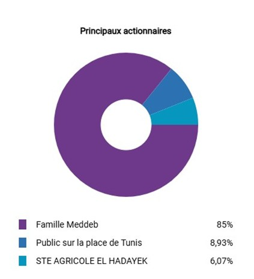
Les filiales du groupe Délice comprennent notamment :
Les pourcentages associés sont ceux des contributions opérationnelles ou financières limitativement apportées au groupe.
La gouvernance est assurée par un Conseil d'Administration et une Direction Générale centralisant la coordination de l'ensemble des activités industrielles et commerciales [ref11]. La figure suivante illustre l'organigramme du groupe Délice, mettant en évidence ses principales filiales et leur organisation hiérarchique :
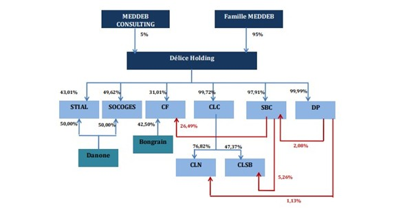
La figure suivante présente l'organigramme organisationnel de la société Délice, mettant en lumière la répartition des responsabilités au sein de l'entreprise :
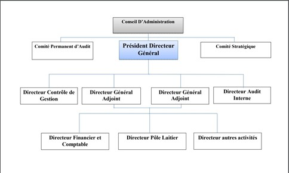
L'analyse de l'infrastructure existante met en évidence une architecture réseau traditionnelle centralisée présentant plusieurs limites en matière de sécurité, de performance et de disponibilité. L'entreprise repose principalement sur une topologie en étoile où l'ensemble des sites distants, agences et utilisateurs distants communiquent via le siège ou le datacenter central. Tous les flux réseau, y compris l'accès aux applications internes, aux services cloud et à Internet, transitent par ce point central. Cette organisation simplifie le contrôle des équipements de sécurité, mais entraîne une forte dépendance au site central, augmentant ainsi la latence et créant un goulot d'étranglement. Le trafic inter-sites doit également passer par le siège avant d'être redirigé, ce qui consomme inutilement la bande passante et dégrade les performances des applications métiers et des services SaaS. De plus, cette architecture crée un point de défaillance unique (SPOF) : toute panne du site central, du routeur principal ou du lien WAN peut impacter l'ensemble de l'organisation.
Sur le plan de la sécurité, l'infrastructure repose essentiellement sur un VPN périmétrique classique et un firewall stateful traditionnel. Une fois authentifié via le VPN, l'utilisateur obtient souvent un accès étendu au réseau interne sans contrôle granulaire suffisant, ce qui augmente les risques de mouvements latéraux en cas de compromission d'un compte. La segmentation réseau est assurée par des VLAN statiques nécessitant des configurations manuelles peu flexibles et difficilement adaptables au contexte de sécurité moderne. L'absence d'analyse comportementale avancée limite également la détection des attaques inconnues ou des comportements anormaux, tandis que la réponse aux incidents reste principalement manuelle, entraînant des délais de réaction importants. Enfin, la dépendance à un lien WAN principal réduit fortement la résilience du réseau et la continuité de service en cas de coupure. Cette architecture montre ainsi la nécessité d'évoluer vers un modèle plus agile, intelligent et sécurisé basé sur les principes du SD-WAN et du Zero Trust.
Comment concevoir une architecture réseau moderne et entièrement on-premise capable de sécuriser les accès multi-sites, de supprimer la confiance implicite, de détecter les attaques avancées et zero-day, d'automatiser la réponse aux incidents en moins d'une seconde, tout en garantissant une disponibilité de 99,9% et des performances WAN optimales ?
Pour répondre à ces enjeux critiques, l'architecture proposée dans ce projet intègre de manière synergique sept couches technologiques complémentaires :
La gestion du projet a reposé sur une approche itérative et incrémentale inspirée du framework Scrum, permettant une adaptation continue aux résultats obtenus lors des phases de tests et de validation.
Ce chapitre a posé les fondements du projet en présentant l'entreprise Délice, son contexte industriel et son organisation, puis en analysant les limites de son infrastructure réseau actuelle. Cette analyse a mis en évidence la nécessité de dépasser l'architecture traditionnelle centralisée, insuffisante face aux exigences modernes de sécurité, de performance et de résilience. La solution proposée répond à ces enjeux en combinant sept couches technologiques complémentaires : SD-WAN, ZTNA, SDN, ELK, Intelligence Artificielle, SOAR et monitoring unifié. Le chapitre suivant présentera les fondements théoriques de ces technologies et justifiera les choix techniques retenus pour construire cette architecture.
La transformation numérique des entreprises a profondément reconfiguré les exigences des infrastructures réseau. La généralisation du cloud computing, la mobilité accrue des utilisateurs et l'adoption massive des applications SaaS ont rendu insuffisants les modèles traditionnels de connectivité et de sécurité. Les architectures WAN classiques, initialement conçues pour interconnecter des sites fixes autour d'un datacenter central, peinent désormais à satisfaire simultanément les impératifs de performance, de résilience, de sécurité et d'agilité opérationnelle [cisco_sdw_design].
Face à ce constat, de nouveaux paradigmes technologiques ont émergé. Le Software-Defined WAN (SD-WAN) propose une gestion intelligente et centralisée du trafic réseau sur des liens hétérogènes. Le Zero Trust Network Access (ZTNA) remet en cause la notion de confiance implicite en imposant une vérification systématique de chaque accès. La gestion centralisée des identités via OpenLDAP et FreeRADIUS, couplée à une authentification multi-facteurs, renforce la robustesse des mécanismes d'identification. Enfin, la supervision avancée par la stack ELK et l'analyse réseau par Zeek permettent une meilleure observabilité des infrastructures modernes [nist_zero_trust,openziti_docs,elastic_stack_docs,zeek_docs].
Ce chapitre présente les fondements théoriques des technologies liées aux architectures réseau modernes. Il aborde successivement les limites des architectures WAN traditionnelles, les principes du SDN et du SD-WAN, l'architecture Cisco Catalyst SD-WAN, la gestion centralisée des identités, le modèle Zero Trust, les mécanismes d'observabilité ainsi que les concepts d'intelligence artificielle et de SOAR appliqués à la cybersécurité.
Un réseau étendu, ou Wide Area Network (WAN), désigne une infrastructure de communication permettant d'interconnecter plusieurs réseaux locaux géographiquement dispersés. Contrairement au LAN, limité généralement à un site ou à un bâtiment, le WAN couvre de longues distances et repose souvent sur des liaisons opérateur, des technologies de transport spécialisées ou des tunnels sécurisés établis sur Internet [cisco_sdw_design].
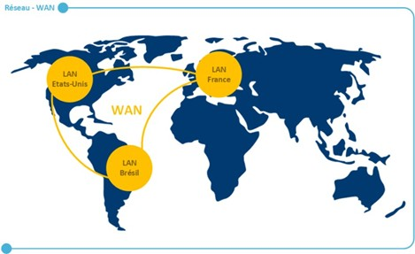
Les architectures WAN traditionnelles ont longtemps été construites autour d'un datacenter central. Les sites distants accèdent aux applications, aux données et aux services de sécurité en passant par ce site principal. Ce modèle était adapté lorsque la majorité des applications étaient hébergées localement, mais il devient moins efficace avec la généralisation du cloud, des applications SaaS et de la mobilité des utilisateurs [cisco_sdw_design].
Le Multiprotocol Label Switching (MPLS) est une technologie de transport utilisée dans les réseaux opérateurs et les environnements d'entreprise. Son fonctionnement repose sur la commutation d'étiquettes plutôt que sur l'analyse complète des adresses IP à chaque saut. Cette approche permet d'améliorer la prévisibilité du routage et de faciliter la gestion de la qualité de service [rfc3031_mpls].
Le MPLS permet notamment de définir des classes de service afin de prioriser certains flux critiques, comme la voix, la vidéo ou les applications métier sensibles à la latence. Cette capacité rend le MPLS intéressant pour les entreprises ayant des exigences fortes en matière de performance et de stabilité réseau [rfc3031_mpls,cisco_sdw_design].
Cependant, le MPLS présente plusieurs limites. Son coût est généralement plus élevé que celui des liens Internet classiques, son déploiement dépend fortement des opérateurs, et son provisionnement peut nécessiter des délais importants. De plus, dans un contexte cloud, le renvoi systématique du trafic vers un datacenter central peut provoquer une augmentation de la latence et une mauvaise utilisation de la bande passante [cisco_sdw_design].
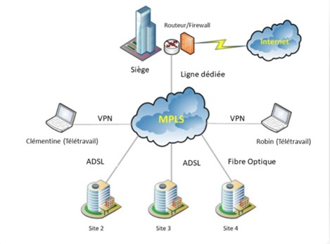
Le VPN IPsec constitue une solution courante pour sécuriser les communications entre sites à travers des réseaux publics. Il permet d'établir des tunnels chiffrés assurant la confidentialité, l'intégrité et l'authenticité des données échangées entre deux points du réseau [cisco_sdw_design].
Par rapport au MPLS, le VPN IPsec est généralement moins coûteux et plus flexible, car il peut utiliser des accès Internet standards. Il est donc largement utilisé pour connecter des agences, des utilisateurs distants ou des partenaires externes à une infrastructure d'entreprise [cisco_sdw_design].
Néanmoins, la gestion d'un grand nombre de tunnels IPsec peut devenir complexe. Chaque tunnel nécessite une configuration spécifique, des politiques de chiffrement cohérentes et une supervision continue. De plus, IPsec ne fournit pas automatiquement une sélection intelligente du chemin en fonction de la qualité applicative, comme la latence, la perte de paquets ou le jitter [cisco_sdw_design].

La topologie hub-and-spoke est l'un des modèles les plus utilisés dans les architectures WAN traditionnelles. Dans cette organisation, les sites distants, appelés spokes, communiquent avec les autres sites ou avec Internet en passant par un site central, appelé hub, généralement le siège ou le datacenter principal [cisco_sdw_design].

Ce modèle simplifie l'application des politiques de sécurité, car le filtrage, l'inspection et le contrôle du trafic sont centralisés. Toutefois, il crée une forte dépendance au site central. En cas de panne du hub, plusieurs sites peuvent être impactés. De plus, le trafic destiné au cloud ou aux services SaaS doit souvent transiter inutilement par le datacenter, ce qui génère un phénomène de backhauling [cisco_sdw_design].
Le modèle de sécurité périmétrique repose sur une séparation entre un réseau interne considéré comme fiable et un réseau externe considéré comme non fiable. Dans ce modèle, les pare-feux, les proxys et les équipements de filtrage sont généralement placés à la frontière du réseau afin de contrôler les échanges entrants et sortants [nist_zero_trust].
Cette approche devient insuffisante face aux menaces modernes. Lorsqu'un attaquant parvient à compromettre un compte utilisateur, un poste interne ou un accès VPN, il peut parfois se déplacer latéralement dans le réseau interne. Le problème principal vient donc de la confiance implicite accordée aux entités déjà présentes dans le périmètre réseau [nist_zero_trust].
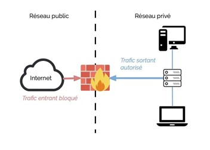
Les VLAN permettent de segmenter logiquement un réseau local en plusieurs domaines de diffusion indépendants. Cette technique améliore l'organisation du trafic, limite certains échanges directs entre groupes d'utilisateurs et facilite l'administration des réseaux d'entreprise [cisco_sdw_design].
Cependant, la segmentation par VLAN reste principalement statique. Les changements de politique nécessitent souvent des interventions manuelles sur les équipements réseau. De plus, cette segmentation ne prend pas toujours en compte le contexte de l'utilisateur, l'état du terminal ou le niveau de risque associé à une session [nist_zero_trust].
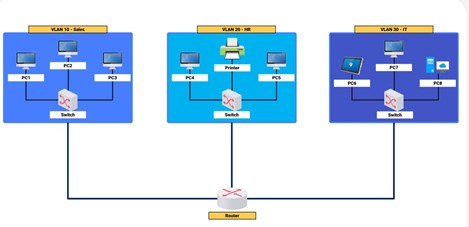
Les architectures WAN traditionnelles présentent plusieurs limites structurelles. Le modèle centralisé augmente la dépendance au datacenter, les liens MPLS peuvent représenter un coût important, et la gestion manuelle des configurations rend l'administration complexe à grande échelle [cisco_sdw_design].
| Limitation | Description | Impact |
|---|---|---|
| Point de défaillance unique | Dépendance forte au site central ou au datacenter | Risque d'interruption généralisée |
| Backhauling | Trafic cloud renvoyé vers le datacenter avant d'atteindre Internet | Latence élevée et surcharge WAN |
| Coûts élevés | Utilisation importante de liaisons MPLS | Augmentation des coûts d'exploitation |
| Gestion complexe | Configuration manuelle site par site | Risque d'erreurs et d'incohérences |
| Confiance implicite | Réseau interne considéré comme fiable | Mouvement latéral facilité après compromission |
Ces limites expliquent l'évolution des réseaux d'entreprise vers des architectures plus programmables, plus dynamiques et davantage centrées sur l'identité. Les concepts de SDN, SD-WAN et Zero Trust répondent directement à ces nouveaux besoins d'agilité, de sécurité et de supervision continue [onf_sdn_arch,nist_zero_trust,cisco_sdw_design].
Le Software-Defined Networking (SDN) est une approche réseau qui sépare le plan de contrôle du plan de données. Le plan de contrôle prend les décisions de routage et de politique réseau, tandis que le plan de données assure le transfert effectif des paquets. Cette séparation permet de centraliser la logique de contrôle dans un contrôleur logiciel [onf_sdn_arch].
Grâce à cette architecture, le réseau devient programmable. Les politiques peuvent être définies de manière centralisée puis appliquées automatiquement aux équipements réseau. Cette approche réduit la dépendance aux configurations manuelles et facilite l'automatisation, l'orchestration et l'adaptation dynamique du réseau [onf_sdn_arch,kreutz_sdn_survey].
Les architectures SDN sont généralement organisées en trois couches : la couche application, la couche de contrôle et la couche infrastructure. Les applications expriment les besoins réseau, le contrôleur traduit ces besoins en décisions, et les équipements appliquent les règles de transfert reçues [onf_sdn_arch].
La programmabilité réseau permet de modifier le comportement du réseau à travers des interfaces logicielles. Les interfaces northbound relient le contrôleur aux applications, tandis que les interfaces southbound, comme OpenFlow, relient le contrôleur aux équipements réseau [onf_sdn_arch].
Cette programmabilité facilite l'automatisation de tâches telles que la création de chemins réseau, l'application de politiques de sécurité, la gestion de la qualité de service ou la réaction à des événements détectés dans l'infrastructure. Elle constitue donc un élément essentiel des architectures réseau modernes [kreutz_sdn_survey].
Le SD-WAN applique les principes du SDN au réseau étendu. Il permet de gérer plusieurs types de liens, comme MPLS, Internet haut débit ou 4G/5G, à partir d'un plan de contrôle centralisé. Cette approche permet d'utiliser simultanément plusieurs transports au lieu de dépendre d'un seul type de liaison [cisco_sdw_design].
Le SD-WAN sélectionne dynamiquement le meilleur chemin pour les flux applicatifs en fonction de critères tels que la latence, la perte de paquets, le jitter ou la disponibilité du lien. Cette capacité améliore l'expérience utilisateur et permet une meilleure exploitation des ressources réseau disponibles [cisco_sdw_design,cisco_sdw_overview].
Cisco Catalyst SD-WAN, anciennement connu sous le nom de Viptela, est une solution SD-WAN permettant de construire une superposition logicielle sécurisée au-dessus de plusieurs réseaux de transport. Cette superposition peut fonctionner sur MPLS, Internet ou d'autres supports de connectivité [cisco_sdw_overview].
L'architecture Cisco Catalyst SD-WAN repose sur une séparation claire des fonctions de management, de contrôle, d'orchestration et de transfert des données. Cette séparation facilite l'administration centralisée, l'automatisation du déploiement et l'application cohérente des politiques réseau [cisco_sdw_design].

Le composant vManage représente le plan de management. Il fournit une interface centralisée pour configurer, superviser et administrer l'ensemble de l'infrastructure SD-WAN. Il permet notamment de créer des modèles de configuration, de déployer des politiques et de suivre l'état des équipements [cisco_sdw_design].
Le composant vSmart représente le plan de contrôle. Il distribue les informations de routage et les politiques aux équipements WAN Edge à l'aide du protocole OMP. Il centralise ainsi les décisions logiques sans transporter directement le trafic utilisateur [cisco_sdw_design,cisco_sdw_commands].
Le composant vBond assure le rôle d'orchestrateur. Il intervient lors de l'intégration initiale des équipements dans la fabric SD-WAN, facilite leur authentification et leur permet de découvrir les contrôleurs nécessaires au fonctionnement de l'overlay [cisco_sdw_design].
Les équipements WAN Edge, comme les routeurs vEdge ou cEdge, représentent le plan de données. Ils sont déployés sur les sites distants ou au datacenter, établissent les tunnels sécurisés et transmettent le trafic selon les politiques reçues du plan de contrôle [cisco_sdw_design].
L'OMP, ou Overlay Management Protocol, est un protocole utilisé dans Cisco SD-WAN pour distribuer les routes, les politiques et les informations relatives aux localisations de transport. Il fonctionne entre les contrôleurs vSmart et les équipements WAN Edge [cisco_sdw_design,cisco_sdw_commands].
Le TLOC, ou Transport Location, identifie un point de terminaison de transport dans l'architecture SD-WAN. Il est généralement défini par l'adresse système, la couleur du lien et le type d'encapsulation. Cette notion permet de différencier les chemins disponibles selon le transport utilisé [cisco_sdw_design].
Le protocole BFD, ou Bidirectional Forwarding Detection, permet de surveiller rapidement l'état des chemins réseau. Dans un environnement SD-WAN, il peut être utilisé pour mesurer la perte, la latence et le jitter afin d'aider à la sélection dynamique du meilleur chemin applicatif [cisco_sdw_design].
L'Application-Aware Routing permet d'associer des exigences de performance à des applications spécifiques. Le trafic peut ainsi être orienté vers le lien le plus adapté selon les seuils définis pour la latence, la perte ou le jitter [cisco_sdw_design].
Cisco Catalyst SD-WAN intègre des mécanismes de haute disponibilité à plusieurs niveaux. La redondance peut concerner les contrôleurs, les liens de transport ou les équipements WAN Edge. L'objectif général est d'éviter qu'une panne isolée entraîne une interruption globale du service réseau [cisco_sdw_design].
La haute disponibilité repose aussi sur la capacité du SD-WAN à basculer automatiquement d'un transport vers un autre lorsque les conditions réseau se dégradent. Cette capacité rend le WAN plus résilient que les architectures traditionnelles basées sur des liens passifs ou des basculements manuels [cisco_sdw_design].
OpenLDAP est une implémentation open source du protocole LDAP, ou Lightweight Directory Access Protocol. LDAP permet d'accéder à des services d'annuaire organisés de manière hiérarchique, afin de stocker et de rechercher des informations relatives aux utilisateurs, groupes, rôles ou ressources [rfc4511_ldap].
Dans une infrastructure de sécurité, un annuaire LDAP peut servir de référentiel central pour les identités numériques. Il permet de regrouper les comptes utilisateurs et leurs attributs dans une base unique, ce qui simplifie l'administration et facilite l'intégration avec des services d'authentification [rfc4511_ldap,freeradius_ldap].
Le modèle AAA signifie Authentication, Authorization and Accounting. L'authentification consiste à vérifier l'identité d'un utilisateur ou d'un équipement. L'autorisation détermine les ressources auxquelles l'entité authentifiée peut accéder. L'accounting permet de journaliser les connexions et les actions réalisées [rfc2865_radius].
RADIUS, ou Remote Authentication Dial-In User Service, est un protocole largement utilisé pour centraliser l'authentification réseau. Il fonctionne selon un modèle client-serveur dans lequel un équipement d'accès réseau transmet les demandes d'authentification vers un serveur RADIUS [rfc2865_radius].
FreeRADIUS est une implémentation open source du protocole RADIUS. Il permet d'intégrer plusieurs sources d'authentification, notamment des annuaires LDAP, des bases de données ou des mécanismes système. Il est fréquemment utilisé dans les environnements réseau pour centraliser les décisions d'accès [freeradius_ldap].
L'association de FreeRADIUS avec LDAP permet de séparer le rôle du serveur AAA et celui de l'annuaire. FreeRADIUS traite la logique d'authentification et d'autorisation, tandis que LDAP fournit les informations d'identité nécessaires à la validation des utilisateurs [freeradius_ldap,rfc4511_ldap].
PAM, ou Pluggable Authentication Modules, est un mécanisme modulaire permettant d'enchaîner plusieurs méthodes d'authentification sur les systèmes Unix/Linux. Il peut être utilisé pour combiner un mot de passe classique avec un second facteur d'authentification [freeradius_ldap].
TOTP, ou Time-Based One-Time Password, est un algorithme de mot de passe à usage unique basé sur le temps. Il génère un code temporaire à partir d'un secret partagé et d'une valeur temporelle. Ce mécanisme réduit le risque lié à la réutilisation d'un mot de passe intercepté [rfc6238_totp].
L'utilisation combinée de LDAP, FreeRADIUS, PAM et TOTP permet de construire une chaîne d'authentification centralisée et renforcée. Cette approche améliore la sécurité des accès en exigeant à la fois une identité valide et un second facteur temporaire [rfc2865_radius,rfc6238_totp,freeradius_ldap].
Le modèle Zero Trust repose sur le principe qu'aucune entité ne doit être considérée comme fiable par défaut, même si elle se trouve à l'intérieur du réseau de l'entreprise. La confiance n'est donc pas liée à la position réseau, mais à une vérification explicite et continue de l'identité, du contexte et des droits d'accès [nist_zero_trust].
Selon cette approche, chaque demande d'accès doit être évaluée avant d'être autorisée. Le modèle Zero Trust privilégie le moindre privilège, la segmentation fine des accès et la réduction de la surface d'attaque. Il répond ainsi aux limites du modèle périmétrique traditionnel [nist_zero_trust].
OpenZiti est un framework open source permettant de mettre en œuvre des principes Zero Trust au niveau applicatif. Il repose sur un réseau overlay sécurisé dans lequel les accès sont contrôlés par l'identité plutôt que par l'adresse IP ou l'emplacement réseau [openziti_docs].
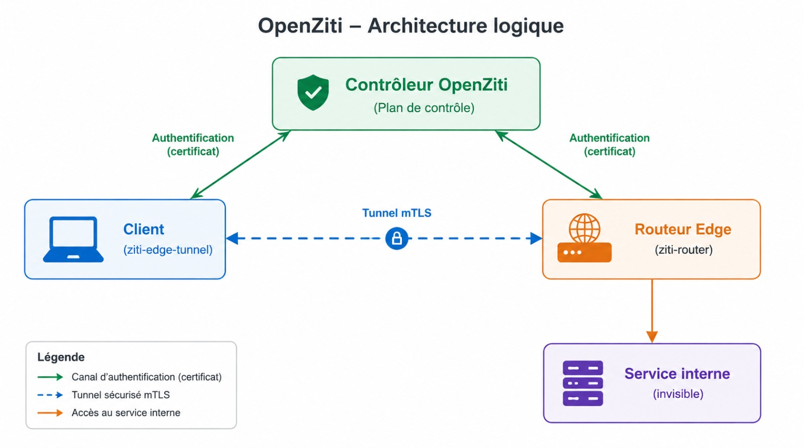
Dans OpenZiti, les composants principaux comprennent le contrôleur, les routeurs edge, les identités et les services. Le contrôleur gère les politiques, les identités et l'orchestration globale, tandis que les routeurs edge assurent le transport sécurisé des flux applicatifs [openziti_docs].
Dans une architecture OpenZiti, chaque entité possède une identité cryptographique. Cette identité est utilisée pour authentifier les clients, les services ou les routeurs avant d'autoriser toute communication. L'objectif est de remplacer la confiance basée sur le réseau par une confiance basée sur l'identité vérifiée [openziti_docs,nist_zero_trust].
OpenZiti s'appuie sur des mécanismes de communication sécurisée entre les différentes entités du réseau overlay. L'utilisation de certificats et de mécanismes d'authentification forte permet de limiter les accès non autorisés et de protéger les échanges [openziti_docs].
Un principe important du ZTNA est de rendre les services non directement exposés au réseau public. Les services protégés ne sont accessibles qu'aux identités autorisées par les politiques d'accès. Cette approche réduit la surface d'attaque et limite les possibilités de reconnaissance par un attaquant [openziti_docs,nist_zero_trust].
La micro-segmentation consiste à limiter précisément les communications autorisées entre utilisateurs, applications et services. Dans une approche Zero Trust, un utilisateur authentifié n'obtient pas un accès global au réseau, mais uniquement aux ressources nécessaires à son rôle [nist_zero_trust].
OpenZiti permet d'exprimer ces règles à travers des politiques d'accès associées aux identités et aux services. Cette logique facilite l'application du principe du moindre privilège et permet une gestion plus fine des autorisations [openziti_docs].
Les infrastructures modernes génèrent de nombreux événements provenant de sources variées : systèmes d'exploitation, équipements réseau, applications, services d'authentification et outils de sécurité. Sans centralisation, l'analyse de ces événements devient difficile et les incidents peuvent passer inaperçus [elastic_stack_docs].
L'observabilité vise à fournir une vision globale de l'état d'une infrastructure. Elle repose sur la collecte, la centralisation, l'indexation et la visualisation des données techniques afin d'aider les administrateurs à détecter les anomalies, comprendre les incidents et suivre l'évolution du système [elastic_stack_docs].
La stack ELK regroupe principalement Elasticsearch, Logstash et Kibana. Elasticsearch assure le stockage, l'indexation et la recherche des données. Logstash permet l'ingestion, le filtrage et la transformation des événements. Kibana fournit l'interface de visualisation et d'exploration des données [elastic_stack_docs].

Cette architecture permet de construire un pipeline complet de traitement des logs. Les événements sont collectés depuis différentes sources, transformés dans un format exploitable, indexés dans Elasticsearch puis visualisés sous forme de tableaux de bord dans Kibana [elastic_stack_docs].
Apache Kafka est une plateforme distribuée de streaming d'événements. Elle permet de publier, stocker et consommer des flux de données en temps réel. Son modèle repose sur des topics dans lesquels les producteurs écrivent des événements et que les consommateurs peuvent lire indépendamment [kafka_docs].
Dans une architecture de supervision, Kafka peut servir de couche intermédiaire entre les sources de logs et les outils de traitement. Il améliore la résilience du pipeline en absorbant les pics de charge et en permettant une consommation asynchrone des événements [kafka_docs].
Syslog est un protocole utilisé pour transporter des messages de journalisation à travers le réseau. Les standards RFC 3164 et RFC 5424 décrivent respectivement l'ancien format BSD Syslog et le protocole Syslog moderne avec une structure plus formalisée [rfc3164_syslog,rfc5424_syslog].
Syslog-ng est un outil permettant de collecter, filtrer et transférer des journaux système et réseau. Il facilite la centralisation des événements provenant d'équipements hétérogènes, ce qui constitue une étape importante pour la supervision et l'analyse de sécurité [rfc5424_syslog].
Zeek, anciennement Bro, est un framework d'analyse réseau passif. Il inspecte le trafic réseau et génère des journaux structurés décrivant les connexions, requêtes DNS, sessions HTTP, échanges TLS, transferts de fichiers et autres événements réseau [zeek_docs].
Contrairement à un simple outil de capture de paquets, Zeek produit des logs de haut niveau exploitables pour l'analyse de sécurité. Ces journaux peuvent ensuite être intégrés dans une plateforme comme ELK afin de faciliter la détection d'anomalies et l'investigation d'incidents [zeek_docs,elastic_stack_docs].
Elasticsearch est un moteur de recherche et d'analyse distribué. Il permet d'indexer de grands volumes de données et d'effectuer des recherches rapides sur des événements structurés ou semi-structurés [elastic_stack_docs].
Dans un contexte de supervision, Elasticsearch est utilisé pour stocker les logs collectés et permettre leur interrogation. Les données peuvent être organisées en index thématiques, par exemple selon leur source, leur type ou leur période temporelle [elastic_stack_docs].
Kibana est l'interface de visualisation associée à Elasticsearch. Elle permet de créer des tableaux de bord, d'explorer les événements, de suivre des indicateurs et d'analyser les tendances temporelles [elastic_stack_docs].
Grâce à Kibana, les administrateurs peuvent transformer les logs bruts en informations visuelles exploitables. Cette visualisation facilite la compréhension de l'état du système, la détection d'anomalies et le suivi des incidents [elastic_stack_docs].
L'analyse comportementale consiste à établir un profil du fonctionnement normal d'un système, puis à détecter les écarts significatifs par rapport à ce comportement de référence. Dans le domaine de la cybersécurité, cette approche permet d'identifier des activités inhabituelles qui ne correspondent pas forcément à une signature connue [zeek_docs,elastic_stack_docs].
Des algorithmes d'apprentissage automatique peuvent être utilisés pour analyser les flux réseau et les événements de sécurité. Par exemple, certains modèles permettent d'identifier des événements statistiquement rares, tandis que d'autres sont adaptés à l'analyse de séries temporelles ou de séquences d'événements [kreutz_sdn_survey].
Le SOAR, ou Security Orchestration, Automation and Response, désigne une approche visant à automatiser certaines actions de réponse aux incidents de sécurité. Il permet d'orchestrer plusieurs outils, de déclencher des actions prédéfinies et de réduire le temps de réaction face aux alertes [elastic_stack_docs].
Dans une architecture de sécurité moderne, le SOAR peut compléter les outils de supervision en transformant certaines alertes en actions opérationnelles. Par exemple, il peut déclencher une notification, enrichir une alerte, isoler un actif compromis ou lancer un scénario de remédiation selon des règles définies [elastic_stack_docs,nist_zero_trust].
L'intégration de mécanismes d'analyse comportementale avec un système SOAR permet d'évoluer vers une sécurité plus proactive. Les événements collectés sont analysés, les anomalies sont détectées, puis certaines réponses peuvent être automatisées afin de limiter l'impact d'un incident [elastic_stack_docs,zeek_docs,nist_zero_trust].
Ce chapitre a présenté les principaux concepts théoriques liés aux architectures réseau modernes et à la cybersécurité des accès multi-sites. L'étude des architectures WAN traditionnelles a permis de mettre en évidence leurs limites, notamment la dépendance au datacenter, le phénomène de backhauling, la complexité de gestion et la confiance implicite accordée au réseau interne [cisco_sdw_design,nist_zero_trust].
Les principes du SDN et du SD-WAN montrent l'évolution vers des infrastructures plus programmables, centralisées et dynamiques. Cisco Catalyst SD-WAN illustre cette évolution à travers une architecture composée de plans fonctionnels distincts, facilitant la gestion centralisée, la supervision et l'optimisation du trafic applicatif [onf_sdn_arch,cisco_sdw_design].
La gestion centralisée des identités, l'authentification AAA, le modèle Zero Trust et les mécanismes ZTNA renforcent la sécurité en plaçant l'identité vérifiée au centre des décisions d'accès. Par ailleurs, les outils d'observabilité tels qu'ELK, Kafka, Syslog-ng et Zeek permettent de collecter, corréler et analyser les événements issus de l'infrastructure. Enfin, l'intelligence artificielle et le SOAR constituent des pistes d'évolution vers une détection plus proactive et une réponse plus automatisée aux incidents de sécurité [rfc2865_radius,rfc4511_ldap,openziti_docs,elastic_stack_docs,zeek_docs].
Ce chapitre présente la conception détaillée de l'architecture proposée pour répondre aux insuffisances des infrastructures réseau traditionnelles identifiées dans le chapitre précédent. L'objectif est de concevoir une solution cohérente, réaliste et implémentable en environnement virtualisé, combinant plusieurs paradigmes technologiques complémentaires.
L'architecture cible repose sur quatre objectifs stratégiques :
par une authentification forte et une autorisation explicite, conformément au modèle Zero Trust ;
dynamiquement par un plan de contrôle SD-WAN centralisé ;
et système est collecté, indexé et visualisé en continu ;
comportementale et d'orchestration permettent une réaction rapide aux incidents détectés.
Les briques technologiques retenues sont les suivantes : Cisco SD-WAN pour la connectivité, OpenZiti pour le ZTNA, OpenLDAP et FreeRADIUS pour la gestion des identités, Open vSwitch et le contrôleur Ryu pour la programmabilité réseau, et la stack ELK couplée à Kafka, Spark et Zeek pour la supervision et l'analyse.
Les besoins fonctionnels définissent les comportements attendus du système du point de vue de l'utilisateur et de l'administrateur. Ils constituent la base de validation de l'architecture proposée.
Le système doit imposer une authentification forte pour tout accès aux ressources internes. Cette authentification combine un identifiant LDAP, un mot de passe statique et un code TOTP à usage unique généré par Google Authenticator. Un utilisateur ne disposant pas du second facteur doit se voir refuser l'accès, quelle que soit la validité de son mot de passe.
L'accès aux services internes doit être accordé au niveau applicatif, et non au niveau réseau. Les ressources protégées ne doivent être visibles ni accessibles depuis l'extérieur sans identité OpenZiti valide. Chaque accès autorisé est limité au service spécifique concerné, conformément au principe de moindre privilège.
L'architecture doit intégrer une couche d'analyse comportementale capable de détecter les flux anormaux — scans de ports, comportements inhabituels, volumes de trafic atypiques — à partir des journaux réseau générés par Zeek et traités par Spark Structured Streaming.
Les tableaux de bord Kibana doivent fournir une vision en temps réel de l'activité réseau, des événements d'authentification, des tentatives d'accès refusées et des alertes générées. La latence entre l'événement et sa visualisation ne doit pas dépasser quelques secondes.
En cas de détection d'une anomalie critique, le système doit déclencher automatiquement une action d'isolation — blocage d'un adresse IP via SOAR ou révocation d'un attribut OpenZiti — sans intervention humaine.
L'architecture SD-WAN doit garantir la continuité de service en cas de défaillance d'un lien WAN, par basculement automatique entre les transports disponibles (MPLS et Internet) avec un temps de convergence minimal.
L'ensemble des événements système, réseau et applicatifs doit être centralisé dans Elasticsearch, avec une rétention configurée et une structure d'indexation permettant les recherches et corrélations avancées.
| Besoin | Description | Priorité |
|---|---|---|
| Authentification MFA | LDAP + mot de passe + TOTP obligatoires | Critique |
| Accès Zero Trust | Accès applicatif par identité, service invisible | Critique |
| Détection comportementale | Analyse flux Zeek par Spark | Haute |
| Supervision temps réel | Kibana < quelques secondes de latence | Haute |
| Isolation automatique | Blocage OVS / révocation OpenZiti | Haute |
| Haute disponibilité WAN | Basculement MPLS/Internet automatique | Critique |
| Segmentation réseau | Zones isolées contrôlées par Ryu/OVS | Haute |
| Journalisation centralisée | Indexation Elasticsearch structurée | Moyenne |
Les besoins non fonctionnels définissent les contraintes de qualité auxquelles l'architecture doit satisfaire indépendamment des fonctionnalités.
Toutes les communications doivent être chiffrées. Les tunnels SD-WAN reposent sur IPsec, les connexions OpenZiti sur mTLS, et l'accès au portail d'authentification sur TLS. Aucun service interne ne doit être directement exposé sur un réseau public.
L'architecture doit pouvoir accueillir de nouveaux sites SD-WAN et de nouvelles identités OpenZiti sans refonte structurelle. Le pipeline Kafka/Spark doit absorber une montée en charge des volumes de logs sans dégradation de performance.
L'objectif de disponibilité du WAN est de 99,9%. Les contrôleurs SD-WAN (vManage, vSmart) et le contrôleur OpenZiti doivent être déployés en configuration redondante.
La sélection des chemins WAN par Application-Aware Routing doit maintenir une latence inférieure aux seuils SLA définis pour chaque classe de service. La latence d'authentification via FreeRADIUS ne doit pas dépasser 200 ms.
En cas de défaillance d'un composant, le système doit continuer à fonctionner en mode dégradé. Le basculement WAN doit être transparent pour l'utilisateur.
Le trafic SaaS et cloud doit être acheminé localement (local breakout) sans transiter par le datacenter central, afin de minimiser la consommation des liens WAN inter-sites.
La gestion des politiques réseau, des identités et des règles de sécurité doit être centralisée pour garantir la cohérence et simplifier l'exploitation.
Les composants doivent être déployés de manière reproductible. Les configurations doivent être versionnées et documentées pour faciliter les mises à jour et les interventions correctives.
| Critère | Exigence | Indicateur |
|---|---|---|
| Sécurité | Chiffrement systématique des flux | IPsec, mTLS, TLS |
| Scalabilité | Ajout de sites/identités sans refonte | Architecture modulaire |
| Disponibilité | Continuité de service WAN | 99,9% |
| Faible latence | Respect des seuils SLA applicatifs | < 150 ms voix |
| Résilience | Fonctionnement en mode dégradé | Basculement < 1 s |
| Performances WAN | Local breakout pour trafic cloud | Éviter le backhauling |
| Centralisation | Gestion unifiée des politiques | vManage, OpenZiti Ctrl |
| Maintenabilité | Configurations reproductibles | Documentation et versioning |
L'ensemble des besoins fonctionnels et non fonctionnels converge vers une architecture en couches, dans laquelle chaque brique technologique adresse un périmètre précis. La connectivité intelligente est assurée par le SD-WAN, la sécurité des accès par OpenZiti et la chaîne AAA, l'observabilité par le pipeline ELK/Kafka/Zeek, et l'automatisation par les mécanismes SDN et SOAR. Cette organisation en couches indépendantes garantit la cohérence, la maintenabilité et l'évolutivité de l'architecture.
L'architecture proposée s'organise en sept couches fonctionnelles superposées, chacune apportant une capacité spécifique et interagissant avec les couches adjacentes.

| Couche | Rôle principal | Technologies |
|---|---|---|
| Infrastructure | Support physique/virtuel des équipements | EVE-NG, KVM |
| SD-WAN | Connectivité multi-sites intelligente | Cisco Catalyst SD-WAN |
| SDN | Programmabilité et segmentation réseau | OVS, Ryu |
| Zero Trust | Contrôle d'accès basé sur l'identité | OpenZiti, LDAP, RADIUS |
| Big Data | Collecte, parsing, indexation, visualisation | Zeek, Kafka, Spark, ELK |
| IA | Détection comportementale et scoring | Spark ML, Isolation Forest |
| SOAR | Orchestration et réponse automatisée | Playbooks, scripts SDN |
La circulation des données entre couches suit un flux montant (du réseau vers l'analyse) et descendant (des décisions d'orchestration vers les actionneurs réseau). Les événements réseau captés par Zeek remontent via Kafka vers Spark pour analyse ; les décisions d'isolation descendent via le contrôleur Ryu vers Open vSwitch ou via l'API OpenZiti pour révocation d'attributs.
composants, facilitant leur évolution individuelle sans impacter l'ensemble de l'architecture.
L'architecture SD-WAN déployée dans ce projet couvre deux sites principaux : le siège (HQ) hébergeant le datacenter et les contrôleurs, et une agence distante (Branch) simulée en environnement virtualisé. La connectivité inter-sites repose sur deux transports simultanés : une liaison MPLS simulée et un lien Internet.

| Composant | Rôle |
|---|---|
| vManage | Interface centralisée de configuration, supervision et application des politiques |
| vSmart | Distribution des routes OMP et des politiques de sécurité aux WAN Edge |
| vBond | Authentification et enregistrement des WAN Edge lors du provisionnement |
| WAN Edge HQ | Équipement de bordure du site principal, terminaison des tunnels IPsec |
| WAN Edge Branch | Équipement de bordure de l'agence, sélection dynamique du transport |
La sélection dynamique des chemins repose sur les métriques BFD collectées en continu sur chaque tunnel. L'Application-Aware Routing associe chaque application à des seuils SLA — latence maximale, perte de paquets tolérable, jitter admissible — et bascule automatiquement le flux vers le transport alternatif lorsqu'un seuil est dépassé.
| Classe | Transport préféré | Latence max | Perte max | Jitter max |
|---|---|---|---|---|
| Voix/Vidéo | MPLS | 150 ms | 1% | 30 ms |
| Applications critiques | MPLS | 200 ms | 2% | 50 ms |
| Trafic SaaS | Internet | 300 ms | 5% | 100 ms |
| Trafic bulk | Internet | Best-effort | — | — |
L'architecture Zero Trust repose sur le principe Never Trust, Always Verify : aucune entité n'est présumée fiable, et chaque demande d'accès est évaluée indépendamment de la position réseau du demandeur. L'identité vérifiée constitue le périmètre de sécurité principal, remplaçant la frontière réseau des architectures périmétriques traditionnelles.
OpenZiti implémente ce paradigme en créant un réseau superposé chiffré dans lequel les services internes sont totalement invisibles depuis l'extérieur. Seule une identité cryptographique valide, associée aux attributs d'autorisation requis, permet d'accéder à un service donné.
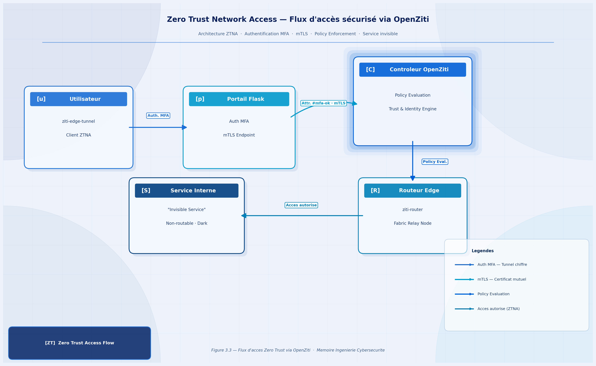
Chaque entité du réseau Ziti est représentée par une identité dotée d'un certificat X.509. L'authentification mutuelle mTLS garantit que le client et le routeur se vérifient mutuellement, éliminant les risques d'usurpation d'identité.
L'accès au service protégé requiert une authentification en deux étapes : validation des credentials LDAP par FreeRADIUS, puis vérification du code TOTP. Le succès de cette double validation déclenche l'attribution temporaire de l'attribut \#mnmgnt-mfa-ok à l'identité OpenZiti correspondante.
Les service-policies OpenZiti conditionnent l'accès à chaque service à la présence d'attributs de rôle spécifiques. L'attribut \#mnmgnt-mfa-ok est accordé pour une durée limitée et révoqué automatiquement à son expiration, réalisant un accès just-in-time conforme au principe de moindre privilège.
Chaque service Ziti est isolé dans sa propre zone logique. Un accès autorisé à un service ne permet pas d'atteindre les autres services, bloquant structurellement tout mouvement latéral.
| Critère | VPN Traditionnel | ZTNA (OpenZiti) |
|---|---|---|
| Modèle de confiance | Implicite après connexion | Vérification systématique |
| Niveau d'accès | Réseau global | Applicatif et granulaire |
| Exposition services | Directement accessibles | Masqués, invisibles |
| Authentification | Facteur unique ou double | mTLS + MFA obligatoires |
| Révocation | Manuelle | Automatique à expiration |
| Mouvement latéral | Facilité | Structurellement bloqué |
internes invisibles, impose une authentification forte et garantit un accès temporaire et révocable, répondant directement aux lacunes du modèle VPN.
La couche SDN, pour Software Defined Networking, représente la partie programmable de l'architecture réseau. Elle permet de séparer le plan de contrôle du plan de données afin de centraliser la gestion des flux réseau. Dans ce projet, la couche SDN est déployée dans une machine virtuelle dédiée appelée VM SDN. Cette machine contient deux composants principaux : Open vSwitch et le contrôleur Ryu.
Open vSwitch joue le rôle de commutateur virtuel programmable. Il transporte les flux entre les différentes machines du laboratoire, notamment la passerelle ZTNA, le serveur Web, les machines internes et les autres composants réseau. Ryu joue le rôle de contrôleur SDN. Il permet de piloter Open vSwitch à l'aide du protocole OpenFlow et d'installer dynamiquement des règles de forwarding, de blocage ou de mirroring.
L'objectif principal de la couche SDN est de rendre le réseau programmable, contrôlable et adaptable aux besoins de sécurité. Elle permet notamment :
La couche SDN ne remplace pas les mécanismes de sécurité comme Suricata ou le SOAR. Elle agit comme une couche réseau programmable sur laquelle les décisions de sécurité peuvent être appliquées.
Dans l'architecture proposée, la VM SDN est positionnée entre plusieurs composants importants : la passerelle ZTNA, le vEdge-HQ, le serveur Web/Application, la VM Zeek et la plateforme ELK.
L'architecture logique peut être représentée comme suit :
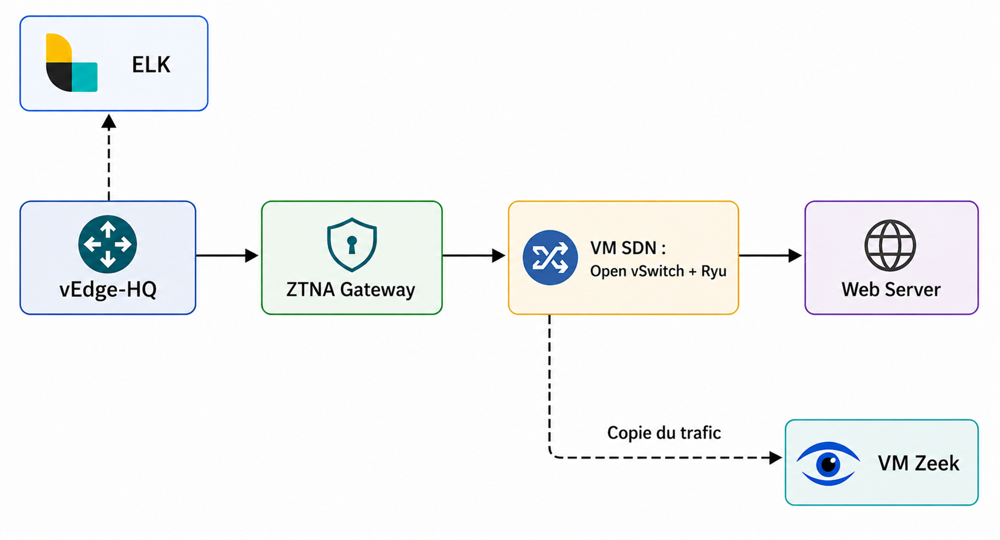
La VM SDN assure donc deux fonctions principales. La première consiste à transporter et contrôler les flux réseau entre les différentes machines. La deuxième consiste à dupliquer certains flux vers Zeek afin de permettre l'analyse passive du trafic.
La plateforme ELK constitue le cœur de la supervision, de la collecte, de l'analyse et de la visualisation des événements de sécurité dans l'architecture proposée. Elle est composée principalement de trois éléments : Elasticsearch, Logstash et Kibana. Dans ce projet, cette plateforme est enrichie par Kafka, Spark Streaming, un moteur d'intelligence artificielle, Suricata, Zeek, Filebeat, Syslog-ng et un système SOAR.
L'objectif principal de cette configuration est de mettre en place une chaîne complète de traitement des logs permettant de collecter les événements issus des machines virtuelles, des équipements réseau, de Suricata, de Zeek et des composants SD-WAN, puis de les analyser et de les afficher dans Kibana. Les événements suspects peuvent ensuite être transmis au système SOAR afin de déclencher des actions de réponse automatique, comme le blocage d'une adresse IP malveillante.
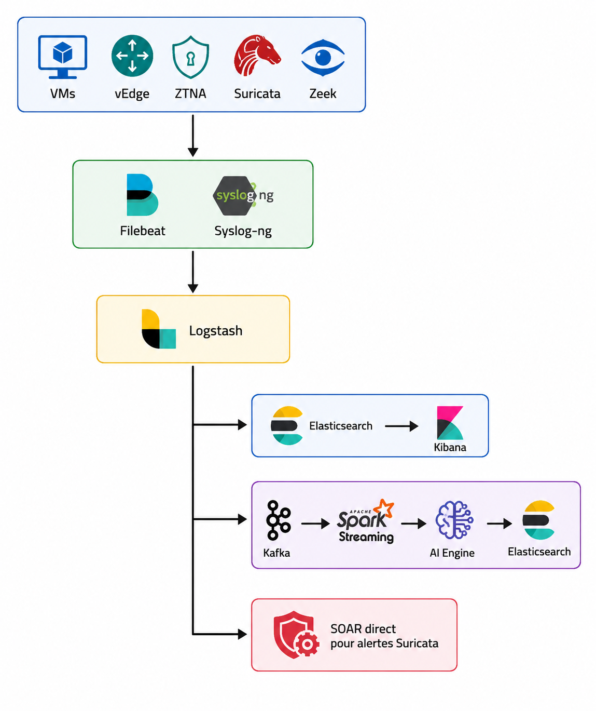
Cette architecture permet de séparer les flux de logs selon leur nature. Les logs classiques peuvent être traités par Kafka, Spark Streaming et le moteur d'IA, tandis que les alertes Suricata peuvent être envoyées directement au SOAR pour accélérer la réponse aux incidents.
Zeek analyse le trafic réseau de manière passive et génère des journaux structurés décrivant les connexions (conn.log), les requêtes DNS (dns.log), les sessions HTTP (http.log) et les flux SSL (ssl.log). Syslog-ng centralise les journaux système provenant de l'ensemble des équipements et les achemine vers Kafka.
Kafka reçoit les flux d'événements et les distribue dans des topics thématiques — zeek-conn, zeek-dns, auth-logs, syslog — garantissant une ingestion résiliente et un découplage entre les producteurs et les consommateurs.
Spark Structured Streaming consomme les topics Kafka en temps réel, effectue le parsing et le feature engineering des événements, et transmet les données enrichies à Elasticsearch. Des micro-batches configurables permettent d'ajuster la latence de traitement selon les exigences.
Elasticsearch indexe les événements dans des indices thématiques (zeek-*, ztna-logs-*, auth-*) avec une structure de mapping optimisée pour les recherches temporelles et les agrégations.
Kibana fournit des tableaux de bord de supervision permettant de visualiser l'activité réseau, les événements d'authentification, les alertes et les scores d'anomalie en temps réel.
| Source | Topic Kafka | Contenu |
|---|---|---|
| Zeek | zeek-conn | Connexions TCP/UDP, IPs, ports, durées |
| Zeek | zeek-dns | Requêtes/réponses DNS, domaines résolus |
| Zeek | zeek-http | Requêtes HTTP, codes de réponse, user-agents |
| Zeek | zeek-ssl | Sessions TLS, certificats, algorithmes |
| Syslog-ng | syslog | Journaux système Linux, équipements réseau |
| FreeRADIUS | auth-logs | Authentifications réussies et refusées |
| OpenZiti | ztna-events | Accès autorisés, refus, révocations d'attributs |
supervision, transformant des flux d'événements hétérogènes en données structurées, interrogeables et visualisables en temps quasi-réel.
La couche IA constitue une extension avancée de l'architecture Big Data, visant à automatiser la détection des comportements anormaux à partir des données indexées dans Elasticsearch. Elle est présentée ici comme une couche d'analyse comportementale académique, dont l'intégration dans l'architecture est conçue mais dont les performances restent soumises à la qualité et au volume des données d'entraînement disponibles dans l'environnement de laboratoire.
La détection d'anomalies repose sur l'établissement d'un modèle du comportement réseau normal, puis sur l'identification des événements qui s'en écartent significativement. Contrairement aux systèmes basés sur des signatures, cette approche permet de détecter des menaces inconnues dont le pattern n'est pas encore répertorié.
Les features extraites des logs Zeek pour l'analyse incluent notamment : le nombre de connexions par source par unité de temps, le nombre de ports distincts ciblés, la durée moyenne des sessions, le ratio bytes envoyés / bytes reçus, et le taux de connexions refusées.
La plateforme SOC intègre six modèles d'analyse comportementale complémentaires, sélectionnés pour couvrir à la fois la détection supervisée (attaques connues) et la détection non supervisée (comportements anomaux inédits). Le tableau ci-dessous résume les caractéristiques principales de chaque modèle.
| Modèle | Principe | Type | Usage |
|---|---|---|---|
| Isolation Forest | Isole les anomalies en construisant des arbres aléatoires sur des sous-espaces | Non supervisé | Détection générale |
| Random Forest | Agrège des arbres de décision pour la classification supervisée | Supervisé | Classification binaire |
| Extra Trees | Variante du Random Forest avec coupures aléatoires plus prononcées, réduisant la variance | Supervisé | Classification robuste |
| Gradient Boosting | Construit séquentiellement des apprenants faibles en corrigeant les erreurs des précédents | Supervisé | Classification précise |
| LSTM | Réseau récurrent pour l'analyse de séquences temporelles d'événements par entité (IP/host) | Semi-supervisé | Anomalies temporelles |
| Autoencoder | Reconstruction des données : anomalie si erreur de reconstruction (MSE) élevée | Non supervisé | Détection fine |
Les modèles supervisés (Random Forest, Extra Trees, Gradient Boosting) ont été entraînés sur les jeux de données CIC-IDS-2017/2018 avec des labels d'attaques explicites. Les modèles non supervisés (Autoencoder, Isolation Forest) ont été entraînés uniquement sur du trafic normal afin d'apprendre la distribution bénigne et de détecter tout écart significatif. Le modèle LSTM combine les deux approches en exploitant les séquences d'événements labellisées pour apprendre les patterns temporels d'attaques multi-étapes.
Les six modèles ne fonctionnent pas indépendamment : leurs sorties sont agrégées par un moteur de fusion (Fusion Engine) qui produit un verdict unique par événement. L'ensemble supervisé (Random Forest + Extra Trees + Gradient Boosting) vote par moyennage des probabilités (soft voting). Le score LSTM pondère la décision lorsque la séquence d'entité est significative.
Les scores d'anomalie de l'Autoencoder et de l'Isolation Forest interviennent comme signaux de renforcement : un événement jugé normal par les modèles supervisés mais fortement anomal par les modèles non supervisés voit son risk_score augmenté.
Le verdict final (normal / suspicious / malicious) et le risk_score (0--100) résultent de cette fusion pondérée.
L'évaluation des modèles repose sur des métriques standards adaptées aux problèmes de détection d'anomalies, où les classes sont fortement déséquilibrées (trafic normal très majoritaire).
| Métrique | Formule | Interprétation |
|---|---|---|
| Précision | VP / (VP + FP) | Proportion de vraies anomalies parmi les alertes générées |
| Rappel | VP / (VP + FN) | Proportion d'anomalies réelles détectées |
| F1-score | 2 P RP + R | Moyenne harmonique de la précision et du rappel |
| AUC-ROC | Aire sous courbe ROC | Mesure la discrimination globale du modèle (1.0 = parfait, 0.5 = aléatoire) |
| Accuracy | (VP + VN) / Total | Taux global de classification correcte (peu représentatif sur classes déséquilibrées) |
En pratique, le F1-score et l'AUC-ROC sont les indicateurs les plus pertinents dans un contexte de détection d'intrusion, car ils tiennent compte du déséquilibre naturel entre trafic normal et trafic malveillant. La précision est particulièrement critique dans un SOC opérationnel : un taux de faux positifs élevé sature les analystes et dégrade la réactivité face aux vraies menaces.
Les modèles entraînés hors ligne sur des données historiques sont intégrés dans le pipeline Spark Structured Streaming via la bibliothèque Spark MLlib. Chaque micro-batch issu de Kafka est soumis au modèle, qui produit un score de risque pour chaque flux analysé. Les événements dont le score dépasse un seuil configurable sont publiés dans un topic Kafka dédié (alerts) pour traitement par la couche SOAR.
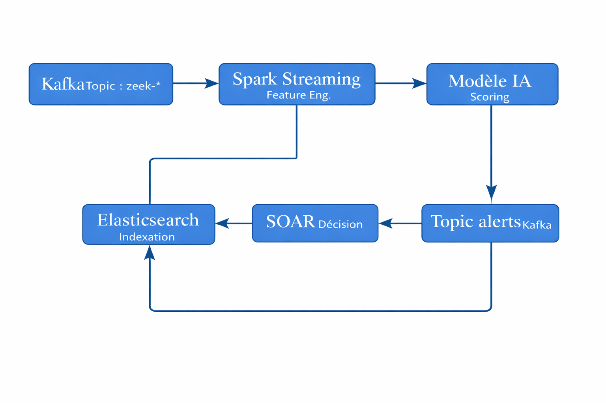
académique. Ses performances dans l'environnement de laboratoire dépendent de la représentativité des données d'entraînement disponibles.
La couche SOAR (Security Orchestration, Automation and Response) constitue le mécanisme de réponse automatisée aux alertes générées par la couche IA. Elle est présentée ici comme une logique d'orchestration académique et expérimentale.
L'objectif de la couche SOAR est d'automatiser la réponse aux incidents détectés par les composants de sécurité. Contrairement à une supervision classique où l'administrateur doit analyser manuellement les alertes et intervenir sur les équipements, le SOAR permet d'exécuter automatiquement des actions correctives.
Dans cette architecture, le SOAR permet notamment :
La couche SOAR constitue donc le point de décision et d'action de la plateforme de sécurité.
Le SOAR reçoit les événements de deux manières principales. La première source correspond aux alertes Suricata envoyées directement par Logstash. Cette méthode permet d'obtenir une réponse rapide aux attaques réseau détectées par l'IDS. La deuxième source correspond aux alertes générées par le pipeline d'intelligence artificielle. Dans ce cas, le SOAR lit les index Elasticsearch contenant les événements enrichis par Spark Streaming et l'AI Engine.
peut être résumé comme suit :
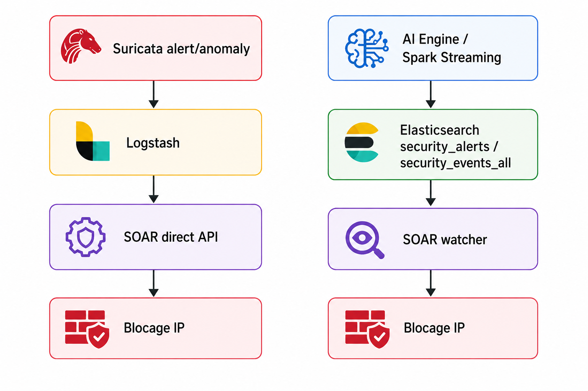
Cette séparation permet d'avoir une architecture plus efficace. Les alertes Suricata critiques sont envoyées directement au SOAR, tandis que les événements enrichis par intelligence artificielle restent disponibles dans Elasticsearch pour analyse et corrélation.
académique. En production, son déploiement nécessiterait une validation approfondie des seuils de décision et des mécanismes d'escalade humaine.
La couche SOAR apporte une forte valeur ajoutée à l'architecture de sécurité. Elle permet de passer d'un système de supervision passif à un système de réponse active. Grâce à son intégration avec Suricata, Elasticsearch, l'AI Engine, la ZTNA Gateway et les équipements vEdge, le SOAR peut réagir automatiquement aux attaques réseau.
Son apport peut être résumé comme suit :
Ainsi, le SOAR constitue une couche essentielle de l'architecture proposée. Il transforme les alertes de sécurité en actions concrètes, mesurables et traçables, tout en offrant à l'administrateur un contrôle direct sur le niveau d'automatisation appliqué.
La topologie du Datacenter constitue le cœur de l’architecture proposée. Elle regroupe les composants de sécurité, de contrôle d’accès, de supervision et de traitement des événements. Son rôle est de recevoir le trafic provenant de l’infrastructure SD-WAN, de vérifier les accès, de contrôler dynamiquement les flux, d’analyser le trafic réseau et de protéger les applications hébergées dans le Datacenter.
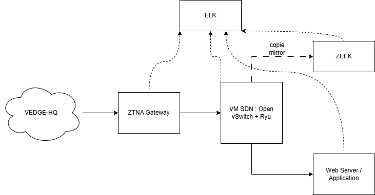
Dans cette architecture, le trafic en provenance du siège, à travers le vEdge-HQ, est d’abord acheminé vers la ZTNA Gateway. Cette passerelle représente le point d’entrée sécurisé vers les ressources internes. Elle applique les politiques de contrôle d’accès Zero Trust et vérifie que l’utilisateur ou le service est autorisé à accéder à l’application demandée.
Après cette étape, le trafic autorisé traverse la VM SDN, qui intègre Open vSwitch et Ryu Controller. Cette machine joue un rôle central dans le Datacenter, car elle permet de contrôler le trafic de manière programmable. Elle agit comme point de transit entre la passerelle ZTNA et le Web Server / Application protégé. Grâce à Open vSwitch, les flux peuvent être autorisés, surveillés ou bloqués dynamiquement selon les décisions prises par la couche SOAR ou par les règles du contrôleur SDN.
La topologie prévoit également l’intégration de Zeek, utilisé comme sonde d’analyse réseau. Une copie du trafic passant par la VM SDN peut être envoyée vers Zeek afin de produire des journaux détaillés sur les connexions, les échanges applicatifs et les comportements suspects. Cette analyse permet d’obtenir une meilleure visibilité sur les flux internes du Datacenter.
Les journaux et événements collectés sont ensuite envoyés vers la plateforme ELK, qui assure leur centralisation, leur indexation et leur visualisation. ELK permet de regrouper les informations issues de Zeek, de la passerelle ZTNA, des systèmes et des autres composants de l’architecture, afin de fournir une vision globale des événements de sécurité. Ces données peuvent ensuite être exploitées par la couche IA et par le SOAR pour déclencher des réponses automatiques.
Le Web Server / Application représente la ressource protégée du Datacenter. Il n’est pas directement exposé au réseau d’accès, mais accessible uniquement à travers la chaîne de sécurité mise en place : SD-WAN ZTNA Gateway SDN Application. Cette organisation réduit la surface d’attaque et renforce la protection des services internes.
Le fonctionnement global de la topologie peut être résumé comme suit :
center tikzpicture[ box/.style=draw, rounded corners, minimum width=5.5cm, minimum height=0.9cm, align=center, arrow/.style=-Latex, thick, node distance=0.7cm ]
[box] (vedge) vEdge-HQ; [box, below=of vedge] (ztna) ZTNA Gateway; [box, below=of ztna] (sdn) VM SDN\ vSwitch + Ryu Controller; [box, below=of sdn] (app) Web Server / Application;
[arrow] (vedge) -- (ztna); [arrow] (ztna) -- (sdn); [arrow] (sdn) -- (app);
tikzpicture figureSchéma explicatif : Topologie du Datacenter center
En parallèle, les flux observés sont envoyés vers la couche de supervision et d’analyse :
center tikzpicture[ box/.style=draw, rounded corners, minimum width=6cm, minimum height=0.9cm, align=center, arrow/.style=-Latex, thick, node distance=0.7cm ]
[box] (traffic) Trafic observé par la VM SDN; [box, below=of traffic] (zeek) Zeek; [box, below=of zeek] (elk) ELK; [box, below=of elk] (analysis) Analyse / Visualisation / Détection;
[arrow] (traffic) -- (zeek); [arrow] (zeek) -- (elk); [arrow] (elk) -- (analysis);
tikzpicture figureSchéma explicatif : Topologie du Datacenter center
Cette topologie montre que le Datacenter n’est pas seulement une zone d’hébergement applicatif, mais aussi une zone de contrôle et de sécurité. Elle combine l’accès Zero Trust, le réseau programmable, l’analyse du trafic et la centralisation des événements afin de protéger efficacement les ressources critiques de l’entreprise.
| Équipement | Interface | Adresse IP | Réseau | Rôle |
|---|---|---|---|---|
| vManage | eth0 | 10.0.0.10 | 10.0.0.0/24 | System-IP: 1.1.1.1 -- VPN 100 PFE-SDWAN |
| vManage | eth1 | -- | -- | Management |
| vSmart | eth0 / eth1 | 10.0.0.11 | 10.0.0.0/24 | System-IP: 1.1.1.2 -- VPN 100 PFE-SDWAN |
| vBond | ge0/0 / eth0 | 10.0.0.1 (VLAN1) | 10.0.0.0/24 | System-IP: 1.1.1.3 -- VPN 100 PFE-SDWAN |
| vBond | Gi0/1 | 10.0.0.11 | 10.0.0.0/24 | -- |
| vBond | Gi1/2 | -- | -- | -- |
| vBond | Gi2/0 | -- | -- | -- |
| Switch1 | Gi1/3 / Gi1/0 | -- | VLAN 1 | Switch L2 SD-WAN |
| CE | Gi0/0 | 200.0.0.1 | 200.0.0.0/30 | Vers Internet |
| CE | Gi0/1 | 10.0.0.2 | 10.0.0.0/24 | Sortie WAN |
| Équipement | Interface | Adresse IP | Réseau | Rôle |
|---|---|---|---|---|
| ISP | Gi0/0 | 100.0.0.1 | 100.0.0.0/30 | DHCP vers Internet |
| ISP | Gi0/1 | 100.0.0.2 | 100.0.0.0/30 | Vers CE |
| ISP | Gi0/2 | 100.0.0.5 | 100.0.0.4/30 | Vers HQ |
| ISP | Gi0/3 | 100.0.0.9 | 100.0.0.8/30 | Vers Branche 1 |
| ISP | Gi0/4 | 100.0.0.13 | 100.0.0.12/30 | Vers Branche 2 |
| ISP | Gi1/0 | 200.0.0.2 | 200.0.0.0/30 | Vers MPLS |
| Équipement | Interface | Adresse IP | Réseau | Rôle |
|---|---|---|---|---|
| PE1 | Gi0/6 | 200.0.0.2/30 | 200.0.0.0/30 | Vers ISP |
| PE1 | Gi0/0 | 200.0.1.1/30 | 200.0.1.0/30 | Vers P |
| PE1 | Gi0/1 | 200.0.1.5/30 | 200.0.1.4/30 | Vers PE2 |
| P | Gi0/1 | 200.0.1.2/30 | 200.0.1.0/30 | Vers PE1 |
| P | Gi0/2 | 200.0.1.10/30 | 200.0.1.8/30 | Vers PE3 |
| P | Gi0/3 | 200.0.1.13/30 | 200.0.1.12/30 | Interconnexion |
| PE2 | Gi0/0 | 200.0.0.5/30 | 200.0.0.4/30 | WAN |
| PE2 | Gi0/1 | 200.0.1.6/30 | 200.0.1.4/30 | Vers PE1 |
| PE2 | Gi0/2 | 200.0.0.9/30 | 200.0.0.8/30 | Vers PE3 |
| PE3 | Gi0/0 | 200.0.1.9/30 | 200.0.1.8/30 | Vers P |
| PE3 | Gi0/1 | 200.0.1.14/30 | 200.0.1.12/30 | Vers PE4 |
| PE4 | Gi0/0 | 200.0.0.13/30 | 200.0.0.12/30 | WAN |
| PE4 | Gi0/1 | 200.0.1.13/30 | 200.0.1.12/30 | Vers PE3 |
| VPN ID | Nom | Réseau LAN |
|---|---|---|
| 10 | USERS | 192.168.10.0/24 |
| 20 | ADMIN | 192.168.20.0/24 |
| 30 | MGMT | 192.168.30.0/24 |
| 40 | VOIP | 192.168.40.0/24 |
| 50 | DATACENTER | 192.168.193.0/24 |
| VPN ID | Nom | Réseau LAN |
|---|---|---|
| 10 | USERS | 192.168.110.0/24 |
| 30 | MGMT | 192.168.130.0/24 |
| 40 | VOIP | 192.168.140.0/24 |
| VPN ID | Nom | Réseau LAN |
|---|---|---|
| 10 | USERS | 192.168.210.0/24 |
| 30 | MGMT | 192.168.230.0/24 |
| 40 | VOIP | 192.168.240.0/24 |
| Équipement | System-IP | Site-ID | Organisation |
|---|---|---|---|
| vManage | 1.1.1.1 | 100 | PFE-SDWAN |
| vSmart | 1.1.1.2 | 100 | PFE-SDWAN |
| vBond | 1.1.1.3 | 100 | PFE-SDWAN |
| vEdge HQ | 10.1.1.1 | 10 | PFE-SDWAN |
| vEdge Branche 1 | 10.1.1.3 | 20 | PFE-SDWAN |
| vEdge Branche 2 | 10.1.1.2 | 30 | PFE-SDWAN |
| VM | Interface | Réseau VMware | Rôle | IP |
|---|---|---|---|---|
| SDN / OVS + Ryu | eth0 | NAT/Bridged | Management | DHCP |
| SDN / OVS + Ryu | eth1 | VMnet2 | vers ZTNA | Pas d’IP |
| SDN / OVS + Ryu | eth2 | VMnet3 | vers Web Server | Pas d’IP |
| SDN / OVS + Ryu | eth3 | VMnet4 | vers Zeek | Pas d’IP |
| ZTNA Gateway | eth0 | NAT/Bridged | Management | DHCP |
| ZTNA Gateway | eth1 | ZeroTier / SD-WAN | entrée SD-WAN | IP ZeroTier |
| ZTNA Gateway | eth2 | VMnet2 | vers SDN | 192.168.56.10/24 |
| Web Server | eth0 | NAT/Bridged + ZeroTier | Management | DHCP / ZeroTier |
| Web Server | eth1 | VMnet3 | serveur applicatif | 192.168.56.100/24 |
| Zeek Sensor | eth0 | NAT/Bridged + ZeroTier | Management / logs | DHCP / ZeroTier |
| Zeek Sensor | eth1 | VMnet4 | capture mirror | Pas d’IP |
| ELK Server | eth0 | NAT/Bridged + ZeroTier | réception logs | DHCP / ZeroTier |
Ce chapitre a présenté la conception de l’architecture proposée, organisée en sept couches complémentaires : SD-WAN, SDN, Zero Trust, Big Data, IA et SOAR. Cette architecture répond aux limites des approches traditionnelles en combinant connectivité intelligente, sécurité basée sur l’identité, supervision avancée et automatisation des réponses aux incidents.
Le chapitre suivant détaille la mise en œuvre de cette architecture dans un environnement virtualisé, ainsi que les configurations, les tests et les résultats obtenus.
Ce chapitre est consacré à la mise en œuvre technique de la solution proposée. Après avoir présenté l'architecture cible dans le chapitre précédent, nous décrivons dans cette partie les différentes étapes de réalisation du projet, les outils utilisés ainsi que l'environnement de travail mis en place.
La réalisation du projet est effectuée couche par couche afin de faciliter la configuration, la validation et l'intégration progressive des différents composants. Cette méthode permet de tester chaque partie séparément avant de passer à l'étape suivante. La mise en œuvre commence par la couche Cisco SD-WAN, qui assure l'interconnexion entre le siège, les branches et le datacenter. Ensuite, nous mettons en place la partie Datacenter, qui regroupe la passerelle ZTNA OpenZiti, la couche SDN programmable, la sonde Zeek, la plateforme ELK, le moteur de détection basé sur Spark, ainsi que la couche SOAR.
Afin d'assurer de bonnes performances, la maquette a été répartie sur deux machines physiques. Le premier PC est dédié à la partie Datacenter, tandis que le deuxième PC est réservé à l'architecture Cisco SD-WAN sous EVE-NG. Cette séparation permet de mieux gérer la consommation de ressources, car les images Cisco SD-WAN, les machines virtuelles Linux, les conteneurs Docker, ELK, Spark et Zeek nécessitent une quantité importante de mémoire RAM et de puissance de calcul.
Ce chapitre présente donc l'environnement matériel, les outils de virtualisation, les images Cisco utilisées, les serveurs Linux, les outils de monitoring, la plateforme ELK/Spark, le contrôleur SDN, le module SOAR ainsi que les outils de test utilisés pour valider le bon fonctionnement de la solution.
L'environnement de travail est composé de deux parties principales : un environnement matériel et un environnement logiciel. L'environnement matériel regroupe les deux machines physiques utilisées pour héberger les différentes parties du projet. L'environnement logiciel regroupe les plateformes de virtualisation, les images réseau, les systèmes Linux, les outils de sécurité et les outils de test.
Pour la réalisation de ce projet, deux PC ont été utilisés afin de répartir la charge entre la partie Cisco SD-WAN et la partie Datacenter.
Le premier PC est utilisé pour héberger les services du Datacenter, notamment les machines virtuelles liées à OpenZiti, Open vSwitch, Ryu, Zeek, ELK, Spark/IA, SOAR et le serveur Web protégé.
Le deuxième PC est consacré à l'architecture Cisco SD-WAN. Il héberge EVE-NG ainsi que les images Cisco Viptela 20.6.2 : vManage, vSmart, vBond et vEdge.
| Élément | Caractéristique |
|---|---|
| Marque | Lenovo |
| Modèle | IdeaPad Gaming 3 15IAH7 |
| Processeur | Intel Core i5-12650H jusqu'à 4.70 GHz, 24 Mo de cache |
| Mémoire RAM | 16 Go DDR4-3200 |
| Stockage | 512 Go SSD |
| Système d'exploitation hôte | Windows 11 |
| Rôle | Hébergement de la partie Datacenter |
| Élément | Caractéristique |
|---|---|
| Marque | MSI |
| Modèle | Thin GF63 12UDX |
| Processeur | 12th Gen Intel Core i7-12650H, 2.30 GHz |
| Mémoire RAM | 24 Go |
| Carte graphique | 6 Go |
| Stockage | 477 Go |
| Type du système | Système d'exploitation 64 bits, processeur x64 |
| Système d'exploitation hôte | Windows 11 |
| Rôle | Hébergement de l'architecture Cisco SD-WAN |
| Machine | Rôle principal | Composants hébergés |
|---|---|---|
| PC Datacenter | Services de sécurité, supervision et analyse | VMware Workstation, OpenZiti, Open vSwitch, Ryu, Web Server, Zeek, ELK, Spark/IA, SOAR |
| PC Cisco SD-WAN | Simulation de l'architecture WAN | EVE-NG, vManage, vSmart, vBond, vEdge, Internet, MPLS, HQ, Branches |
Cette répartition permet de réaliser la maquette dans de meilleures conditions. Le PC SD-WAN prend en charge les équipements Cisco virtualisés, tandis que le PC Datacenter héberge les services applicatifs, les outils de sécurité et les plateformes d'analyse.
L'environnement logiciel regroupe l'ensemble des outils utilisés pour construire, configurer, superviser et tester la solution. Il comprend la plateforme EVE-NG, VMware Workstation, les images Cisco SD-WAN, les serveurs Linux, Zeek, ELK, Python, le contrôleur SDN, le module SOAR et les outils de test.
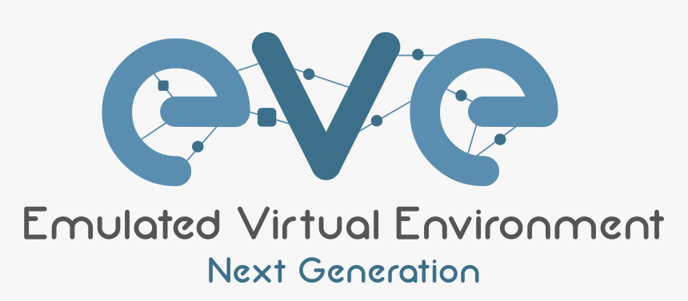
Dans ce projet, EVE-NG est utilisé pour la réalisation de l'architecture Cisco SD-WAN. Il permet de déployer les contrôleurs SD-WAN, les routeurs vEdge, les sites distants, le réseau Internet simulé et le backbone MPLS.
La topologie SD-WAN réalisée sous EVE-NG comprend :
La partie SD-WAN du projet repose sur les images Cisco Viptela version 20.6.2. Ces images sont intégrées dans EVE-NG afin de simuler les différents composants de l'architecture Cisco SD-WAN.
| Composant | Version | Rôle |
|---|---|---|
| vManage | Viptela 20.6.2 | Gestion centralisée de l'infrastructure SD-WAN |
| vSmart | Viptela 20.6.2 | Plan de contrôle et échange des routes/politiques |
| vBond | Viptela 20.6.2 | Orchestration et authentification initiale |
| vEdge | Viptela 20.6.2 | Routeur WAN Edge des sites |
Le vManage est utilisé pour la gestion centralisée, la supervision et l'application des configurations. Le vSmart assure le plan de contrôle et la distribution des routes via OMP. Le vBond intervient dans l'orchestration et l'intégration initiale des équipements. Les vEdge représentent les routeurs des sites et assurent la création des tunnels IPsec overlay.
Dans notre architecture, VMware Workstation héberge les machines suivantes :
| Machine virtuelle | Rôle |
|---|---|
| ZTNA Gateway | Passerelle OpenZiti pour le contrôle d'accès Zero Trust |
| VM SDN/SOAR | Open vSwitch + Ryu Controller + scripts SOAR |
| Web Server | Application protégée |
| Zeek Sensor | Analyse du trafic réseau |
| ELK Server | Centralisation, visualisation et traitement Big Data |
La VM ELK Server héberge également, sous forme de conteneurs Docker, les composants liés au traitement Big Data et à la détection intelligente, notamment Kafka, Zookeeper, Spark Master, Spark Workers et le moteur de détection basé sur Spark Structured Streaming. L'infrastructure de détection est orchestrée avec Docker Compose, ce qui permet de lancer les services dans des conteneurs isolés et reproductibles.
VMware permet aussi de créer plusieurs réseaux virtuels, comme NAT/Bridged, VMnet2, VMnet3 et VMnet4, afin de connecter les machines selon la topologie Datacenter.
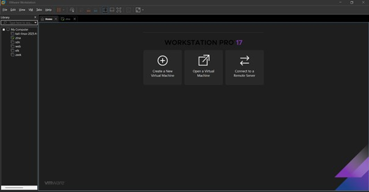
Les serveurs Linux constituent la base de la plupart des services open source utilisés dans ce projet. Ils sont utilisés pour installer et exécuter les outils de sécurité, d'analyse, de supervision et d'automatisation.
Linux est utilisé pour :
L'utilisation de Linux offre un environnement stable, flexible et compatible avec les outils de cybersécurité utilisés dans la solution.
Les principaux fichiers de logs générés par Zeek sont :
| Fichier log | Description |
|---|---|
conn.log | Informations sur les connexions réseau |
dns.log | Requêtes DNS |
http.log | Communications HTTP |
ssl.log | Informations TLS/SSL |
ssh.log | Sessions SSH |
notice.log | Événements suspects |
Ces logs sont ensuite envoyés vers ELK afin d'être indexés, visualisés et exploités par la couche d'analyse.
Dans la topologie SDN, Open vSwitch copie le trafic vers Zeek, ce qui permet d'analyser les communications sans interrompre le trafic applicatif.
Les principaux fichiers de logs générés par Suricata sont :
| Fichier log | Description |
|---|---|
eve.json | Journal principal contenant les alertes, flux et événements réseau |
Ces journaux sont ensuite transmis vers la plateforme ELK pour l’indexation, la visualisation et la corrélation des événements de sécurité. Suricata envoie également les logs vers le système SOAR afin de permettre le blocage automatique des adresses IP identifiées comme malveillantes ou attaquantes.
La pile ELK Stack est utilisée pour la centralisation, l'indexation et la visualisation des événements de sécurité. Elle est déployée dans la VM ELK Server, qui joue le rôle de plateforme principale d'analyse.
Elle est composée principalement de :
| Composant | Rôle |
|---|---|
| Elasticsearch | Stockage, indexation et recherche des alertes |
| Kibana | Visualisation des événements et tableaux de bord |
| Logstash / pipeline d'ingestion | Parsing et normalisation des logs selon le besoin |
| Kafka | Bus d'ingestion des événements |
| Zookeeper | Coordination de Kafka |
| Spark Master / Workers | Traitement temps réel et moteur IA intégré |
Le pipeline de traitement peut être représenté comme suit :
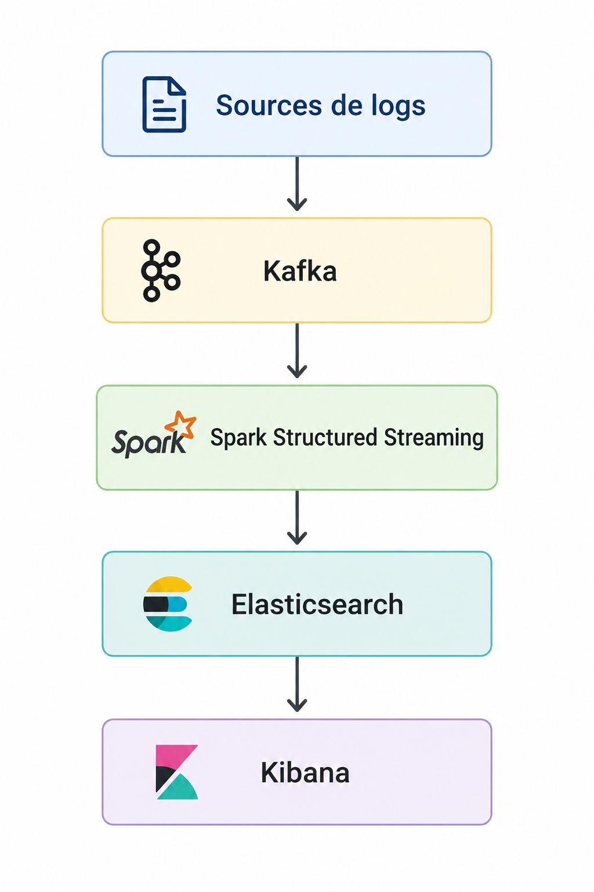
Les alertes générées par Spark sont indexées dans Elasticsearch, puis visualisées dans Kibana à travers des tableaux de bord. Le rapport de la plateforme de détection montre que Kibana permet de visualiser les types d'attaques, les adresses IP suspectes, les cartes géographiques et les alertes en temps réel.
Dans notre architecture, Apache Spark et le moteur IA ne sont pas déployés dans une machine virtuelle séparée. Ils sont intégrés sous forme de conteneurs Docker dans la VM ELK Server.
Spark Structured Streaming joue le rôle de moteur de traitement temps réel. Il consomme les événements depuis Kafka, applique les règles de détection, extrait les caractéristiques utiles et envoie les alertes vers Elasticsearch.
Le moteur de détection repose sur une approche hybride combinant :
| Méthode | Rôle |
|---|---|
| Détection par signatures | Identifier les attaques connues comme SQL Injection, XSS, brute-force ou Log4Shell |
| Threat Intelligence | Vérifier les IP ou User-Agent connus comme malveillants |
| Heuristiques IA | Détecter les anomalies comme l'entropie élevée, l'obfuscation ou l'exfiltration |
| Feature Engineering | Extraire des indicateurs comme la longueur du payload, l'entropie et le ratio de caractères spéciaux |
Les caractéristiques utilisées par Spark incluent notamment :
Le rapport de la plateforme précise que Spark Structured Streaming constitue le cœur du système de traitement, avec un driver et des executors capables de traiter les flux Kafka en continu et d'envoyer les alertes vers Elasticsearch.
Le langage Python est utilisé pour plusieurs tâches dans la réalisation du projet. Il intervient principalement dans l'automatisation, le traitement des données et l'intégration entre les différentes couches de la solution.
Python est utilisé pour :
Il est également utilisé dans les scripts permettant de bloquer dynamiquement une adresse IP ou d'automatiser certaines actions de réponse.
La couche SDN programmable repose sur Open vSwitch et Ryu Controller. Elle est déployée dans la VM SDN, située entre la passerelle ZTNA et le serveur Web protégé.
Open vSwitch joue le rôle de switch virtuel programmable. Il permet de faire transiter le trafic, de copier les flux vers Zeek et d'appliquer des règles OpenFlow. Ryu Controller agit comme contrôleur SDN. Il permet de piloter Open vSwitch, d'installer des règles de flux et de permettre le blocage dynamique d'une adresse IP suspecte.La position de la VM SDN est la suivante :
center tabularc ZTNA Gateway \\ \\ VM SDN : Open vSwitch + Ryu \\ \\ Web Server protégé \\ tabular center
Le trafic traversant Open vSwitch est également copié vers Zeek :
center tabularc Open vSwitch \\ \\ Copie du trafic \\ \\ Zeek \\ tabular center
La documentation SDN du projet précise que cette couche permet de contrôler les flux entre la passerelle ZTNA et le Web Server, de copier le trafic vers Zeek, de bloquer une IP suspecte et de permettre au SOAR d'agir automatiquement sur le réseau.
La couche SOAR (Security Orchestration, Automation and Response) automatise la réponse aux incidents de sécurité détectés par le pipeline. Dans notre architecture, le SOAR est déployé directement sur la VM ELK (192.168.193.210), en dehors des conteneurs Docker, afin de disposer d'un accès natif aux commandes système ipset et iptables ainsi qu'aux connexions SSH vers les équipements distants.
Il est implémenté sous la forme d'une API REST FastAPI exposée sur le port 9000, accompagnée d'une interface web de supervision. L'état de la plateforme (incidents, IP bloquées, assets, actions) est persisté dans une base de données SQLite locale.
Déclencheurs de blocage automatique.
Le SOAR dispose de deux mécanismes de déclenchement complémentaires :
Suricata de type alert ou anomaly à l'endpoint /api/suricata/direct du SOAR via HTTP POST. Ce chemin court contourne Kafka et Spark afin de minimiser le délai de réponse aux alertes critiques.
security_alerts et security_events_all. Tout événement satisfaisant l'une des conditions suivantes déclenche un blocage automatique si le mode Auto-Block est activé :
risk_score 85 et verdict \malicious, suspicious\ ;severity = critical et verdict = malicious ;suricata_event_type \alert, anomaly\.| Action | Description |
|---|---|
| Blocage local (VM ELK) | Ajout de l'IP dans l'ensemble ipset soar_blocklist ;
règle |
| Blocage distant Linux / ZTNA | Connexion SSH vers chaque asset enregistré ; création de l'ensemble
ipset et installation des règles iptables INPUT et
FORWARD DROP pour bloquer le trafic entrant et traversant. |
| Blocage vEdge Cisco SD-WAN | Connexion SSH avec PTY vers l'équipement vEdge ; envoi de commandes CLI
en mode DROP dans l'ACL SOAR_BLOCK_ACL avec un numéro de
séquence stable dérivé de l'adresse IP. |
| Gestion de l'allowlist | Les adresses de l'infrastructure interne (VM ELK, Kafka, Spark,
Elasticsearch, passerelles) sont protégées contre tout blocage accidentel. |
| Déblocage | Suppression de l'IP de l'ensemble ipset local et distant ;
retrait de la séquence ACL sur les vEdge via CLI SSH. |
| Journalisation | Chaque action (blocage, déblocage, échec SSH) est enregistrée dans la
table |
| Notification / Interface web | Tableau de bord FastAPI (http://192.168.193.210:9000) affichant
en temps réel les incidents, les IP bloquées, les assets et l'historique des actions ; toggle Auto-Block activable sans redémarrage. |
Dans ce projet, ZeroTier a été utilisé comme solution de connectivité virtuelle afin de relier les machines virtuelles du datacenter avec l'environnement EVE-NG. Cette solution a permis d'interconnecter deux environnements déployés sur deux PC différents, tout en les plaçant dans un même réseau logique. Grâce à ZeroTier, la communication entre les VM, les équipements réseau, la plateforme ELK, la ZTNA Gateway et les autres composants du projet devient plus simple, plus stable et plus facile à administrer. Cette approche a donc permis de simplifier le travail de configuration, de test et d'intégration entre les deux environnements.
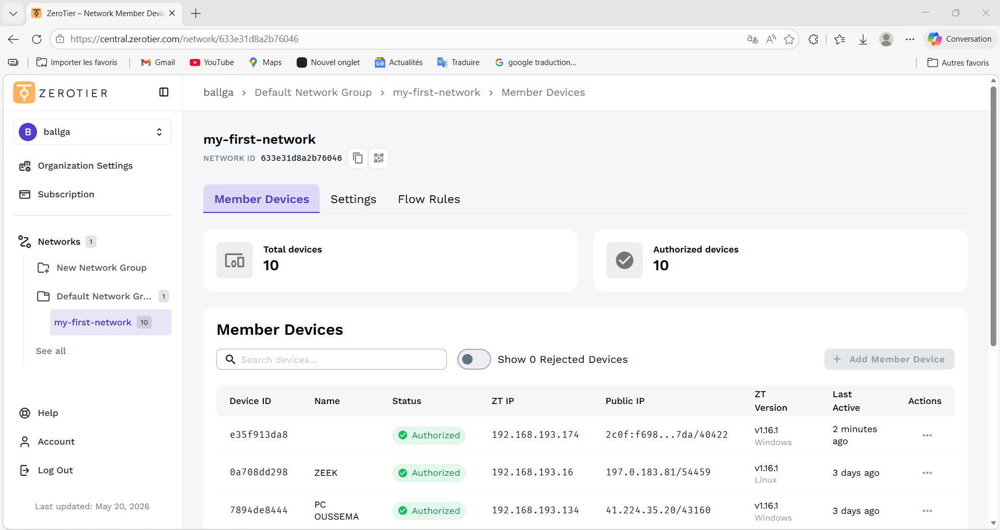
La configuration détaillée de ZeroTier est présentée dans l'annexe.
Cette section présente la mise en place de la couche Cisco SD-WAN dans l'environnement EVE-NG. Cette couche constitue la base de connectivité de la solution globale, car elle assure l'interconnexion entre le siège HQ, les sites distants Branche 1 et Branche 2, ainsi que l'accès au Datacenter à travers un overlay sécurisé.
La réalisation de cette partie repose sur les images Cisco Viptela 20.6.2, comprenant les contrôleurs vManage, vSmart, vBond et les routeurs vEdge. La topologie intègre également deux réseaux de transport : un réseau Internet et un réseau MPLS, permettant de simuler une architecture WAN multi-liens.
Pour construire notre laboratoire Cisco SD-WAN dans EVE-NG, il est nécessaire d'importer les images des équipements virtuels utilisés dans la topologie. Ces images correspondent aux composants Cisco Viptela : vManage, vBond, vSmart et vEdge.
Les images sont d'abord transférées vers le serveur EVE-NG à l'aide d'un outil comme WinSCP ou FileZilla. Elles doivent être placées dans le répertoire suivant :
/opt/unetlab/addons/qemu/
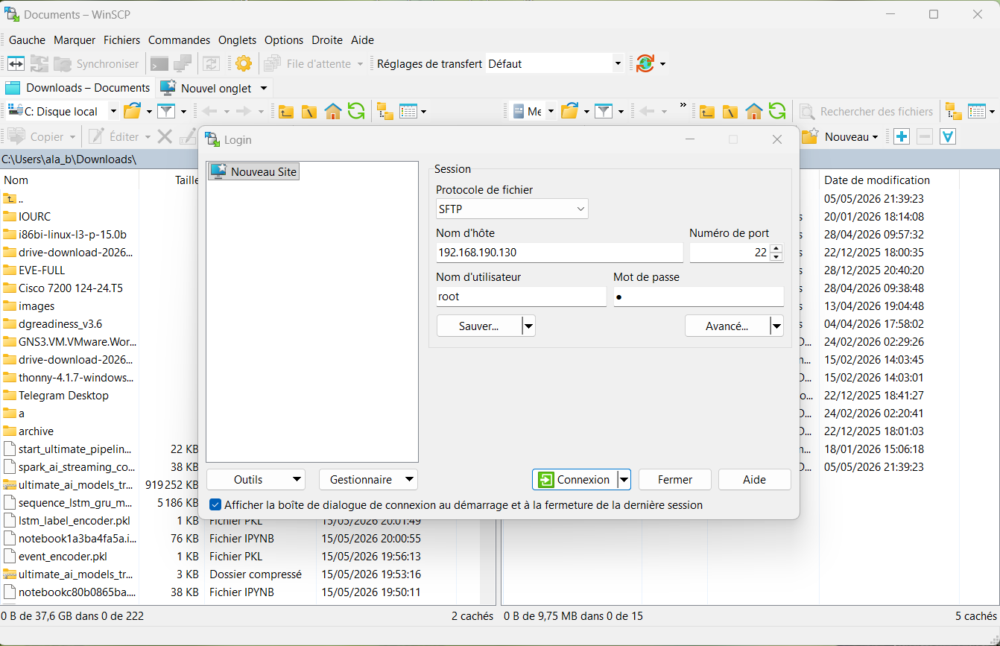
Pour chaque équipement, un dossier spécifique est créé selon le nom attendu par EVE-NG. Dans notre cas, pour la version 20.6.2, les dossiers utilisés sont :
/opt/unetlab/addons/qemu/vtmgmt-20.6.2
/opt/unetlab/addons/qemu/vtbond-20.6.2 /opt/unetlab/addons/qemu/vtsmart-20.6.2 /opt/unetlab/addons/qemu/vtedge-20.6.2
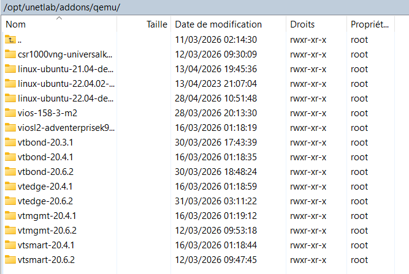
Après le transfert, chaque image doit être renommée en :
virtioa.qcow2
Exemple pour l'image vEdge :
mkdir /opt/unetlab/addons/qemu/vtedge-20.6.2
cd /opt/unetlab/addons/qemu/vtedge-20.6.2 mv viptela-edge-20.6.2-genericx86-64.qcow2 virtioa.qcow2
Une fois toutes les images copiées et renommées, il faut corriger les permissions avec la commande :
/opt/unetlab/wrappers/unl_wrapper -a fixpermissions
Enfin, les images peuvent être vérifiées depuis l'interface web d'EVE-NG en créant un nouveau laboratoire et en ajoutant les nœuds Cisco Viptela. Si les images ont été correctement importées, les équipements vManage, vBond, vSmart et vEdge apparaissent dans la liste des nœuds disponibles.
Cette étape permet donc de préparer l'environnement de simulation nécessaire à la mise en place de l'architecture Cisco SD-WAN utilisée dans notre projet.
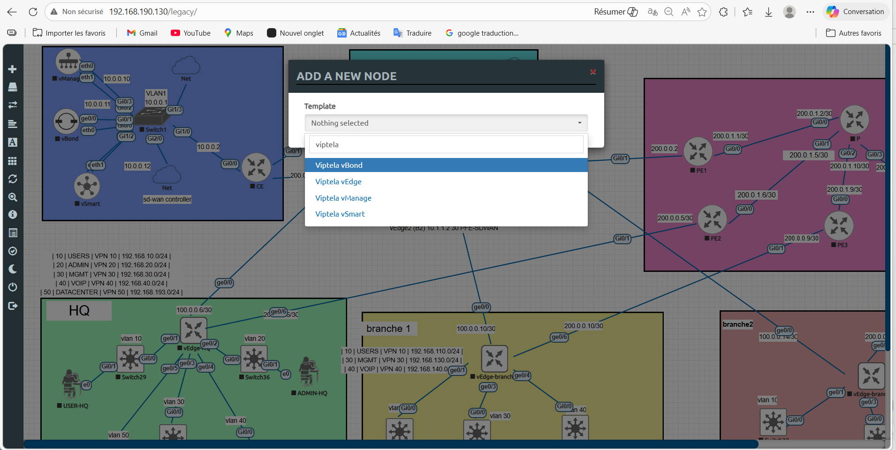
L'architecture mise en place est organisée autour de trois parties principales : les contrôleurs SD-WAN, les réseaux de transport et les sites distants. La partie contrôle regroupe vManage, vBond et vSmart, qui assurent la gestion, l'authentification et le contrôle des équipements SD-WAN.
Les sites HQ, Branche 1 et Branche 2 sont interconnectés à travers deux types de liaisons WAN : Internet et MPLS. Chaque site possède un routeur vEdge relié aux deux réseaux de transport afin d'assurer la redondance et le choix dynamique du chemin.
Au niveau local, les réseaux sont segmentés en plusieurs VPN, notamment Admin, Users, Management, VoIP et Datacenter pour le site principal et Users, Management et VoIP pour les branches . Cette organisation permet de séparer les différents types de trafic, d'assurer une meilleure sécurité et de faciliter l'application des politiques SD-WAN entre les sites.
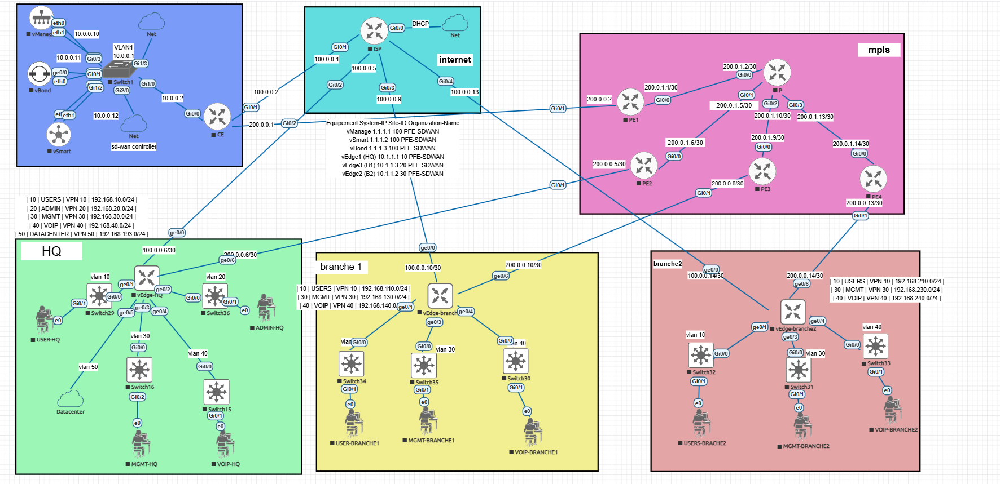
Dans cette partie, nous présentons les étapes de configuration du backbone MPLS utilisé comme réseau de transport privé dans notre architecture SD-WAN. Le réseau MPLS est composé d'un routeur cœur P et de quatre routeurs PE : PE1, PE2, PE3 et PE4. Le routeur P assure le transit MPLS entre les différents PE, tandis que les routeurs PE assurent la connexion avec les équipements clients, à savoir le CE des contrôleurs SD-WAN, le vEdge du site HQ, le vEdge de la branche 1 et le vEdge de la branche 2.
L'objectif de cette configuration est de fournir une connectivité privée entre les différents sites à travers le backbone MPLS. Cette connectivité sera ensuite utilisée par les routeurs vEdge dans le VPN 0 comme transport WAN de type MPLS.
Nous avons utilisé le protocole OSPF comme protocole de routage interne dans le backbone MPLS. OSPF permet aux routeurs P et PE d'apprendre les adresses loopback ainsi que les réseaux directement connectés dans le cœur MPLS.
Toutes les interfaces du backbone sont placées dans l'area 0. Les interfaces de bouclage sont également annoncées dans OSPF afin de permettre l'établissement des sessions MP-BGP entre les routeurs PE à partir de leurs loopbacks.
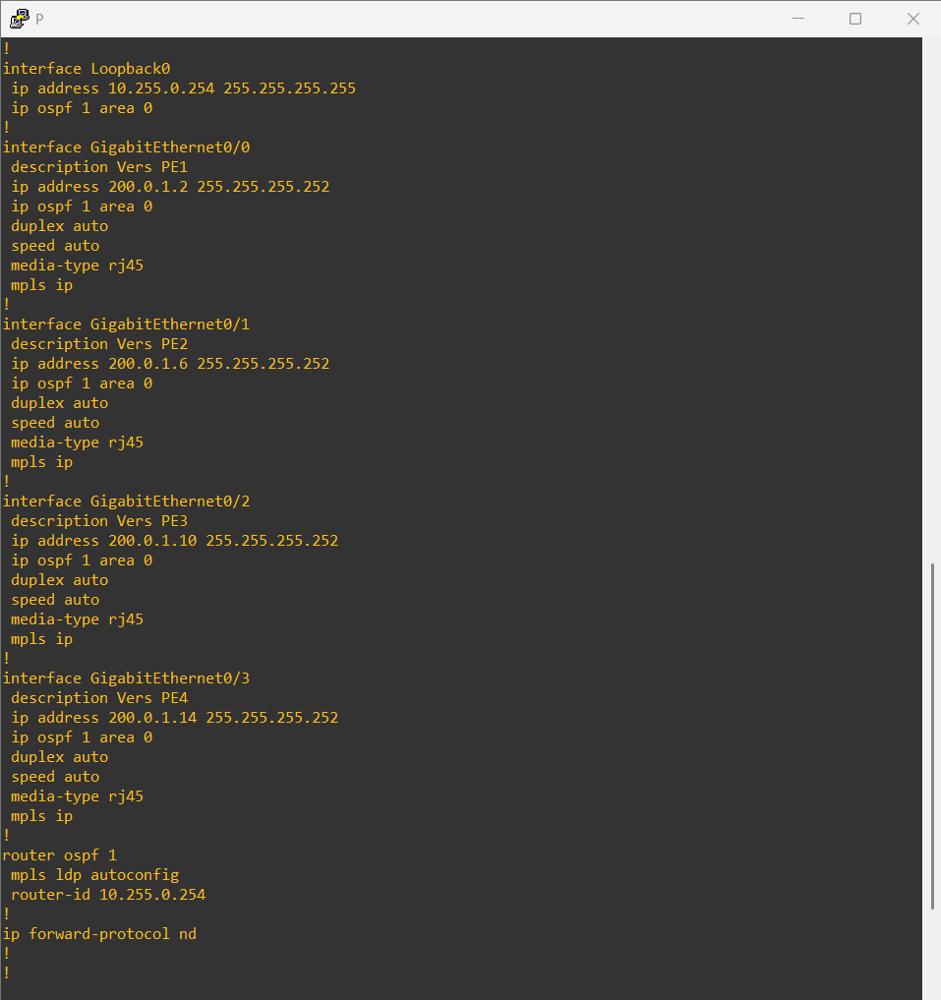
Dans cette configuration, la commande ip ospf 1 area 0 active OSPF directement sur les interfaces du backbone. Le routeur P utilise l'adresse 10.255.0.254 comme Router-ID OSPF.
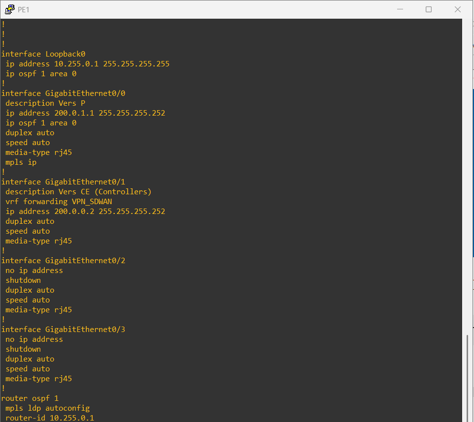
La même logique est appliquée sur PE2, PE3 et PE4, avec leurs propres adresses loopback et leurs adresses d'interfaces vers le routeur P.
Après la configuration du routage OSPF, nous avons activé le protocole MPLS dans le backbone. MPLS permet d'acheminer les paquets à l'aide de labels au lieu d'utiliser uniquement la table de routage IP classique.
Le protocole utilisé pour la distribution des labels est LDP. Dans notre configuration, la commande suivante est utilisée sous le processus OSPF :
mpls ldp autoconfig
Cette commande permet d'activer automatiquement LDP sur les interfaces qui participent à OSPF et sur lesquelles MPLS est activé.
Sur chaque interface du backbone, la commande suivante est appliquée :
mpls ip
Exemple sur le routeur P :
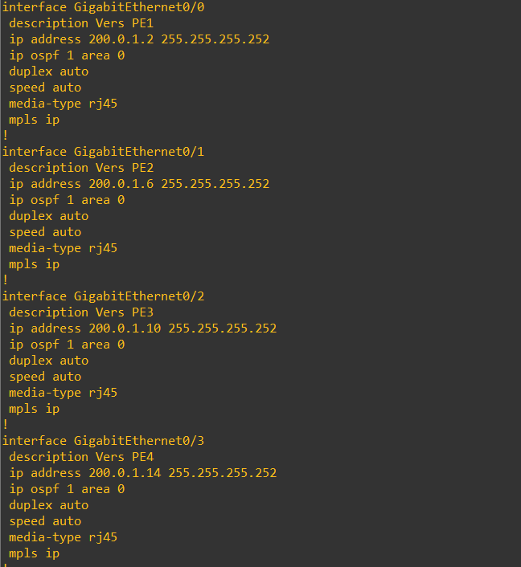
Exemple sur PE2 :
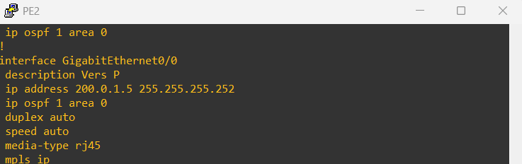
Les interfaces connectées aux équipements clients, comme les vEdge ou le CE, ne sont pas configurées avec mpls ip, car elles ne font pas partie du cœur MPLS. Elles sont uniquement placées dans la VRF client.
Pour transporter le trafic client à travers le backbone MPLS, nous avons créé une instance VRF appelée VPN_SDWAN sur chaque routeur PE. Cette VRF permet de séparer le trafic SD-WAN de la table de routage globale du backbone MPLS.
La configuration de la VRF est la suivante :
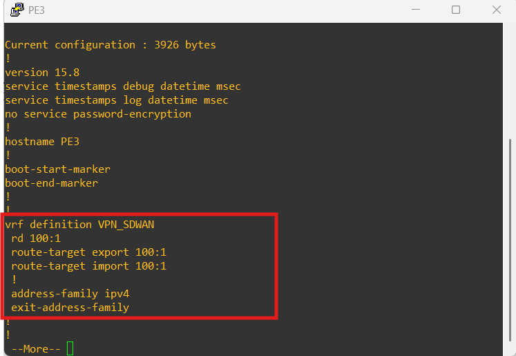
Le Route Distinguisher, ou RD, permet d'identifier les routes VPN de manière unique dans le backbone MPLS. Les Route Targets, ou RT, sont utilisés pour contrôler l'importation et l'exportation des routes entre les différents PE.
Dans notre maquette, tous les PE utilisent le même route-target 100:1, ce qui permet aux différents sites connectés à la VRF VPN_SDWAN d'échanger leurs routes à travers le backbone MPLS.
Après la création de la VRF, nous avons associé les interfaces connectées aux équipements clients à la VRF VPN_SDWAN. Cette étape permet de placer le trafic client dans une table de routage séparée.
Interface client sur PE1
PE1 est connecté au CE du bloc des contrôleurs SD-WAN. L'interface GigabitEthernet0/1 est donc placée dans la VRF VPN_SDWAN.

Interface client sur PE2
PE2 est connecté au vEdge du site HQ.
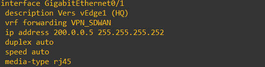
Interface client sur PE3
PE3 est connecté au vEdge de la branche 1.
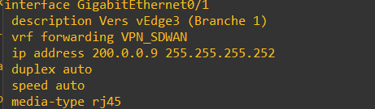
Interface client sur PE4
PE4 est connecté au vEdge de la branche 2.
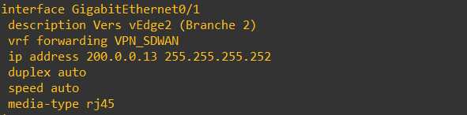
Il est important de noter que les interfaces côté client ne participent pas au routage OSPF du backbone MPLS. Elles appartiennent uniquement à la VRF VPN_SDWAN.
Pour permettre l'échange des routes VPN entre les différents PE, nous avons configuré le protocole MP-BGP. MP-BGP est utilisé pour transporter les routes VPNv4, c'est-à-dire les routes IPv4 associées à une VRF.
Les sessions BGP sont établies entre les adresses loopback des PE dans l'AS 65000. Chaque PE établit donc des voisinages BGP avec les autres PE.
La figure suivante montre la configuration MP-BGP VPNv4 sur le routeur PE1. On y observe les voisins BGP établis avec les autres routeurs PE à travers leurs adresses Loopback0. La famille d'adresses vpnv4 est activée avec l'option send-community extended, ce qui permet l'échange des routes VPN et des route-targets. PE1 redistribue également les routes connectées et statiques dans la VRF VPN_SDWAN.
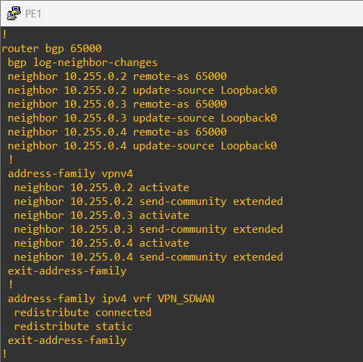
Dans cette configuration, la commande address-family vpnv4 permet d'activer l'échange des routes VPNv4 entre les PE. La commande send-community extended est indispensable pour transporter les route-targets associés aux routes VPN.
Sur PE1, nous avons redistribué les routes connectées et statiques dans la VRF VPN_SDWAN, car PE1 doit annoncer le réseau des contrôleurs SD-WAN situé derrière le CE.
La figure suivante présente la configuration MP-BGP VPNv4 sur le routeur PE2. PE2 établit des voisinages BGP avec PE1, PE3 et PE4 via leurs adresses loopback. Dans la VRF VPN_SDWAN, seules les routes connectées sont redistribuées, car PE2 est directement connecté au routeur vEdge-HQ.
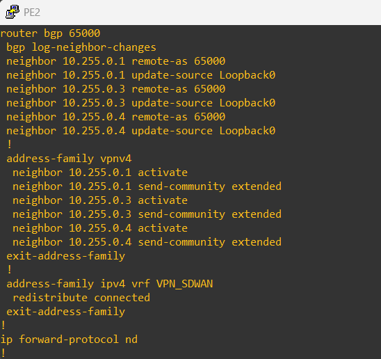
PE2 annonce uniquement ses routes connectées dans la VRF, notamment le lien vers le vEdge du site HQ.
Configuration MP-BGP sur PE3 et PE4
La configuration de PE3 et PE4 suit la même logique que celle de PE2. Chaque PE établit des sessions MP-BGP avec les autres PE via leurs adresses loopback et annonce les routes connectées de sa VRF.
Pour PE3 :
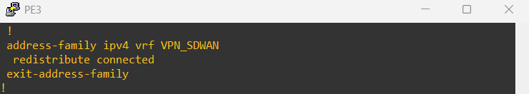
Pour PE4 :
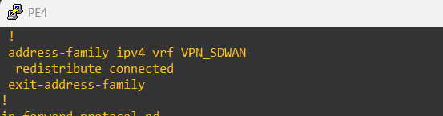
Dans notre architecture, les contrôleurs SD-WAN se trouvent derrière un routeur CE connecté à PE1. Le réseau des contrôleurs est :
center 10.0.0.0/24 center
Sur PE1, nous avons donc ajouté une route statique dans la VRF VPN_SDWAN pour atteindre ce réseau via le CE.
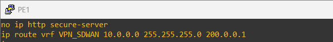
Cette route permet aux autres sites connectés au MPLS d'atteindre les contrôleurs SD-WAN, notamment vManage, vBond et vSmart.
La route statique est ensuite redistribuée dans MP-BGP grâce à la commande suivante :
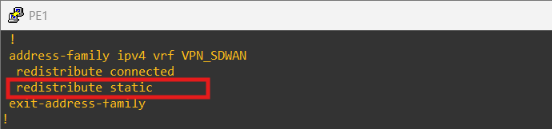
Ainsi, les autres PE peuvent apprendre le réseau 10.0.0.0/24 via MP-BGP VPNv4.
La redistribution permet d'injecter les routes de la VRF VPN_SDWAN dans MP-BGP afin qu'elles soient transportées vers les autres PE.
Sur PE1, nous avons redistribué les routes connectées et statiques :
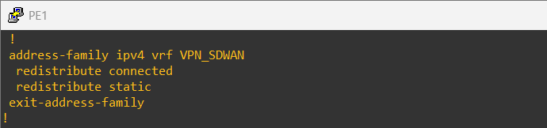
Cette configuration est nécessaire car PE1 possède :
10.0.0.0/24.Sur PE2, PE3 et PE4, seules les routes connectées sont redistribuées :
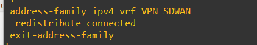
Cela permet d'annoncer les réseaux connectés aux vEdge :
200.0.0.4/30 ;200.0.0.8/30 ;200.0.0.12/30.Dans cette architecture, le backbone MPLS ne transporte pas directement les VPN de service comme VPN 10, VPN 30 ou VPN 40. Ces VPN sont transportés dans l'overlay Cisco SD-WAN.
Le rôle du backbone MPLS est de fournir une connectivité underlay entre les interfaces MPLS des vEdge. Ces interfaces sont configurées dans le VPN 0 des routeurs vEdge.
Par exemple, sur le vEdge-HQ, l'interface MPLS utilise l'adresse :
center 200.0.0.6/30 center
et son next-hop MPLS est :
center 200.0.0.5 center
La route par défaut dans le VPN 0 du vEdge-HQ est donc :
vpn 0
ip route 0.0.0.0/0 200.0.0.5
Pour la branche 1 :
vpn 0
ip route 0.0.0.0/0 200.0.0.9
Pour la branche 2 :
vpn 0
ip route 0.0.0.0/0 200.0.0.13
Grâce à cette configuration, chaque vEdge peut joindre les contrôleurs SD-WAN et les autres TLOCs à travers le transport MPLS.
Dans cette partie, nous présentons la configuration du routeur ISP, qui joue le rôle du réseau Internet dans notre architecture. Ce routeur permet d'assurer la connectivité entre les contrôleurs SD-WAN, les routeurs vEdge et le réseau Internet simulé. Contrairement au backbone MPLS, le routeur ISP ne transporte pas les VPN de service tels que Users, Management ou VoIP. Son rôle principal est de fournir une connectivité underlay Internet utilisée par les interfaces VPN 0 des équipements SD-WAN.
Le routeur ISP représente le fournisseur d'accès Internet. Il est connecté d'un côté au réseau Internet simulé, et de l'autre côté aux équipements de l'architecture SD-WAN.
Cette configuration permet aux vEdge d'utiliser Internet comme deuxième transport WAN, en parallèle avec le transport MPLS.
Chaque interface du routeur ISP est configurée avec une adresse IP correspondant au plan d'adressage de la topologie. L'interface GigabitEthernet0/0 est connectée vers le réseau Internet simulé, tandis que les autres interfaces sont connectées aux équipements SD-WAN.
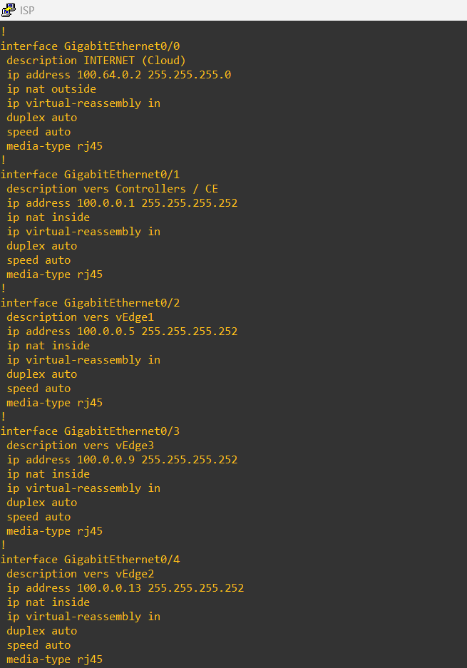
L'interface GigabitEthernet0/0 est définie comme interface NAT outside, car elle représente la sortie vers Internet. Les interfaces connectées aux équipements internes sont configurées en NAT inside.
Afin de permettre aux équipements connectés au réseau Internet interne 100.0.0.0/24 de sortir vers le réseau Cloud 100.64.0.0/24, nous avons configuré le mécanisme NAT Overload.
La configuration utilisée est la suivante :
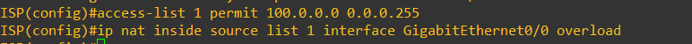
L'access-list autorise les adresses du réseau 100.0.0.0/24 à être traduites. La commande ip nat inside source list 1 interface GigabitEthernet0/0 overload permet de traduire ces adresses en utilisant l'adresse IP de l'interface de sortie GigabitEthernet0/0, c'est-à-dire 100.64.0.2.
Cette configuration permet aux équipements suivants de sortir vers le réseau Internet simulé :
center tabularll CE Controllers & 100.0.0.2 \\ vEdge-HQ & 100.0.0.6 \\ vEdge-Branch1 & 100.0.0.10 \\ vEdge-Branch2 & 100.0.0.14 \\ tabular center
Le routeur ISP utilise des routes statiques pour joindre les réseaux nécessaires à l'architecture. Une route par défaut est configurée vers le réseau Cloud, et une route spécifique est ajoutée vers le réseau des contrôleurs SD-WAN.
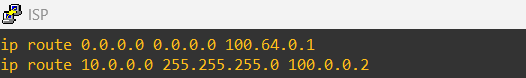
La première route permet au routeur ISP d'envoyer le trafic inconnu vers le réseau Internet simulé :
ip route 0.0.0.0 0.0.0.0 100.64.0.1
La deuxième route permet au routeur ISP de joindre le réseau des contrôleurs SD-WAN situé derrière le CE :
ip route 10.0.0.0 255.255.255.0 100.0.0.2
Dans notre architecture, les contrôleurs SD-WAN utilisent les adresses suivantes :
center tabularll vManage & 10.0.0.10 \\ vBond & 10.0.0.11 \\ vSmart & 10.0.0.12 \\ tabular center
Cette route est donc indispensable pour permettre aux routeurs vEdge de joindre les contrôleurs via le transport Internet.
Dans Cisco SD-WAN, les interfaces WAN des routeurs vEdge sont configurées dans le VPN 0. Le routeur ISP fournit donc la passerelle Internet pour les interfaces VPN 0 des différents vEdge.
Par exemple, pour le site HQ, le vEdge utilise l'adresse Internet suivante :
center tabularll vEdge-HQ & 100.0.0.6/30 \\ Gateway & 100.0.0.5 \\ tabular center
La route par défaut dans le VPN 0 du vEdge-HQ est donc :
vpn 0
ip route 0.0.0.0/0 100.0.0.5
Pour la branche 1 :
vpn 0
ip route 0.0.0.0/0 100.0.0.9
Pour la branche 2 :
vpn 0
ip route 0.0.0.0/0 100.0.0.13
Grâce à cette configuration, les routeurs vEdge peuvent joindre les contrôleurs SD-WAN via Internet et établir leurs connexions de contrôle avec vBond, vSmart et vManage.
Le routeur CE (Customer Edge) assure l'interconnexion entre le réseau des contrôleurs SD-WAN (10.0.0.0/24) et les deux réseaux de transport : Internet via le routeur ISP et le backbone MPLS via PE1.
La figure suivante présente la configuration des trois interfaces actives du routeur CE :
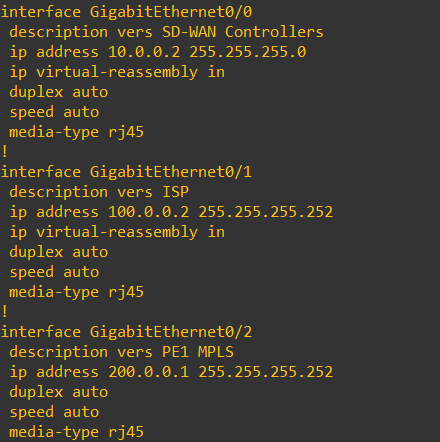
Le routeur CE utilise trois routes statiques. La route par défaut redirige le trafic vers le routeur ISP, permettant aux contrôleurs SD-WAN de joindre les vEdge via Internet. La route vers 200.0.0.0/24 assure la connectivité vers le backbone MPLS via PE1.
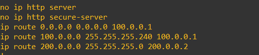
Grâce à cette configuration, les contrôleurs vManage, vBond et vSmart sont joignables depuis les routeurs vEdge via les deux transports WAN simultanément.
Dans cette partie, nous présentons la configuration des contrôleurs Cisco SD-WAN utilisés dans notre architecture. Les contrôleurs constituent la base du fonctionnement de la solution SD-WAN, car ils assurent la gestion centralisée, l'authentification des équipements, le contrôle de l'overlay et l'échange des routes entre les différents sites.
Notre architecture contient trois contrôleurs principaux : vManage, vBond et vSmart. Le contrôleur vManage permet l'administration centralisée, la supervision, la création des templates et l'application des politiques. Le contrôleur vBond joue le rôle d'orchestrateur et constitue le premier point de contact des routeurs vEdge lorsqu'ils rejoignent le réseau. Le contrôleur vSmart, quant à lui, assure le plan de contrôle SD-WAN grâce au protocole OMP, qui permet l'échange des routes, des TLOCs et des politiques.
Le réseau utilisé pour les contrôleurs est 10.0.0.0/24. Ce réseau est connecté au reste de l'architecture à travers le routeur CE, ce qui permet aux routeurs vEdge de joindre les contrôleurs via les transports Internet et MPLS.
Il est important de distinguer l'adresse IP de l'interface et le System-IP. L'adresse IP est utilisée pour la connectivité réseau, tandis que le System-IP est un identifiant logique unique utilisé dans l'overlay SD-WAN.
Les paramètres communs configurés sur tous les contrôleurs sont les suivants :
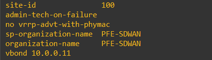
Le nom de l'organisation doit être exactement identique sur tous les équipements SD-WAN. Une différence dans ce paramètre peut empêcher l'établissement des connexions de contrôle entre les équipements.
La configuration de base du vManage est la suivante :
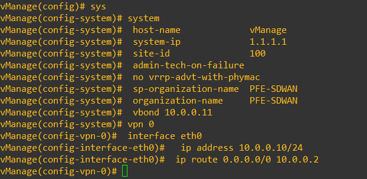
Le vManage utilise le VPN 0 pour joindre les autres contrôleurs et communiquer avec les routeurs vEdge. La route par défaut pointe vers la passerelle 10.0.0.1, qui permet d'atteindre les autres réseaux de transport.
La configuration de base du vBond est la suivante :
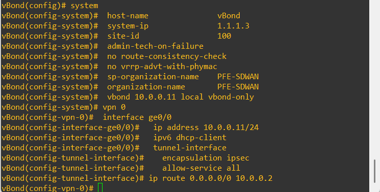
La commande suivante est spécifique au vBond :
vbond 10.0.0.11 local
Elle indique que cet équipement est lui-même le vBond de l'architecture. Le vBond utilise une interface tunnel dans le VPN 0, car il doit participer aux connexions de contrôle SD-WAN et permettre l'authentification initiale des routeurs vEdge.
La configuration de base du vSmart est la suivante :
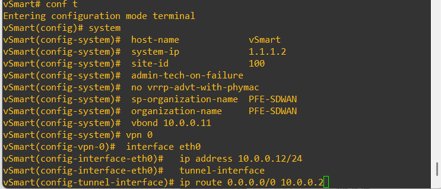
Le vSmart utilise également une interface tunnel dans le VPN 0 afin d'établir les connexions de contrôle avec les routeurs vEdge. Après l'établissement des connexions, le vSmart échange les routes et les TLOCs à travers le protocole OMP.
Après la configuration initiale des contrôleurs en ligne de commande, il faut vérifier et configurer le nom de l'organisation depuis l'interface graphique de vManage.
La figure suivante montre l'accès au menu Administration puis Settings dans l'interface graphique de Cisco vManage. Ce menu permet de vérifier et modifier les paramètres globaux de la plateforme, notamment le nom de l'organisation et l'adresse du vBond.
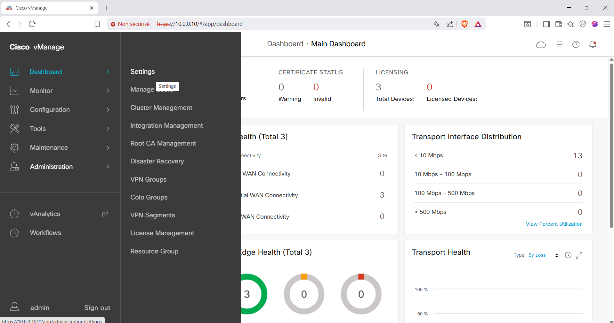
La figure suivante présente la page Administration Settings de vManage. On y retrouve le nom de l'organisation PFE-SDWAN, ainsi que l'adresse du contrôleur vBond. Cette vérification est importante, car le nom de l'organisation doit être identique sur tous les équipements Cisco SD-WAN.
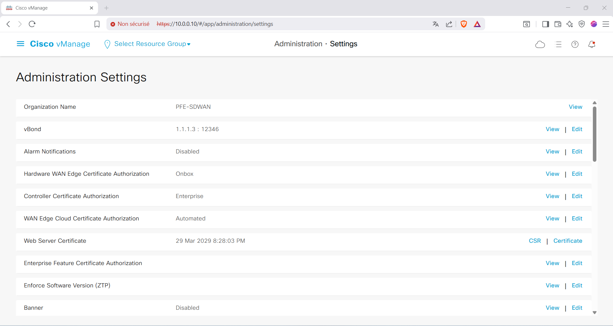
center PFE-SDWAN center
Ensuite, les contrôleurs doivent être ajoutés dans vManage. Le chemin utilisé est :
Configuration > Devices > Controllers
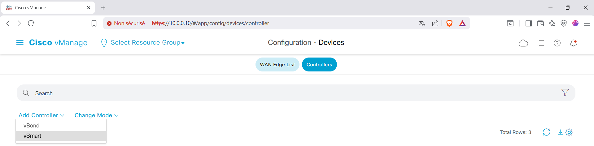
Les contrôleurs ajoutés sont :
vBond : 10.0.0.11
vSmart : 10.0.0.12
La figure suivante présente l'ajout du contrôleur vSmart. L'adresse de management utilisée est 10.0.0.12, avec le compte administrateur. Le protocole utilisé est DTLS, et l'option de génération du CSR est activée afin de préparer la configuration des certificats.
Après l'ajout du contrôleur, celui-ci apparaît dans la liste des contrôleurs de vManage. La figure suivante montre que le contrôleur vSmart a été ajouté, mais que son certificat n'est pas encore installé. Cette étape sera complétée lors de la configuration des certificats.
Dans une architecture Cisco SD-WAN, les certificats jouent un rôle essentiel dans l'authentification des différents composants de l'overlay. Chaque contrôleur, à savoir vManage, vBond et vSmart, doit disposer d'un certificat valide afin d'établir des connexions de contrôle sécurisées et de participer correctement au fonctionnement de la solution SD-WAN.
Dans le cadre de ce projet, le mode Enterprise Root Certificate a été retenu. Ce choix consiste à créer une autorité de certification interne, appelée Enterprise CA, puis à l'utiliser pour signer les certificats des contrôleurs SD-WAN. Cette approche est particulièrement adaptée à un environnement de laboratoire ou de maquette PFE, car elle permet de maîtriser entièrement la génération et la gestion des certificats.
La création de l'autorité de certification a été réalisée depuis le shell Linux du contrôleur vManage. Pour accéder à ce shell, la commande suivante a été exécutée :
vshell
Une fois dans l'environnement Linux, la première étape a consisté à générer la clé privée de la Root CA. Cette clé représente l'élément confidentiel principal de l'autorité de certification, car elle permet de signer les certificats des contrôleurs.
Cette commande permet de générer une clé privée RSA de 4096 bits, enregistrée dans le fichier suivant :
center rootCA.key center
Ce fichier doit être conservé de manière sécurisée et ne doit jamais être partagé ni importé dans l'interface vManage.
Après la génération de la clé privée, le certificat racine de l'autorité de certification a été créé à l'aide de la commande suivante :
Cette commande génère un certificat auto-signé valide pendant 3650 jours. Le certificat obtenu est stocké dans le fichier :
center rootCA.pem center
Le champ O=PFE-SDWAN représente le nom de l'organisation. Il est important que ce nom corresponde au paramètre organization-name configuré sur les contrôleurs Cisco SD-WAN. Une incohérence à ce niveau peut empêcher l'établissement des connexions de contrôle entre les différents composants.
Les principaux paramètres utilisés dans le certificat sont présentés dans le tableau suivant :
| Champ | Description | Valeur utilisée |
|---|---|---|
C | Pays | TN |
ST | Région ou État | Nabeul |
L | Localité | Soliman |
O | Organisation | PFE-SDWAN |
OU | Unité organisationnelle | PFE-SDWAN |
CN | Nom commun du certificat | PFE-SDWAN-ROOT-CA |
Après la création du certificat racine, son contenu a été affiché avec la commande suivante :
cat rootCA.pem
L'intégralité de ce contenu a ensuite été copiée dans l'interface graphique de vManage, au niveau du chemin suivant :
Administration > Settings > Controller Certificate Authorization
Dans cette section, l'option Enterprise Root Certificate a été sélectionnée. Le contenu du fichier rootCA.pem a ensuite été collé dans le champ Certificate, puis la configuration a été sauvegardée.
Cette étape permet à vManage de reconnaître la Root CA interne comme autorité de confiance pour la validation des certificats des contrôleurs SD-WAN.
Après l'importation du certificat Root CA, des demandes de signature de certificats, appelées CSR ou Certificate Signing Request, ont été générées pour les trois contrôleurs principaux :
Cette opération a été réalisée depuis l'interface vManage via le chemin suivant :
Configuration > Certificates > Controllers
Pour chaque contrôleur, l'option Generate CSR a été utilisée. Cette action a permis d'obtenir les fichiers suivants :
vmanage.csr ;vbond.csr ;vsmart.csr.Chaque fichier CSR contient les informations nécessaires à la génération du certificat correspondant au contrôleur concerné. Ces fichiers doivent ensuite être signés par la Root CA créée précédemment.
La signature des CSR a été effectuée à l'aide de la clé privée rootCA.key et du certificat racine rootCA.pem. La figure suivante montre la création du fichier vsmart.csr dans le shell Linux de vManage. Le contenu du CSR généré depuis l'interface graphique de vManage est copié dans un fichier local à l'aide de la commande cat <. Ce fichier sera ensuite utilisé pour générer le certificat signé du contrôleur vSmart.
Pour signer le certificat du contrôleur vSmart, la commande suivante a été utilisée :
La même procédure a été appliquée au contrôleur vBond et vManage.
Les certificats généré sont :
center vmanage.crt center center vbond.crt center center vsmart.crt center
À l'issue de cette étape, les certificats signés des trois contrôleurs sont disponibles et prêts à être installés dans vManage.
Les certificats signés ont ensuite été importés dans vManage depuis le menu :
Configuration > Certificates > Controllers
L'option Install Certificate a été utilisée pour installer successivement les certificats suivants :
vmanage.crt ;vbond.crt ;vsmart.crt.Lors de l'importation, vManage identifie automatiquement le contrôleur concerné grâce aux informations contenues dans le certificat. Une fois les certificats installés, les contrôleurs disposent d'une identité cryptographique valide, signée par la Root CA interne.
Après l'installation des certificats, l'option Send to vBond a été exécutée. Cette opération permet d'envoyer les numéros de série des certificats vers le contrôleur vBond afin qu'il puisse autoriser les composants valides dans l'overlay SD-WAN. La figure suivante montre l'état des certificats des contrôleurs après leur installation dans vManage. Les contrôleurs vManage, vBond et vSmart apparaissent avec leurs System-IP, leurs dates d'expiration, leurs numéros de série de certificat et leur état de synchronisation. L'état vBond Updated indique que les informations des certificats ont bien été envoyées au contrôleur vBond.
Dans une architecture Cisco SD-WAN, l'intégration des routeurs WAN Edge nécessite l'utilisation d'une liste d'équipements autorisés. Cette liste contient les informations d'identification des routeurs, notamment les numéros de châssis et les numéros de série, qui permettent aux contrôleurs SD-WAN de valider les équipements avant leur intégration dans l'overlay. Cisco précise que ce fichier est nécessaire pour permettre aux composants Cisco SD-WAN de s'authentifier mutuellement et de rendre l'overlay opérationnel.
Dans le cadre de ce projet, cette liste a été récupérée depuis le portail Cisco Plug and Play Connect, accessible à travers le Cisco Smart Account. Le fichier généré par le portail est nommé par défaut :
center serialFile.viptela center
Ce fichier est ensuite importé dans vManage afin d'autoriser les routeurs vEdge ou WAN Edge à rejoindre l'infrastructure SD-WAN.
Le Cisco Smart Account est un compte centralisé permettant de gérer les licences, les abonnements et les équipements Cisco associés à une organisation. À l'intérieur de ce Smart Account, il est possible de créer un ou plusieurs Virtual Accounts afin d'organiser les équipements par projet, département ou environnement.
Dans le contexte Cisco SD-WAN, le Virtual Account doit contenir les équipements WAN Edge à intégrer. Les équipements commandés sont associés à ces comptes puis transférés vers le portail Cisco Plug and Play Connect.
Le principe général est le suivant :
center tabularc Cisco Smart Account \\ \\ Virtual Account \\ \\ Routeurs WAN Edge / vEdge \\ \\ Profil vBond / Controller Profile \\ \\ serialFile.viptela \\ tabular center
Ainsi, le fichier serialFile.viptela est généré à partir des informations contenues dans le Virtual Account et associées à un profil de contrôleur vBond.
Avant de générer le fichier serialFile.viptela, les éléments suivants doivent être disponibles :
| Élément | Description |
|---|---|
| Compte Cisco valide | Compte Cisco CCO permettant d'accéder à Cisco Software Central |
| Smart Account | Compte intelligent associé à l'organisation |
| Virtual Account | Espace contenant les équipements WAN Edge |
| Routeurs WAN Edge | Équipements vEdge ou Cisco SD-WAN associés au compte |
| Adresse du vBond | Adresse IP ou FQDN du contrôleur vBond |
| Organization Name | Nom d'organisation utilisé dans l'overlay SD-WAN |
Le paramètre le plus important est le nom d'organisation. Il doit être identique à celui configuré dans vManage et sur les contrôleurs SD-WAN. Dans ce projet, le nom utilisé est :
center PFE-SDWAN center
Ce nom doit correspondre au champ suivant, configuré sur les contrôleurs Cisco SD-WAN :
organization-name "PFE-SDWAN"
La première étape consiste à accéder au portail Cisco Software Central avec un compte Cisco autorisé.
Depuis ce portail, il faut accéder à la section :
Network Plug and Play
Après l'ouverture du portail Plug and Play Connect, il faut vérifier que le bon Smart Account et le bon Virtual Account sont sélectionnés. Cette sélection est généralement disponible dans la partie supérieure droite de l'interface.
Une fois dans le portail Cisco Plug and Play Connect, il faut créer un profil de contrôleur. Ce profil permet d'associer les routeurs WAN Edge à l'overlay SD-WAN correspondant.
Le chemin utilisé est :
Plug and Play Connect > Controller Profiles
Ensuite, cliquer sur :
Add Profile
Le type de contrôleur à sélectionner est :
center vBond center
Les informations suivantes doivent ensuite être renseignées :
Après avoir renseigné ces informations, cliquer sur :
Next
Puis valider avec :
Submit
Enfin, terminer la création du profil avec :
Done
Le profil vBond doit contenir le nom d'organisation utilisé dans vManage ainsi que l'adresse IP ou le nom de domaine du contrôleur vBond.
Après la création du profil vBond, les routeurs WAN Edge doivent être associés à ce profil. Cette association permet au portail Plug and Play de savoir à quel overlay SD-WAN les équipements appartiennent.
Depuis le portail Cisco Plug and Play Connect, aller dans :
Devices
Sélectionner les routeurs concernés, puis choisir :
Add Software Devices...
Après avoir cliqué sur Add Software Devices, une fenêtre d'identification de l'équipement apparaît. Dans cette étape, nous sélectionnons le type d'équipement VEDGE-CLOUD-DNA, qui correspond aux routeurs vEdge Cloud. La quantité définie est 3, car notre maquette contient trois routeurs vEdge : vEdge-HQ, vEdge-Branch1 et vEdge-Branch2. Le profil contrôleur choisi est PFE-SDWAN, afin d'associer ces équipements au profil vBond créé précédemment.
Cette étape permet d'associer les numéros de série des équipements WAN Edge au profil vBond correspondant. Le résultat attendu est que les équipements apparaissent comme associés au profil vBond dans le portail PnP.
Une fois le profil vBond créé et les équipements associés, le fichier de provisioning peut être téléchargé.
Depuis le portail Cisco Plug and Play Connect, aller dans :
Controller Profiles
Sélectionner le profil vBond correspondant :
center PFE-SDWAN center
Puis cliquer sur le lien :
Provisioning File
Après avoir cliqué sur Provisioning File, une fenêtre de téléchargement s'affiche. Dans cette étape, nous sélectionnons la version des contrôleurs 18.3 and newer, afin de générer un fichier compatible avec les versions récentes de Cisco SD-WAN. Ensuite, nous cliquons sur Download pour télécharger le fichier serialFile.viptela.
Le fichier téléchargé est enregistré par défaut sous le nom : center serialFile.viptela center
Ce fichier ne doit pas être modifié manuellement, car il est signé par Cisco et contient les informations nécessaires à l'autorisation des équipements WAN Edge.
Le rôle du fichier est de fournir à vManage la liste officielle des routeurs autorisés à rejoindre l'overlay. Cette liste contient les numéros de série et les numéros de châssis des routeurs WAN Edge valides dans le réseau.
Après avoir obtenu le fichier serialFile.viptela, celui-ci doit être importé dans vManage.
Depuis l'interface graphique de vManage, aller dans :
Configuration > Devices
Puis ouvrir l'onglet :
WAN Edge List
Cliquer ensuite sur :
Upload WAN Edge List
Dans la fenêtre d'importation, sélectionner le fichier :
center serialFile.viptela center
Il est recommandé de garder l'option suivante activée :
Validate the Uploaded WAN Edge List and Send to Controllers
Cette option permet de valider automatiquement les équipements importés et d'envoyer leurs numéros de châssis et de série vers les contrôleurs SD-WAN.
Après la sélection du fichier, cliquer sur :
Upload
Une fois l'importation terminée, les équipements WAN Edge apparaissent dans la liste des routeurs disponibles dans vManage.
Après l'importation du fichier, la liste des équipements autorisés doit être envoyée aux contrôleurs SD-WAN.
Depuis vManage :
Configuration > Certificates > WAN Edge List
Cliquer sur :
Send to Controllers
Cette opération distribue la liste des routeurs WAN Edge autorisés vers les contrôleurs de l'overlay. Après cette étape, les routeurs vEdge ou WAN Edge présents dans le fichier serialFile.viptela peuvent être reconnus comme équipements valides par l'infrastructure Cisco SD-WAN.
Après la configuration des contrôleurs vManage, vBond et vSmart, l'étape suivante consiste à intégrer les routeurs vEdge dans l'architecture Cisco SD-WAN. Cette intégration permet aux vEdge d'être reconnus par les contrôleurs, d'obtenir une identité valide, d'établir les connexions de contrôle et de participer à l'overlay SD-WAN.
Dans notre architecture, les routeurs vEdge représentent les équipements WAN Edge des différents sites : le site HQ, la Branche 1 et la Branche 2. Chaque vEdge possède un System-IP, un Site-ID, des interfaces de transport dans le VPN 0, ainsi que des interfaces de service pour les VPN utilisateurs, management et voix.
Les routeurs vEdge assurent la connexion entre les réseaux locaux des sites et les réseaux de transport WAN, à savoir Internet et MPLS. Ils établissent des tunnels sécurisés avec les autres vEdge et échangent les informations de routage avec le contrôleur vSmart à travers le protocole OMP.
Dans notre maquette, les vEdge sont répartis comme suit :
| Routeur | Site | System-IP | Site-ID | Transports |
|---|---|---|---|---|
| vEdge-HQ | Site principal | 10.1.1.1 | 10 | Internet + MPLS |
| vEdge-Branch1 | Branche 1 | 10.1.1.3 | 20 | Internet + MPLS |
| vEdge-Branch2 | Branche 2 | 10.1.1.2 | 30 | Internet + MPLS |
Chaque routeur vEdge doit être autorisé dans vManage avant de pouvoir rejoindre l'architecture SD-WAN.
Après l'importation du fichier serialFile.viptela, chaque vEdge dispose d'un chassis-number et d'un token. Ces deux informations sont nécessaires pour activer le routeur vEdge.
Le chassis-number représente l'identifiant unique du routeur vEdge. Le token, appelé aussi OTP, est utilisé comme mot de passe temporaire pour autoriser l'activation du vEdge.
Dans vManage, ces informations peuvent être consultées dans :
Configuration > Devices > WAN Edge List
Les informations importantes sont :
Avant d'activer un vEdge avec son chassis-number et son token, il faut configurer les paramètres de base du routeur. Ces paramètres doivent correspondre à l'architecture SD-WAN déployée.
Les paramètres essentiels sont :
host-namesystem-ipsite-idorganization-namevbondVPN 0Exemple de configuration système pour le routeur vEdge-HQ :
Le paramètre organization-name doit être exactement identique à celui configuré sur les contrôleurs. Le paramètre vbond indique l'adresse IP du vBond, qui constitue le premier point de contact du vEdge lors de son intégration.
Le VPN 0 est utilisé pour le transport WAN. Dans notre architecture, chaque vEdge possède deux interfaces dans le VPN 0 : une interface vers Internet et une interface vers MPLS.
Exemple pour le routeur vEdge-HQ :
Dans cette configuration, l'interface Internet utilise le color biz-internet, tandis que l'interface MPLS utilise le color mpls. Ces couleurs permettent d'identifier les différents types de transport dans l'overlay SD-WAN.
Les routes par défaut permettent au vEdge de joindre les contrôleurs SD-WAN à travers les deux transports disponibles.
| Routeur | Route Internet | Route MPLS |
|---|---|---|
| vEdge-HQ | 0.0.0.0/0 -> 100.0.0.5 | 0.0.0.0/0 -> 200.0.0.5 |
| vEdge-Branch1 | 0.0.0.0/0 -> 100.0.0.9 | 0.0.0.0/0 -> 200.0.0.9 |
| vEdge-Branch2 | 0.0.0.0/0 -> 100.0.0.13 | 0.0.0.0/0 -> 200.0.0.13 |
Après la préconfiguration du vEdge et la récupération des informations d'activation depuis vManage, nous activons le routeur avec son chassis-number et son token.
Pour un vEdge Cloud, la commande utilisée est :
request vedge activate chassis-number <chassis-number> token <token>
Cette commande permet au vEdge de s'authentifier auprès des contrôleurs. Après validation, le routeur peut obtenir son certificat et établir ses connexions de contrôle avec vBond, vManage et vSmart.
Après l'activation, le vEdge doit disposer d'un certificat valide. Ce certificat permet d'établir des connexions sécurisées avec les contrôleurs SD-WAN.
La commande suivante permet de vérifier le certificat installé :
show certificate installed
Il est également possible de vérifier les informations locales du plan de contrôle avec :
show control local-properties
Cette commande affiche plusieurs informations importantes :
system-ip ;site-id ;organization-name ;chassis-number ;certificate status ;vbond address ;public-ip ;private-ip ;color.Si le certificat est correctement installé, le vEdge peut établir ses connexions de contrôle.
Une fois le vEdge activé et certifié, il contacte d'abord le vBond, qui vérifie son identité à partir du chassis-number et du token. Après cette authentification, le vBond fournit au vEdge les informations nécessaires pour joindre les autres contrôleurs. Le vEdge établit ensuite une connexion avec vManage pour la gestion et la configuration, puis avec vSmart pour le contrôle de l'overlay. Une fois ces connexions établies, le vEdge peut échanger les routes, les TLOCs et les informations de contrôle à travers le protocole OMP.
La commande principale de vérification est :
show control connections
Après l'établissement des connexions de contrôle, le routeur vEdge devient visible dans l'interface graphique de vManage.
Le chemin utilisé est :
Monitor > Network
Les routeurs vEdge1, vEdge2 et vEdge3 sont également visibles avec leurs System-IP, leurs Site-ID, leur version 20.6.2 et leur état de connectivité. Cette vérification confirme que les routeurs vEdge sont correctement intégrés dans l'overlay Cisco SD-WAN.
Dans cette partie, nous présentons la configuration des templates utilisés dans vManage pour automatiser le déploiement des équipements Cisco SD-WAN. Les templates permettent de centraliser la configuration, de réduire les erreurs manuelles et d'assurer une configuration homogène entre les différents équipements. Dans notre architecture, nous avons utilisé une CLI Template pour le contrôleur vSmart.
Les templates sont créés depuis l'interface de vManage à travers le chemin suivant :
Configuration > Templates
Le contrôleur vSmart assure le plan de contrôle de l'architecture Cisco SD-WAN. Il échange les routes, les TLOCs et les informations de politiques avec les routeurs vEdge à travers le protocole OMP. Pour configurer ce contrôleur, nous avons utilisé une CLI Template dans vManage.
Le chemin utilisé est :
Configuration > Templates > Device > Create Template > CLI Template
Cette méthode permet d'appliquer directement une configuration CLI complète au vSmart.
La première partie de la CLI Template permet de définir l'identité du contrôleur vSmart dans l'overlay SD-WAN.
Le champ host-name définit le nom de l'équipement. Le system-ip 1.1.1.2 représente l'identifiant logique unique du vSmart dans l'architecture SD-WAN. Le site-id 100 correspond au site des contrôleurs. Le nom de l'organisation PFE-SDWAN doit être identique sur tous les équipements SD-WAN, notamment vManage, vBond, vSmart et les vEdge. L'adresse 10.0.0.11 correspond au vBond, qui représente le point d'orchestration de l'architecture.
La partie AAA permet de configurer l'authentification et les droits d'accès au contrôleur. Dans notre cas, l'authentification locale est activée avec l'utilisateur admin.
La commande auth-order local radius tacacs indique que l'authentification locale est utilisée en premier. Les groupes d'utilisateurs définissent les niveaux de privilèges selon les rôles. La partie logging disk enable active la journalisation sur disque, ce qui facilite le dépannage en cas de problème de connexion, d'authentification ou de contrôle.
Le protocole OMP est essentiel dans Cisco SD-WAN. Il permet au vSmart d'échanger les routes, les TLOCs et les informations de contrôle avec les routeurs vEdge.
La commande no shutdown active le protocole OMP. La commande graceful-restart permet de maintenir la stabilité du plan de contrôle en cas de redémarrage temporaire. Le paramètre send-path-limit 4 autorise l'envoi de plusieurs chemins pour une même route, ce qui permet aux vEdge d'utiliser plusieurs transports, comme Internet et MPLS.
Le VPN 0 est utilisé comme VPN de transport. Il permet au vSmart d'établir ses connexions de contrôle avec vManage, vBond et les routeurs vEdge.
L'adresse 10.0.0.12/24 correspond à l'adresse du vSmart dans le réseau des contrôleurs. La commande tunnel-interface permet à l'interface de participer aux connexions de contrôle SD-WAN. Les services autorisés permettent notamment le ping, la synchronisation NTP, la communication NETCONF et les services nécessaires au fonctionnement de l'environnement de laboratoire.
La route par défaut permet au vSmart de joindre les autres équipements de l'architecture à travers la passerelle du réseau des contrôleurs. Dans notre configuration, cette passerelle est 10.0.0.2.
Le VPN 512 est utilisé pour le management de l'équipement. Il permet d'avoir un accès d'administration séparé du VPN de transport.
Dans notre maquette, l'interface eth1 est utilisée pour l'administration du vSmart. L'adresse 10.0.0.16/24 permet d'accéder à l'équipement pour les opérations de gestion et de supervision.
Après la saisie de l'ensemble des paramètres nécessaires, la configuration de la CLI Template du contrôleur vSmart est complète. Elle regroupe les éléments essentiels au fonctionnement du plan de contrôle Cisco SD-WAN, notamment la configuration système, l'authentification AAA, la journalisation, l'activation du protocole OMP, ainsi que les VPN 0 et 512. Cette template peut maintenant être enregistrée dans vManage puis attachée au contrôleur vSmart afin d'appliquer automatiquement la configuration définie.
Dans cette partie, nous présentons la configuration des CLI Templates utilisés pour déployer les routeurs vEdge depuis vManage. Cette méthode permet d'appliquer une configuration complète aux routeurs WAN Edge tout en utilisant des variables propres à chaque site. Dans notre architecture, nous avons utilisé deux types de CLI Templates : un template dédié au vEdge-HQ, qui possède les VPN 10, 20, 30, 40 et 50, et un template commun pour les deux branches vEdge3 et vEdge2, qui possèdent les VPN 10, 30 et 40.
Le chemin utilisé dans vManage est :
Configuration > Templates > Device > Create Template > CLI Template
Les CLI Templates permettent de centraliser la configuration des routeurs vEdge dans vManage. Elles contiennent les paramètres système, les interfaces de transport, les routes du VPN 0, le protocole OMP, les VPN de service, les interfaces LAN, le DHCP Helper et les routes nécessaires pour l'accès Internet.
Dans notre architecture, les routeurs vEdge utilisent deux transports WAN :
Internet : color biz-internet
MPLS : color mpls
Le VPN 0 est utilisé pour les transports WAN, tandis que les VPN de service assurent la segmentation du trafic local.
| Routeur | Site | VPN de service |
|---|---|---|
| vEdge-HQ | HQ | VPN 10, 20, 30, 40, 50 |
| vEdge3 | Branche 1 | VPN 10, 30, 40 |
| vEdge2 | Branche 2 | VPN 10, 30, 40 |
Cette capture présente la création d'une CLI Template vEdge dans vManage. Elle correspond au chemin Configuration > Templates > Device > CLI Template.
Le routeur vEdge-HQ représente le site principal. Il possède deux interfaces de transport dans le VPN 0 : une interface vers Internet et une interface vers MPLS. Il possède également cinq VPN de service : USERS, ADMIN, MGMT, VOIP et DATACENTER.
Paramètres du vEdge-HQ
| Élément | Valeur |
|---|---|
| Hostname | vEdge-HQ |
| System-IP | 10.1.1.1 |
| Site-ID | 10 |
| Organization Name | PFE-SDWAN |
| vBond | 10.0.0.11 |
| Internet IP | 100.0.0.6/30 |
| Internet Gateway | 100.0.0.5 |
| MPLS IP | 200.0.0.6/30 |
| MPLS Gateway | 200.0.0.5 |
Les VPN de service du HQ sont configurés comme suit :
| VPN | Nom | Interface | Adresse IP |
|---|---|---|---|
| VPN 10 | USERS | ge0/1 | 192.168.10.1/24 |
| VPN 20 | ADMIN | ge0/2 | 192.168.20.1/24 |
| VPN 30 | MGMT | ge0/3 | 192.168.30.1/24 |
| VPN 40 | VOIP | ge0/4 | 192.168.40.1/24 |
| VPN 50 | DATACENTER | ge0/5 | 192.168.193.1/24 |
La configuration suivante représente la CLI Template complète du vEdge-HQ.
Dans le VPN 50, la commande dhcp-helper n'est pas obligatoire, car le serveur DHCP 192.168.193.100 se trouve dans le même réseau Datacenter 192.168.193.0/24. Les autres VPN utilisent dhcp-helper 192.168.193.100 pour relayer les requêtes DHCP vers ce serveur centralisé.
Cette capture présente la CLI Template complète du vEdge-HQ. Elle regroupe les paramètres système, le VPN 0, les interfaces de transport, OMP, les VPN de service et les routes nécessaires.
Les routeurs vEdge3 et vEdge2 représentent respectivement la Branche 1 et la Branche 2. Ces deux routeurs possèdent la même structure de configuration : deux transports WAN dans le VPN 0 et trois VPN de service : VPN 10, VPN 30 et VPN 40.
Pour éviter de créer deux templates séparés, nous avons utilisé une seule CLI Template avec des variables. Les variables permettent d'adapter la configuration à chaque branche.
Variables utilisées dans la CLI Template des branches
{{host_name}}
system_ip site_id internet_ip internet_gateway mpls_ip mpls_gateway vpn10_interface vpn10_ip vpn30_ip vpn40_ip
Lors de l'attachement du template au routeur vEdge3, les variables suivantes sont renseignées :
| Variable | Valeur |
|---|---|
host_name | vEdge3 |
system_ip | 10.1.1.2 |
site_id | 20 |
internet_ip | 100.0.0.10/30 |
internet_gateway | 100.0.0.9 |
mpls_ip | 200.0.0.10/30 |
mpls_gateway | 200.0.0.9 |
vpn10_interface | ge0/1 |
vpn10_ip | 192.168.110.1/24 |
vpn30_ip | 192.168.130.1/24 |
vpn40_ip | 192.168.140.1/24 |
Cette configuration correspond à la branche 1. Les transports Internet et MPLS utilisent respectivement les passerelles 100.0.0.9 et 200.0.0.9.
Lors de l'attachement du template au routeur vEdge2, les variables suivantes sont renseignées :
| Variable | Valeur |
|---|---|
host_name | vEdge2 |
system_ip | 10.1.1.3 |
site_id | 30 |
internet_ip | 100.0.0.14/30 |
internet_gateway | 100.0.0.13 |
mpls_ip | 200.0.0.14/30 |
mpls_gateway | 200.0.0.13 |
vpn10_interface | ge0/2 |
vpn10_ip | 192.168.210.1/24 |
vpn30_ip | 192.168.230.1/24 |
vpn40_ip | 192.168.240.1/24 |
Cette configuration correspond à la branche 2. La passerelle Internet correcte est 100.0.0.13, et la passerelle MPLS correcte est 200.0.0.13.
La partie system définit l'identité du routeur dans l'architecture SD-WAN. Elle contient le nom du routeur, le system-ip, le site-id, le nom de l'organisation et l'adresse du vBond. Ces paramètres sont nécessaires pour que le vEdge puisse rejoindre l'overlay SD-WAN.
La partie OMP active le protocole de contrôle entre les routeurs vEdge et le contrôleur vSmart. Les commandes advertise connected et advertise static permettent d'annoncer les routes connectées et statiques dans l'overlay SD-WAN.
Le VPN 0 contient les interfaces WAN. L'interface ge0/0 est utilisée pour Internet avec le color biz-internet, tandis que l'interface ge0/6 est utilisée pour MPLS avec le color mpls. Le NAT est activé sur l'interface Internet pour permettre aux utilisateurs des VPN de service d'accéder à Internet.
Ces routes permettent de joindre les contrôleurs vManage, vBond et vSmart via le transport MPLS. Les routes par défaut restent également présentes pour permettre la connectivité générale via Internet et MPLS.
Les VPN de service utilisent la commande :
dhcp-helper 192.168.193.100
Cette commande permet de relayer les requêtes DHCP vers le serveur DHCP centralisé situé dans le réseau Datacenter. Chaque VPN contient également la route :
ip route 0.0.0.0/0 vpn 0
Cette route permet d'envoyer le trafic Internet des clients vers le VPN 0.
Après la création des CLI Templates, les templates sont attachés aux routeurs correspondants dans vManage.
Le chemin utilisé est :
Configuration > Templates > Device
Le template du HQ est attaché au routeur vEdge-HQ, tandis que le template des branches est attaché à vEdge3 et vEdge2.
Dans cette partie, nous présentons la configuration des policies Cisco SD-WAN créées dans vManage. Ces policies ont pour objectif de contrôler l'échange des routes OMP, d'appliquer des règles de sélection de chemin selon des critères SLA, et de sécuriser les accès aux contrôleurs SD-WAN à l'aide de règles de filtrage.
La configuration a été réalisée depuis l'interface graphique de vManage à travers le menu suivant :
Configuration > Policies
L'architecture contient trois sites principaux : le site HQ et deux sites distants. Le site HQ possède les VPN 10, 20, 30, 40 et 50, alors que les branches possèdent les VPN 10, 30 et 40. Les policies ont donc été adaptées selon les besoins de chaque VPN.
La policy mise en place répond aux objectifs suivants :
Cette approche permet de séparer les fonctions de la policy. La Control Policy gère l'échange des routes OMP, l'Application-Aware Routing gère la sélection du meilleur chemin selon la qualité du lien, et la Data Policy applique les règles de sécurité.
Avant de créer les policies, nous avons défini les listes nécessaires dans vManage. Ces listes permettent de regrouper les sites, les VPN, les préfixes et les contrôleurs afin de simplifier la création des règles.
Site Lists
| Nom de la liste | Site-ID | Rôle |
|---|---|---|
SL_HQ | 10 | Site principal |
SL_BRANCHES | 20, 30 | Sites distants |
SL_ALL_SITES | 10, 20, 30 | Tous les sites |
VPN Lists
| Nom de la liste | VPN | Rôle |
|---|---|---|
USER | 10 | Réseau utilisateurs |
ADMIN | 20 | Réseau administration |
MGMT | 30 | Réseau management |
VOIP | 40 | Réseau voix |
DATACENTER | 50 | Réseau Datacenter |
Dans la configuration finale, il est préférable de garder une nomenclature homogène, par exemple USER, ADMIN, MGMT, VOIP et DATACENTER, afin d'éviter les doublons entre les listes.
Data Prefix Lists
| Nom de la liste | Préfixes | Rôle |
|---|---|---|
PL_CONTROLLERS | 10.0.0.10/32, 10.0.0.11/32, 10.0.0.12/32 | Contrôleurs SD-WAN |
admin-mgmt | 192.168.20.0/24, 192.168.30.0/24, 192.168.130.0/24, 192.168.230.0/24 | Réseaux ADMIN et MGMT |
Les adresses des contrôleurs sont les suivantes :
| Adresse IP | Équipement |
|---|---|
10.0.0.10 | vManage |
10.0.0.11 | vBond |
10.0.0.12 | vSmart |
La partie VPN Membership permet d'indiquer à vManage quels VPN sont présents dans chaque site.
Deux règles ont été créées :
| Nom | Site List | VPN List |
|---|---|---|
VPM_HQ | SL_HQ | VPN 10, 20, 30, 40, 50 |
VPM_BRANCHES | SL_BRANCHES | VPN 10, 30, 40 |
Le site HQ contient tous les VPN de service, notamment les VPN ADMIN et DATACENTER. Les branches contiennent seulement les VPN USERS, MGMT et VOIP. Cette configuration garantit que les policies sont appliquées uniquement aux VPN réellement présents sur chaque site.
Cette capture illustre la configuration du VPN Membership pour le site HQ et les branches.
La Control Policy est utilisée pour contrôler l'échange des routes OMP entre les routeurs vEdge et le contrôleur vSmart. Dans notre cas, nous avons choisi une configuration simple et stable avec une action par défaut en Accept.
Cette configuration permet aux routes OMP annoncées par les vEdge d'être acceptées par le vSmart. Elle assure l'échange des routes des VPN de service entre les sites selon la topologie SD-WAN déployée.
Ce choix est adapté à notre maquette, car il évite de bloquer accidentellement les routes OMP. Une configuration plus stricte avec Default Action : Reject nécessiterait la création de règles explicites pour chaque VPN autorisé.
Les SLA Classes permettent de définir les seuils de qualité acceptables pour chaque type de trafic. Ces seuils sont utilisés par l'Application-Aware Routing pour choisir le meilleur chemin entre les transports Internet et MPLS.
Les SLA configurés sont :
| SLA Class | VPN concerné | Latence | Jitter | Perte | Rôle |
|---|---|---|---|---|---|
SLA-USERS | VPN 10 | 300 ms | 50 ms | 5 % | Trafic utilisateur |
SLA-ADMIN | VPN 20 | 200 ms | 40 ms | 2 % | Administration |
SLA-MGMT ou SLA-ADMIN | VPN 30 | 200 ms | 40/50 ms | 2 % | Management |
SLA_VOIX | VPN 40 | 150 ms | 30 ms | 1 % | Voix |
SLA-DC | VPN 50 | 200 ms | 50 ms | 2 % | Datacenter |
Dans la configuration appliquée, le VPN MGMT utilise actuellement la classe SLA-ADMIN.
L'Application-Aware Routing permet de choisir dynamiquement le meilleur chemin selon les mesures de qualité du lien : perte, latence et jitter. Dans notre architecture, les deux transports disponibles sont :
Internet : color biz-internet
MPLS : color mpls
Les policies AAR ont été créées par VPN. Le VPN est sélectionné lors de l'étape Apply Policies to Sites and VPNs.
| VPN | Policy AAR | Transport préféré | Basculement |
|---|---|---|---|
| VPN 10 USERS | AAR_USERS | biz-internet | Best path |
| VPN 20 ADMIN | AAR_ADMIN | mpls | Best path |
| VPN 30 MGMT | AAR_MGMT | mpls | Best path |
| VPN 40 VOIP | AAR_VOIP | mpls | Best path |
| VPN 50 DATACENTER | AAR_DATACENTER | mpls | Best path |
La Data Policy permet d'appliquer les règles de filtrage du trafic. Dans notre architecture, nous n'avons pas bloqué le Datacenter. Les ACL sont limitées aux besoins suivants :
Blocage SSH/HTTP/HTTPS vers les contrôleurs
Les ports bloqués sont :
| Service | Protocole | Port |
|---|---|---|
| SSH | TCP | 22 |
| HTTP | TCP | 80 |
| HTTPS | TCP | 443 |
Dans vManage 20.6.2, le protocole est renseigné par numéro :
TCP = 6
ICMP = 1 UDP = 17
Après la création des policies, celles-ci sont appliquées dans l'étape suivante :
Apply Policies to Sites and VPNs
Cette capture présente l'application des policies aux sites et aux VPN dans vManage.
Dans cette partie, nous présentons la mise en place finale de la couche ZTNA basée sur OpenZiti. L'objectif est de permettre au client d'établir un tunnel sécurisé à l'aide d'un certificat, tout en empêchant l'accès direct aux services applicatifs tant qu'une authentification forte n'a pas été validée. L'accès aux services est donc conditionné par une authentification LDAP, FreeRADIUS et MFA à travers un portail Flask.
Pour obtenir une solution plus stable, l'architecture finale retenue repose sur une séparation claire entre l'ouverture du tunnel et l'accès aux services.
center Tunnel actif accès automatique au service center
Ainsi, le certificat OpenZiti permet uniquement d'établir le tunnel ZTNA. L'accès aux services applicatifs reste bloqué par défaut et n'est accordé qu'après une authentification forte réussie via le portail Flask.
Le principe final de la couche ZTNA est le suivant :
La logique de sécurité appliquée est donc la suivante :
Acces au service =
certificat OpenZiti valide + utilisateur connu + authentification LDAP reussie + validation MFA FreeRADIUS + attribut temporaire MFA dans OpenZiti
La ZTNA Gateway représente le composant central de l'architecture Zero Trust mise en place. Elle assure le contrôle d'accès aux services internes en s'appuyant sur OpenZiti, un mécanisme d'authentification forte, une validation MFA et une attribution dynamique des droits d'accès. L'objectif principal de cette configuration est de permettre au client d'établir un tunnel sécurisé par certificat, tout en empêchant l'accès aux services applicatifs tant qu'une authentification MFA n'a pas été validée.
La première étape a consisté à préparer une machine Linux jouant le rôle de Gateway ZTNA. Cette machine héberge les composants principaux suivants :
Le contrôleur OpenZiti est responsable de la gestion des identités, des politiques d'accès, des services et des routeurs. Le routeur OpenZiti assure le transport sécurisé du trafic entre les clients et les ressources internes. Le portail Flask permet de déclencher l'authentification forte avant d'autoriser temporairement l'accès à un service.
La Gateway a été associée au nom réseau suivant :
PFE
avec l'adresse IP utilisée dans l'environnement :
192.168.193.78
Afin d'assurer la résolution DNS locale, les entrées suivantes ont été ajoutées dans le fichier /etc/hosts sur les clients :
192.168.193.78 PFE auth.pfe.local oussema
Cette configuration permet aux clients de joindre le contrôleur OpenZiti, le portail Flask et le routeur OpenZiti.
Le contrôleur OpenZiti a été configuré comme point central de décision. Il expose l'API de management et l'API client sur le port sécurisé 1280.
Le service systemd du contrôleur est lancé avec le fichier de configuration principal suivant :
/opt/openziti/etc/controller/config.yml
On y distingue la configuration des certificats, l'adresse d'écoute du contrôleur sur le port 6262, l'API Edge exposée sur le port 1280, ainsi que les paramètres liés à l'enrôlement des identités et des routeurs.
Le service systemd du contrôleur est lancé avec le fichier de configuration principal suivant :
Après la modification du fichier de service systemd, la configuration a été rechargée avec la commande systemctl daemon-reload. Ensuite, le service ziti-controller a été activé au démarrage puis redémarré afin d'appliquer les changements.
Après le démarrage du contrôleur, la connexion administrative a été réalisée avec :
ziti edge login PFE:1280 -u admin -p <mot_de_passe_admin> -y
Cette connexion permet ensuite de gérer les objets OpenZiti : identités, routeurs, services, politiques et configurations.
Le routeur principal de l'architecture a été nommé :
ziti-rtr-dc
Il joue le rôle de routeur d'accès et de routeur d'hébergement des services internes. Son fichier de configuration est :
/etc/ziti/ziti-dc.yaml
On y distingue les certificats utilisés par le routeur, l'adresse du contrôleur OpenZiti sur le port 6262, ainsi que les listeners configurés pour le transport et l'accès Edge. Le listener Edge annonce le routeur via l'adresse oussema:3022, permettant aux clients OpenZiti d'établir une connexion sécurisée avec la Gateway.
Le nom oussema correspond ici au nom d'hôte annoncé par le routeur. Il doit être résolu par les clients, d'où l'ajout suivant dans le fichier /etc/hosts :
192.168.193.78 oussema
Le routeur OpenZiti est également géré comme un service systemd afin de garantir son démarrage automatique après l'initialisation du réseau. Le fichier de service définit le répertoire de travail du routeur, le fichier d'environnement utilisé ainsi que la commande permettant de lancer le routeur avec son fichier de configuration.
Le routeur est exécuté comme service systemd :
sudo systemctl enable ziti-router
sudo systemctl restart ziti-router
Sa disponibilité a été vérifiée avec :
ziti edge list edge-routers
Le résultat attendu est :
ziti-rtr-dc ONLINE true
Trois identités principales ont été créées afin de représenter les différents profils d'accès.
| Identité | Rôle de base | Email associé |
|---|---|---|
admin1 | admin | ballegiala6@gmail.com |
user1 | user | ounallahoussema352@gmail.com |
mnmgnt1 | mnmgnt | ballegiala5@gmail.com |
Les identités admin1, user1 et mnmgnt1 sont créées avec leurs rôles respectifs, puis associées à des fichiers JWT d'enrôlement. Ces fichiers permettent ensuite d'enrôler les clients dans le réseau OpenZiti.
Ensuite, chaque identité est associée à la politique d'authentification tunnel-cert-policy, à une adresse email externe et à un rôle de base. Cette association permet de faire le lien entre l'utilisateur authentifié via LDAP et son identité OpenZiti correspondante.
L'email est important, car il permet de faire correspondre l'utilisateur LDAP avec l'identité OpenZiti.
Pour permettre au client d'ouvrir un tunnel sans utiliser directement un mot de passe OpenZiti, une politique d'authentification par certificat a été créée :
Cette politique autorise uniquement l'authentification par certificat. Elle est utilisée pour établir le tunnel OpenZiti, mais elle ne donne pas automatiquement accès aux services internes.
Le principe retenu est le suivant :
quote Le certificat permet d'ouvrir le tunnel. Le MFA permet d'accéder au service. quote
Ainsi, même si le tunnel est actif, l'utilisateur ne peut pas accéder aux applications sans authentification MFA préalable.
Avant de procéder à l'enrôlement des identités, le client OpenZiti ziti-edge-tunnel a été installé sur la machine cliente Linux. Ce composant permet d'intercepter les flux destinés aux services Ziti et d'établir le tunnel sécurisé vers l'architecture OpenZiti.
Après la génération du jeton d'enrôlement admin1.jwt, celui-ci a été transféré vers la machine cliente à l'aide de la commande scp. Ce fichier est nécessaire pour enrôler l'identité admin1 sur le client OpenZiti.
Cette capture présente le fichier de service systemd du client ziti-edge-tunnel. Ce service permet de lancer automatiquement le tunnel OpenZiti au démarrage de la machine cliente. La commande ExecStart utilise le binaire ziti-edge-tunnel avec le répertoire des identités OpenZiti situé dans /opt/openziti/etc/identities.
Sur chaque client, le binaire ziti-edge-tunnel a été installé puis utilisé pour enrôler les identités.
Exemple pour admin1 :
sudo ziti-edge-tunnel enroll \
--jwt admin1.jwt \ --identity /opt/openziti/etc/identities/admin1.json
Le fichier généré est :
/opt/openziti/etc/identities/admin1.json
Ce fichier contient le certificat, la clé privée et les informations nécessaires à la connexion au contrôleur OpenZiti.
Les permissions ont ensuite été sécurisées :
sudo chown root:root /opt/openziti/etc/identities/admin1.json
sudo chmod 600 /opt/openziti/etc/identities/admin1.json
Trois services web ont été configurés dans OpenZiti.
| Service OpenZiti | Adresse interceptée | Rôle du service |
|---|---|---|
web-admin-service | admin.pfe.ziti | web-admin |
web-user-service | user.pfe.ziti | web-user |
web-mnmgnt-service | mnmgnt.pfe.ziti | web-mnmgnt |
Chaque service possède une configuration intercept.v1 côté client et une configuration host.v1 côté routeur.
La configuration host.v1 définit le serveur backend réel avec l'adresse 192.168.56.100 sur le port 80, tandis que la configuration intercept.v1 permet d'intercepter les requêtes destinées à mnmgnt.pfe.ziti. Le service est ensuite associé au rôle web-mnmgnt, qui sera utilisé dans les politiques d'accès.
Ainsi, lorsqu'un client accède à :
http://mnmgnt.pfe.ziti
le trafic est intercepté par ziti-edge-tunnel, transporté dans le réseau OpenZiti, puis redirigé par le routeur vers :
192.168.56.100:80
La partie essentielle de la configuration ZTNA repose sur les politiques Dial. Ces politiques définissent quels utilisateurs peuvent accéder à quels services.
Le choix final est de ne pas autoriser les services avec les rôles de base admin, user ou mnmgnt. À la place, chaque service exige un rôle temporaire ajouté uniquement après MFA.
La politique admin-web-access autorise l'accès au service web-admin uniquement aux identités possédant le rôle temporaire admin-mfa-ok. De même, la politique user-web-access limite l'accès au service web-user aux identités ayant validé le MFA et possédant le rôle user-mfa-ok. Les politiques finales sont :
ziti edge update service-policy mnmgnt-web-access \
--service-roles '#web-mnmgnt' \ --identity-roles '#mnmgnt-mfa-ok'
Cette configuration signifie :
admin1 accede a admin.pfe.ziti seulement si admin-mfa-ok est present
user1 accede a user.pfe.ziti seulement si user-mfa-ok est present mnmgnt1 accede a mnmgnt.pfe.ziti seulement si mnmgnt-mfa-ok est present
Ainsi, le tunnel seul ne suffit pas. L'accès applicatif reste bloqué tant que le rôle MFA temporaire n'est pas attribué.
Un annuaire LDAP a été utilisé pour stocker les utilisateurs et leurs emails. Les utilisateurs configurés sont :
admin1 -> ballegiala6@gmail.com
user1 -> ounallahoussema352@gmail.com mnmgnt1 -> ballegiala5@gmail.com
FreeRADIUS a été utilisé pour valider l'authentification MFA. Le principe est le suivant :
Mot de passe LDAP + Code Google Authenticator
Le portail Flask envoie à FreeRADIUS le mot de passe concaténé avec le code TOTP. Si la réponse est Access-Accept, l'utilisateur est considéré comme authentifié.
Les secrets TOTP sont stockés dans :
/etc/freeradius/3.0/totp-secrets.json
Ils sont utilisés pour générer les QR codes Google Authenticator.
Pour ne pas alourdir ce chapitre de réalisation, les étapes complètes de configuration de LDAP et du MFA sont détaillées dans l'Annexe~annexe:ldap-mfa.
Un portail Flask a été déployé sur la Gateway afin de centraliser l'authentification forte. Il est accessible via :
http://auth.pfe.local:5000/portal
L'utilisateur saisit :
Le code Flask effectue les étapes suivantes :
La liste des utilisateurs autorisés dans Flask est :
ALLOWED_ZITI_USERS = {
"admin1": "ballegiala6@gmail.com", "user1": "ounallahoussema352@gmail.com", "mnmgnt1": "ballegiala5@gmail.com",
Pour ne pas alourdir ce chapitre de réalisation, les détails complets de la configuration du portail Flask ZTNA sont présentés dans l'Annexe~annexe:flask-ztna.
Après une authentification réussie, Flask exécute le script suivant :
/usr/local/sbin/ziti-mfa-access
Ce script ajoute temporairement le rôle MFA correspondant à l'identité.
Exemple pour admin1 :
sudo /usr/local/sbin/ziti-mfa-access grant admin1 10
L'identité devient alors :
Après 10 minutes, le rôle temporaire est automatiquement retiré :
Le même principe est appliqué aux autres profils :
user1 -> user, user-mfa-ok
mnmgnt1 -> mnmgnt, mnmgnt-mfa-ok
Pour permettre à Flask d'exécuter ce script sans mot de passe, une règle sudoers a été ajoutée pour l'utilisateur système flaskoidc.
La ZTNA Gateway permet donc de séparer clairement deux niveaux de sécurité :
Le certificat OpenZiti permet uniquement d'établir le tunnel sécurisé. L'accès aux services internes reste bloqué tant que l'utilisateur n'a pas validé son mot de passe LDAP et son code MFA. Après validation, un rôle temporaire est ajouté à l'identité OpenZiti, ce qui autorise l'accès au service correspondant pendant une durée limitée.
Cette configuration respecte les principes Zero Trust :
Ainsi, même si un client possède un certificat valide et peut ouvrir un tunnel, il ne peut accéder au service applicatif qu'après une authentification forte validée par LDAP, FreeRADIUS et Google Authenticator.
La couche Monitoring et Data Collection assure la collecte des événements réseau et des journaux de sécurité nécessaires à l'analyse, à la visualisation et à la réponse automatique aux incidents. Dans l'architecture proposée, cette couche repose principalement sur Zeek et Suricata.
Zeek est déployé dans une machine virtuelle dédiée. Il agit comme une sonde passive de supervision réseau. Contrairement à un pare-feu ou à une passerelle, Zeek n'est pas placé directement dans le chemin du trafic. Il reçoit une copie du trafic depuis la VM SDN, qui contient Open vSwitch et le contrôleur Ryu. Cette approche permet d'analyser les communications réseau sans interrompre le fonctionnement normal de l'infrastructure.
Dans cette architecture, la VM SDN joue un rôle central. Elle reçoit ou transporte le trafic entre les différentes machines du laboratoire, puis duplique ce trafic vers la VM Zeek à l'aide d'un mécanisme de mirroring. La VM Zeek reçoit donc une copie des paquets et génère des journaux détaillés tels que conn.log, dns.log, http.log, ssl.log, ssh.log et notice.log.
Zeek est utilisé pour fournir une visibilité détaillée sur les communications réseau. Il ne se limite pas à détecter des attaques par signatures ; il décrit le comportement du réseau sous forme de journaux structurés. Il permet notamment d'identifier :
Les journaux produits par Zeek sont ensuite envoyés vers la plateforme ELK afin d'être visualisés dans Kibana et exploités par le pipeline de traitement temps réel.
La VM SDN contient Open vSwitch, qui permet de gérer les flux réseau de manière programmable. Pour permettre à Zeek d'analyser le trafic sans être placé en coupure, Open vSwitch peut créer un miroir de trafic. Ce miroir copie les paquets observés sur les ports réseau importants et les redirige vers l'interface connectée à la VM Zeek.
Le principe est le suivant :
center
Trafic normal :
ZTNA Gateway <—-> VM SDN <—-> Web Server
Copie passive : VM SDN —- copie du trafic —-> VM Zeek
center
Cette méthode présente plusieurs avantages :
Sur la VM SDN, il faut d'abord identifier le bridge Open vSwitch utilisé pour transporter le trafic. Par exemple :
sudo ovs-vsctl show
sudo ovs-vsctl list-ports br-sdn
Dans cet exemple, on considère que le bridge s'appelle :
br-sdn
et que le port connecté à la VM Zeek s'appelle :
zeek-port
La création d'un miroir de trafic vers Zeek peut se faire avec la commande suivante :
sudo ovs-vsctl \
-- --id=@zeek get port zeek-port \ -- --id=@mirror create mirror name=mirror-to-zeek select-all=true output-port=@zeek \ -- set bridge br-sdn mirrors=@mirror
Cette commande indique à Open vSwitch de copier tout le trafic observé sur le bridge br-sdn vers le port connecté à la VM Zeek.
Pour vérifier la configuration du miroir :
sudo ovs-vsctl list mirror
sudo ovs-vsctl show
Pour supprimer le miroir si nécessaire :
sudo ovs-vsctl clear bridge br-sdn mirrors
Dans un environnement de virtualisation comme VMware ou VirtualBox, le même principe peut aussi être réalisé avec une fonctionnalité de type SPAN, port mirroring ou promiscuous mode. L'objectif reste identique : la VM Zeek doit recevoir une copie du trafic qui traverse la VM SDN.
La VM Zeek possède idéalement deux interfaces réseau :
L'interface de monitoring ne doit pas nécessairement avoir d'adresse IP, car elle sert seulement à capturer les paquets.
Exemple de vérification des interfaces :
ip a
Supposons que l'interface de capture Zeek soit :
ens34
Elle peut être mise en mode actif avec :
sudo ip link set ens34 up
Il est aussi recommandé d'activer le mode promiscuous pour permettre à Zeek de recevoir les paquets copiés :
sudo ip link set ens34 promisc on
Sur la VM Zeek, l'installation peut être réalisée avec :
sudo apt update
sudo apt install zeek -y
Après installation, Zeek peut être lancé sur l'interface de monitoring :
sudo zeek -i ens34
Les logs sont générés dans le répertoire courant ou dans le répertoire de logs configuré. Les fichiers les plus importants sont :
conn.log : connexions réseau ;dns.log : requêtes DNS ;http.log : trafic HTTP ;ssl.log ou tls.log : sessions TLS ;ssh.log : connexions SSH ;notice.log : événements remarquables.Pour vérifier que Zeek reçoit bien du trafic :
sudo tcpdump -i ens34
Puis, après génération de trafic dans le réseau, les logs Zeek peuvent être consultés :
ls -lh
cat conn.log
Une fois les logs Zeek générés, ils sont envoyés vers Logstash à l'aide de Filebeat. Filebeat est installé sur la VM Zeek :
sudo apt update
sudo apt install filebeat -y
La configuration Filebeat peut être définie comme suit :
filebeat.inputs:
- type: filestream id: zeek-logs enabled: true paths: - /opt/zeek/logs/current/*.log - /home/oussema/zeek-logs/*.log
fields: source_type: zeek project: pfe-sdwan-ztna-sdn sensor_role: zeek-passive-sensor fields_under_root: true
tags: - zeek - monitoring - sdn-mirror
output.logstash: hosts: ["192.168.193.210:5044"]
Cette configuration ajoute le champ :
source_type: zeek
Ce champ permet à Logstash d'identifier les événements Zeek et de les envoyer vers le bon pipeline.
La configuration est vérifiée avec :
sudo filebeat test config
sudo filebeat test output
Puis Filebeat est redémarré :
sudo systemctl restart filebeat
sudo systemctl status filebeat --no-pager
Suricata est déployé dans la machine virtuelle ZTNA afin d'assurer la détection des attaques réseau au niveau de la passerelle. Dans cette architecture, la VM ZTNA représente un point stratégique, car elle se situe entre les utilisateurs, les équipements SD-WAN, les machines virtuelles internes et les services applicatifs. Le positionnement de Suricata sur cette VM permet donc d'observer le trafic entrant, sortant et traversant, puis de générer des événements de sécurité exploitables par la plateforme ELK et le système SOAR.
Suricata joue le rôle d'IDS réseau. Il analyse les paquets, identifie les anomalies protocolaires, détecte les signatures d'attaque et génère des événements structurés dans le fichier eve.json. Ces événements sont ensuite collectés par Filebeat et envoyés vers Logstash sur la VM ELK.
L'objectif principal de Suricata dans la VM ZTNA est de surveiller le trafic réseau afin de détecter les comportements suspects et les attaques. Il permet notamment de détecter :
Dans notre architecture, Suricata n'est pas seulement utilisé pour produire des logs. Il est également intégré au système SOAR. Lorsqu'un événement de type alert ou anomaly est détecté, l'alerte peut être transmise directement au SOAR afin de bloquer automatiquement l'adresse IP source malveillante.
Sur la VM ZTNA, Suricata peut être installé à partir des dépôts système :
sudo apt update
sudo apt install suricata -y
Après installation, le service peut être vérifié avec :
sudo systemctl status suricata --no-pager
Le fichier principal de configuration est situé dans :
/etc/suricata/suricata.yaml
Les logs générés par Suricata sont stockés par défaut dans :
/var/log/suricata/
Le fichier le plus important pour l'intégration avec ELK est :
/var/log/suricata/eve.json
La première étape de configuration consiste à définir les réseaux internes protégés par Suricata. Cette configuration est réalisée dans la section vars du fichier suricata.yaml.
Dans notre projet, la variable HOME_NET contient les réseaux utilisés par l'architecture SD-WAN, ZTNA, Docker et les machines virtuelles :
vars:
address-groups: HOME_NET: "[192.168.193.0/24,192.168.56.0/24,10.0.0.0/8,172.25.0.0/16]" EXTERNAL_NET: "!$HOME_NET"
Cette configuration indique à Suricata que les réseaux suivants sont considérés comme internes ou protégés :
192.168.193.0/24 : réseau principal de l'architecture ;192.168.56.0/24 : réseau utilisé pour les machines de test ou les attaquants ;10.0.0.0/8 : réseau interne ou SD-WAN ;172.25.0.0/16 : réseau Docker utilisé par les conteneurs ELK, Kafka et Spark.La variable EXTERNAL_NET est définie comme l'ensemble des adresses qui ne font pas partie de HOME_NET. Cela permet à Suricata de distinguer le trafic interne du trafic externe.
Suricata doit être configuré pour écouter l'interface réseau de la VM ZTNA qui transporte le trafic à analyser. Dans notre configuration, l'interface utilisée est :
ztxooinohe
Cette interface est déclarée dans la section af-packet :
af-packet:
- interface: ztxooinohe threads: auto cluster-id: 88 cluster-type: cluster_flow defrag: yes use-mmap: yes tpacket-v3: yes checksum-checks: auto copy-mode: none
La configuration af-packet permet à Suricata de capturer le trafic directement au niveau de l'interface réseau. Les paramètres utilisés améliorent les performances de capture :
threads: auto : Suricata adapte automatiquement le nombre de threads ;cluster-type: cluster_flow : les paquets appartenant au même flux sont traités de manière cohérente ;defrag: yes : les fragments IP sont réassemblés ;use-mmap: yes : la capture utilise un mécanisme mémoire plus performant ;tpacket-v3: yes : active un mode de capture optimisé sous Linux ;checksum-checks: auto : Suricata vérifie automatiquement les checksums.Une section pcap peut également être définie avec la même interface :
pcap:
- interface: ztxooinohe
Avant de lancer Suricata, l'interface peut être vérifiée avec :
ip a
Il est aussi possible de vérifier que le trafic passe bien par cette interface avec :
sudo tcpdump -i ztxooinohe
Suricata génère plusieurs types de fichiers de logs. Dans notre architecture, le fichier eve.json est le plus important, car il contient les événements structurés au format JSON. Ce format est directement exploitable par Filebeat, Logstash, Elasticsearch, Kibana et le SOAR.
La sortie eve-log est activée de la manière suivante :
outputs:
- eve-log: enabled: yes filetype: regular filename: eve.json append: yes community-id: true community-id-seed: 0
Le paramètre community-id permet d'ajouter un identifiant de flux standardisé. Cet identifiant facilite la corrélation entre plusieurs outils de monitoring, par exemple entre Suricata, Zeek et Elasticsearch.
Dans notre configuration, plusieurs types d'événements sont activés :
types:
- alert: tagged-packets: yes
- anomaly: enabled: yes types: decode: yes stream: yes applayer: yes
- http: extended: yes
- dns: query: yes answer: yes
- tls: extended: yes
- ssh
- flow
- netflow
- stats: totals: yes threads: no deltas: no
Ces types d'événements permettent de collecter à la fois les alertes IDS et les informations de visibilité réseau :
alert : événements de détection générés par les règles IDS ;anomaly : anomalies de décodage, de flux ou de couche applicative ;http : informations détaillées sur les requêtes HTTP ;dns : requêtes et réponses DNS ;tls : métadonnées des connexions TLS ;ssh : connexions SSH ;flow : informations sur les flux réseau ;netflow : statistiques de flux ;stats : statistiques internes de Suricata.Ainsi, Suricata fournit non seulement des alertes de sécurité, mais aussi des données réseau utiles pour l'analyse et la visualisation dans Kibana.
Suricata utilise des fichiers de règles pour identifier les attaques. Dans notre configuration, les règles principales sont chargées depuis :
default-rule-path: /var/lib/suricata/rules
rule-files: - suricata.rules - /etc/suricata/rules/local.rules
Le fichier suricata.rules contient les règles IDS principales, tandis que local.rules permet d'ajouter des règles personnalisées pour les tests du projet.
Par exemple, pour détecter un scan Nmap TCP SYN, on peut ajouter la règle suivante dans :
/etc/suricata/rules/local.rules
alert tcp any any -> $HOME_NET any (msg:"SOAR NMAP TCP SYN Scan Detected"; flags:S; detection_filter:track by_src, count 15, seconds 10; sid:1000003; rev:1;)
Ce règle permette de générer des alertes exploitables par le SOAR. Lorsqu'une alerte est générée, l'événement apparaît dans eve.json avec :
"event_type": "alert"
et contient des champs importants comme :
"src_ip"
"dest_ip" "alert.signature" "alert.category" "alert.severity"
Sur la VM ZTNA, Filebeat est utilisé pour collecter le fichier eve.json et l'envoyer vers Logstash sur la VM ELK. Le fichier de configuration Filebeat est :
/etc/filebeat/filebeat.yml
Cette configuration lit chaque ligne JSON de eve.json comme un événement indépendant. Le parser ndjson permet d'extraire automatiquement les champs Suricata, tels que :
event_type ;src_ip ;dest_ip ;proto ;alert.signature ;alert.category ;alert.severity.Les champs ajoutés par Filebeat, comme source_type: suricata et sensor_role: ztna-gateway, permettent ensuite à Logstash d'identifier correctement ces événements.
La configuration Filebeat est vérifiée avec :
sudo filebeat test config
sudo filebeat test output
Le service est ensuite redémarré :
sudo systemctl restart filebeat
sudo systemctl status filebeat --no-pager
Les logs Filebeat sont consultés avec :
sudo ls -lh /var/log/filebeat/
sudo tail -100 /var/log/filebeat/filebeat-*.ndjson
La configuration de la couche Monitoring et Data Collection permet d'obtenir une visibilité complète sur l'infrastructure. La VM Zeek reçoit une copie du trafic depuis la VM SDN et génère des journaux détaillés sur les communications. Suricata, installé sur la passerelle ZTNA, détecte les attaques et transmet les alertes critiques au SOAR.
Cette approche permet de combiner :
Ainsi, cette couche constitue la base de la chaîne de détection et de réponse. Elle transforme le trafic réseau observé en événements exploitables pour la supervision, l'analyse intelligente et la remédiation automatique.
Dans cette architecture, la couche SDN permet également d'envoyer une copie du trafic vers la VM Zeek. Zeek agit alors comme une sonde passive de monitoring réseau. Il reçoit une copie des paquets depuis Open vSwitch, analyse les communications et génère des logs détaillés qui sont ensuite transmis vers la plateforme ELK.
Open vSwitch est installé sur la VM SDN. Il permet de créer un bridge logiciel qui relie les interfaces réseau et applique les règles OpenFlow.
L'installation se fait avec les commandes suivantes :
sudo apt update
sudo apt install openvswitch-switch -y
Après l'installation, le service est vérifié avec :
sudo systemctl status openvswitch-switch --no-pager
La commande suivante permet d'afficher la configuration actuelle d'Open vSwitch :
sudo ovs-vsctl show
Si Open vSwitch est correctement installé, cette commande affiche l'identifiant du système OVS et les bridges existants.
Un bridge Open vSwitch est créé pour transporter les flux réseau. Dans ce projet, le bridge peut être nommé br-sdn.
La création du bridge se fait avec :
sudo ovs-vsctl add-br br-sdn
La configuration est ensuite vérifiée avec :
sudo ovs-vsctl show
Le bridge br-sdn représente le cœur de la couche SDN. Les interfaces connectées aux différentes machines virtuelles peuvent ensuite être ajoutées à ce bridge.
Avant d'ajouter les interfaces au bridge, il faut identifier les interfaces réseau de la VM SDN :
ip a
Selon la configuration de la virtualisation, la VM SDN peut disposer de plusieurs interfaces. Par exemple :
Il est important de ne pas ajouter l'interface de management au bridge si elle est utilisée pour l'accès SSH, afin d'éviter la perte de connexion à la VM.
Exemple d'ajout de deux interfaces de trafic au bridge :
sudo ovs-vsctl add-port br-sdn ens34
sudo ovs-vsctl add-port br-sdn ens35
Dans cet exemple, ens34 et ens35 représentent les interfaces utilisées pour transporter le trafic entre les machines. Les noms exacts doivent être adaptés selon le résultat de la commande ip a.
La liste des ports du bridge peut être vérifiée avec :
sudo ovs-vsctl list-ports br-sdn
Ryu est utilisé comme contrôleur SDN. Il permet de gérer Open vSwitch à travers le protocole OpenFlow. Dans ce projet, Ryu peut être installé sur la VM SDN elle-même ou sur une VM dédiée. Dans notre cas, il est installé sur la VM SDN afin de simplifier l'architecture.
L'installation de Ryu se fait avec :
sudo apt update
sudo apt install python3-pip -y pip3 install ryu
Le contrôleur peut être lancé avec une application simple de commutation OpenFlow :
ryu-manager ryu.app.simple_switch_13
Cette application permet à Ryu d'apprendre dynamiquement les adresses MAC et d'installer des règles de forwarding dans Open vSwitch.
Par défaut, le contrôleur Ryu écoute généralement sur le port OpenFlow :
6653
Le port peut être vérifié avec :
sudo ss -tulpn | grep 6653
Après le lancement de Ryu, le bridge Open vSwitch doit être connecté au contrôleur. Si Ryu est installé sur la même VM que Open vSwitch, l'adresse du contrôleur peut être 127.0.0.1. Si Ryu est installé sur une autre machine, il faut utiliser l'adresse IP de cette machine.
Dans notre cas, sur la VM SDN :
sudo ovs-vsctl set-controller br-sdn tcp:127.0.0.1:6653
sudo ovs-vsctl set bridge br-sdn protocols=OpenFlow13
La connexion avec le contrôleur est vérifiée avec :
sudo ovs-vsctl show
Une configuration correcte doit contenir une ligne similaire à :
Controller "tcp:127.0.0.1:6653"
Pour autoriser le trafic IP de manière simple, une règle de forwarding peut être ajoutée manuellement :
sudo ovs-ofctl -O OpenFlow13 add-flow br-sdn \
"priority=100,ip,actions=NORMAL"
Cette règle indique à Open vSwitch de traiter normalement le trafic IP.
Une règle pour le trafic ARP peut aussi être ajoutée :
sudo ovs-ofctl -O OpenFlow13 add-flow br-sdn \
"priority=100,arp,actions=NORMAL"
L'objectif de cette configuration est d'établir une chaîne complète de gestion des journaux d'événements. Celle-ci assure la collecte des logs provenant des machines virtuelles, des équipements réseau, de Suricata, de Zeek ainsi que des composants SD-WAN, afin de les centraliser, les analyser et les visualiser via Kibana. Les événements jugés suspects peuvent ensuite être transmis à la plateforme SOAR, qui permet d'automatiser les actions de réponse, telles que le blocage d'adresses IP malveillantes.
La plateforme ELK est déployée dans la machine virtuelle principale dédiée à la supervision. Cette machine joue le rôle de serveur central pour Elasticsearch, Kibana, Logstash, Kafka, Spark, l'AI Engine et le SOAR.
Le déploiement est automatisé à l'aide d'un fichier docker-compose.yml. Ce fichier permet de lancer les services nécessaires au fonctionnement de l'architecture :
Le lancement des conteneurs se fait avec la commande suivante :
cd /home/oussema/elk-project
sudo docker compose up -d
La vérification des conteneurs actifs est réalisée par :
sudo docker ps
Les principaux ports exposés sont :
center tabular|l|l|l| Service & Port & Rôle \\ Elasticsearch & 9200 & API de stockage et recherche \\ Kibana & 5601 & Interface Web de visualisation \\ Logstash Beats & 5044 & Réception Filebeat \\ Kafka & 9092 / 9093 & Transport des événements \\ Spark UI & 4040 & Interface Spark Streaming \\ Spark Master & 8081 / 7077 & Supervision et cluster Spark \\ SOAR & 9000 & Interface Web de réponse automatique \\ AI Engine & 8000 & API FastAPI du moteur IA \\ Syslog-ng & 514 / 601 & Réception syslog UDP/TCP \\ tabular center
Elasticsearch est utilisé comme moteur de stockage, d'indexation et de recherche. Il reçoit les événements enrichis par Spark Streaming et les logs bruts de Suricata. Les index principaux utilisés dans ce projet sont :
security_events_all : contient tous les événements traités et enrichis ;security_alerts : contient les alertes de sécurité importantes ;security_pipeline_errors : contient les erreurs du pipeline ;suricata_raw-* : contient les logs Suricata bruts envoyés directement par Logstash ;zeek-* ou zeek-logs selon la configuration ;syslogs pour les logs système et réseau.La disponibilité d'Elasticsearch est vérifiée avec :
curl http://localhost:9200
La liste des index peut être affichée avec :
curl -X GET "http://localhost:9200/_cat/indices?v"
La vérification des index de sécurité se fait avec :
curl -X GET "http://localhost:9200/_cat/indices/security_*?v"
Pour vérifier le nombre d'événements indexés :
curl -X GET "http://localhost:9200/security_events_all/_count?pretty"
curl -X GET "http://localhost:9200/security_alerts/_count?pretty"
Dans le cadre du projet, Elasticsearch joue le rôle de source centrale pour Kibana et pour le SOAR. Kibana utilise Elasticsearch pour afficher les logs, tandis que le SOAR lit certains index afin de détecter les événements nécessitant une réponse automatique.
Logstash est responsable de la réception des logs, de leur normalisation et de leur routage vers les composants appropriés. Il reçoit principalement les événements depuis Filebeat via le port 5044.
La configuration d'entrée est basée sur le plugin Beats :
Les logs sont ensuite filtrés selon leur champ source_type. Par exemple :
source_type = suricata pour les logs Suricata ;source_type = zeek pour les logs Zeek ;Dans la version professionnelle de l'architecture, les logs Suricata sont traités différemment des autres logs. Les logs Suricata bruts sont envoyés directement vers Elasticsearch dans l'index suricata_raw-* afin d'être visualisés dans Kibana. Les alertes Suricata de type alert ou anomaly sont envoyées directement au SOAR via HTTP pour déclencher une réponse rapide.
Exemple de sortie Logstash pour Suricata :
Les logs Zeek et Syslog peuvent continuer à passer par Kafka afin d'être traités par Spark Streaming et l'AI Engine :
Après modification du fichier logstash.conf, le service est redémarré avec :
cd /home/oussema/elk-project
sudo docker compose restart logstash
Les logs de Logstash sont consultés avec :
sudo docker logs --tail 100 logstash
Filebeat est installé sur les machines qui produisent des logs, notamment la passerelle ZTNA où Suricata est déployé. Il est chargé de lire les fichiers de logs et de les envoyer vers Logstash.
Pour Suricata, Filebeat lit le fichier :
/var/log/suricata/eve.json
La configuration Filebeat utilisée pour Suricata est basée sur un input de type filestream :
filebeat.inputs:
- type: filestream id: suricata-eve-json enabled: true paths: - /var/log/suricata/eve.json
parsers: - ndjson: target: "" overwrite_keys: true add_error_key: true
fields: source_type: suricata project: pfe-sdwan-ztna-sdn sensor_role: ztna-gateway fields_under_root: true
tags: - suricata - ztna - eve-json
output.logstash: hosts: ["192.168.193.210:5044"]
Cette configuration permet à Filebeat de parser directement les événements JSON produits par Suricata et de les envoyer à Logstash avec les champs utiles tels que event_type, src_ip, dest_ip, alert.signature et alert.severity.
La configuration est vérifiée avec :
sudo filebeat test config
sudo filebeat test output
Le service est redémarré avec :
sudo systemctl restart filebeat
sudo systemctl status filebeat --no-pager
Les logs Filebeat peuvent être consultés dans :
sudo ls -lh /var/log/filebeat/
sudo tail -100 /var/log/filebeat/filebeat-*.ndjson
Kafka est utilisé comme bus de messages pour transporter les logs en temps réel entre Logstash et Spark Streaming. Les principaux topics utilisés sont :
zeek-logs : logs Zeek ;syslogs : logs système, vEdge, VM, équipements réseau ;suricata-logs : ancien flux Suricata vers Spark, si activé ;security-alerts : alertes de sécurité ;spark-errors : erreurs du pipeline Spark.Les topics sont créés automatiquement par le script de démarrage ou manuellement avec :
sudo docker exec kafka kafka-topics \
--bootstrap-server localhost:9092 \ --create \ --if-not-exists \ --topic zeek-logs \ --partitions 3 \ --replication-factor 1
La liste des topics est affichée avec :
sudo docker exec kafka kafka-topics \
--bootstrap-server localhost:9092 \ --list
Pour vérifier les messages dans un topic :
sudo docker exec -it kafka kafka-console-consumer \
--bootstrap-server kafka:9092 \ --topic syslogs \ --from-beginning \ --max-messages 5
Kafka permet de découpler Logstash et Spark Streaming, ce qui rend l'architecture plus robuste et plus évolutive.
Spark Streaming lit les événements depuis Kafka, applique un traitement en temps réel, extrait des caractéristiques et interroge le moteur d'intelligence artificielle. Les résultats sont ensuite indexés dans Elasticsearch.
Le fichier principal utilisé dans le projet est :
spark_ai_streaming.py
Ce fichier lit principalement les topics :
zeek-logs, syslogs
Dans l'architecture optimisée, Suricata peut être retiré du traitement AI si les alertes Suricata sont envoyées directement au SOAR. Cela permet de réduire la charge sur Spark et l'AI Engine, tout en accélérant la réponse aux attaques détectées par Suricata.
Le lancement de Spark Streaming est réalisé dans le conteneur Spark Master :
sudo docker exec -it --user spark spark-master /opt/spark/bin/spark-submit \
--master spark://172.25.0.10:7077 \ --deploy-mode client \ --conf spark.app.name="UltimateAllLogsAISecurityStreaming" \ --conf spark.driver.host=172.25.0.10 \ --conf spark.driver.bindAddress=0.0.0.0 \ --conf spark.driver.port=40303 \ --conf spark.ui.port=4040 \ --conf spark.sql.streaming.metricsEnabled=true \ --conf spark.sql.shuffle.partitions=4 \ --conf spark.jars.ivy=/home/spark/.ivy2 \ --packages org.apache.spark:spark-sql-kafka-0-10_2.12:3.4.3 \ /opt/spark/spark_ultimate_all_logs_streaming.py
Les logs Spark sont consultés avec :
sudo docker exec spark-master tail -f /opt/spark/runtime-logs/spark-streaming.log
L'AI Engine est exposé sous forme d'API FastAPI :
http://192.168.193.210:8000
La santé du moteur IA est vérifiée avec :
curl http://localhost:8000/health
Kibana est utilisé pour visualiser les événements stockés dans Elasticsearch. Il permet de créer des Data Views, des recherches sauvegardées et des dashboards.
Les Data Views principaux sont :
security_events_all* pour les événements enrichis ;security_alerts* pour les alertes de sécurité ;security_pipeline_errors* pour les erreurs ;suricata_raw-* pour les logs Suricata bruts.L'interface Kibana est accessible à l'adresse :
http://192.168.193.210:5601
Dans Kibana, il est important de régler correctement le filtre temporel. Pour voir les logs récents, il faut utiliser :
Last 15 minutes
Last 24 hours Last 7 days
Exemple de filtre KQL pour afficher les logs Suricata :
source_type : "suricata"
Ou si les logs passent par l'ancien pipeline Kafka/Spark :
topic : "suricata-logs"
Pour afficher uniquement les alertes Suricata :
event_type : "alert"
Ou :
suricata_event_type : "alert"
Le dashboard principal du projet peut contenir :
Le système SOAR est intégré à la plateforme ELK pour automatiser la réponse aux incidents. Il reçoit les alertes de deux manières :
alert ou anomaly.Le SOAR expose l'interface suivante :
http://192.168.193.210:9000
Après configuration complète, le fonctionnement global est le suivant :
Cette séparation permet d'obtenir une architecture plus propre. Kibana reste l'interface de visualisation centrale, tandis que le SOAR devient le composant responsable de la réponse automatique.
La couche SOAR, pour Security Orchestration, Automation and Response, représente le composant de réponse automatique de l'architecture proposée. Son rôle principal est de recevoir les alertes de sécurité provenant de différentes sources, d'analyser les informations critiques comme l'adresse IP source, le type d'attaque, la sévérité et le score de risque, puis de déclencher automatiquement une action de remédiation.
Dans ce projet, le SOAR est déployé sur la machine virtuelle ELK. Il dispose d'une interface Web permettant de visualiser les incidents, les adresses IP bloquées, les actions exécutées, les équipements supervisés et la liste des adresses protégées. Il permet également d'activer ou de désactiver le blocage automatique à partir de l'interface graphique.
Le SOAR est développé sous forme d'une application Web basée sur FastAPI. Il est installé dans un environnement virtuel Python dédié afin d'isoler ses dépendances du reste du système.
Le répertoire principal utilisé est :
/home/oussema/elk-project/soar
La création de l'environnement virtuel se fait avec :
cd /home/oussema/elk-project/soar
python3 -m venv soar-venv source soar-venv/bin/activate
Les dépendances principales sont installées avec :
pip install fastapi uvicorn python-multipart pydantic
Le fichier principal de l'application est :
soar_app.py
Avant le lancement, une vérification syntaxique est réalisée afin de s'assurer que le code ne contient pas d'erreur :
./soar-venv/bin/python -m py_compile soar_app.py
Le lancement du service SOAR se fait avec :
sudo -E ./soar-venv/bin/python -m uvicorn soar_app:app \
--host 0.0.0.0 \ --port 9000
L'interface Web est ensuite accessible à l'adresse :
http://192.168.193.210:9000
Le SOAR utilise une base de données SQLite locale pour stocker ses informations opérationnelles. Cette base permet de conserver l'état du système même après un redémarrage.
Le fichier de base de données est situé dans :
/home/oussema/elk-project/soar/soar.db
Les principales tables utilisées sont :
assets : contient les équipements supervisés par le SOAR ;blocked_ips : contient les adresses IP bloquées ;block_actions : contient l'historique des actions exécutées ;incidents : contient les incidents détectés ;allowlist : contient les adresses IP protégées ;soar_settings : contient les paramètres dynamiques, comme l'état de l'Auto-Block.La table soar_settings permet notamment d'activer ou de désactiver le blocage automatique sans redémarrer le service. L'état de l'Auto-Block est donc contrôlable directement depuis l'interface Web.
L'interface Web du SOAR est organisée en plusieurs sections. La page principale affiche l'état global du système, notamment le nombre d'assets, le nombre d'adresses IP bloquées, le nombre d'incidents et le nombre d'actions exécutées.
Les principales pages disponibles sont :
Le bouton Enable Auto-Block ou Disable Auto-Block permet de contrôler le blocage automatique avec un seul clic. Cette fonctionnalité est importante car elle permet à l'administrateur de passer rapidement d'un mode d'observation à un mode de réponse active.
Les assets représentent les machines ou équipements sur lesquels le SOAR peut appliquer une action de blocage. Un asset peut être une machine Linux, une passerelle ZTNA ou un équipement vEdge.
Chaque asset contient les informations suivantes :
linux_vm ou vedge ;Exemple de configuration d'un asset ZTNA :
center tabular|l|l| Champ & Valeur \\ Name & ZTNA \\ IP & 192.168.193.78 \\ Type & linux_vm \\ SSH User & oussema \\ SSH Port & 22 \\ SSH Password & mot de passe utilisateur \\ tabular center
Le SOAR utilise ces informations pour se connecter à distance à la machine et appliquer les règles de sécurité nécessaires.
Pour les machines Linux et la passerelle ZTNA, le SOAR utilise une combinaison de ipset et iptables. Cette approche est efficace car les règles iptables restent stables, tandis que les adresses IP sont ajoutées ou supprimées dynamiquement dans l'ensemble ipset.
Le SOAR crée d'abord une liste appelée :
soar_blocklist
Cette liste contient les adresses IP à bloquer :
sudo ipset create soar_blocklist hash:ip -exist
Ensuite, deux règles principales sont appliquées :
sudo iptables -I INPUT -m set --match-set soar_blocklist src \
-m comment --comment SOAR_BLOCKLIST_INPUT -j DROP
sudo iptables -I FORWARD -m set --match-set soar_blocklist src \ -m comment --comment SOAR_BLOCKLIST_FORWARD -j DROP
La règle INPUT bloque le trafic dirigé vers la machine elle-même. La règle FORWARD bloque le trafic qui traverse la passerelle ZTNA vers les autres machines virtuelles.
Ainsi, lorsqu'une IP est ajoutée dans soar_blocklist, elle est automatiquement bloquée :
sudo ipset add soar_blocklist 192.168.56.200 -exist
Pour débloquer une IP, le SOAR ne supprime pas les règles iptables. Il retire simplement l'adresse IP de la liste ipset :
sudo ipset del soar_blocklist 192.168.56.200
Cette méthode permet de garder un système stable et rapide. Les règles de blocage restent prêtes, et seules les adresses IP changent dynamiquement.
Pour permettre au SOAR d'exécuter les commandes de blocage à distance sans interaction manuelle, certaines commandes doivent être autorisées sans mot de passe sur les machines cibles.
Sur la passerelle ZTNA, le fichier sudoers est modifié avec :
sudo visudo
La règle suivante peut être ajoutée :
oussema ALL=(ALL) NOPASSWD: /usr/sbin/ipset, /usr/sbin/iptables
Cela permet au SOAR d'exécuter les commandes suivantes via SSH :
sudo -n /usr/sbin/ipset
sudo -n /usr/sbin/iptables
L'option -n permet d'empêcher sudo de demander un mot de passe de manière interactive. Si la commande n'est pas autorisée, elle échoue immédiatement, ce qui facilite le diagnostic.
Le SOAR peut également appliquer un blocage sur un équipement Cisco SD-WAN vEdge. Dans ce cas, le blocage est réalisé à travers une ACL configurée par SSH.
Le principe consiste à créer une séquence ACL associée à l'adresse IP malveillante. Par exemple, pour bloquer l'adresse 192.168.56.200, le SOAR peut générer une règle de type :
policy
access-list SOAR_BLOCK_ACL sequence <ID_SEQUENCE> match source-ip 192.168.56.200/32 ! action drop ! ! commit
Le numéro de séquence est généré de façon stable à partir de l'adresse IP. Ainsi, le SOAR peut retrouver la même séquence au moment du déblocage.
Pour débloquer l'adresse IP, le SOAR supprime la séquence correspondante :
policy
access-list SOAR_BLOCK_ACL no sequence <ID_SEQUENCE> ! commit
Cette intégration permet d'étendre la réponse automatique au niveau SD-WAN, en plus du blocage local sur Linux et ZTNA.
Dans l'architecture finale, les alertes Suricata ne sont pas obligatoirement envoyées au moteur d'intelligence artificielle. Les logs Suricata bruts sont indexés dans Elasticsearch pour Kibana, tandis que les événements de type alert ou anomaly sont envoyés directement au SOAR depuis Logstash.
Le SOAR expose l'endpoint suivant :
POST /api/suricata/direct
Logstash utilise cet endpoint pour transmettre les alertes Suricata :
http {
url => "http://192.168.193.210:9000/api/suricata/direct" http_method => "post" format => "json" content_type => "application/json"
Lorsqu'une alerte Suricata est reçue, le SOAR extrait les champs suivants :
event_type ;src_ip ou source_ip ;dest_ip ou destination_ip ;alert.signature ;alert.category ;alert.severity.Si l'événement est de type alert ou anomaly, il est enregistré comme incident. Si l'Auto-Block est activé, l'adresse IP source est automatiquement bloquée.
Le flux Suricata direct devient donc :
Cette approche réduit le temps de réaction, car le SOAR n'attend pas le passage par Spark Streaming ou par l'AI Engine pour les alertes Suricata critiques.
En plus des alertes Suricata directes, le SOAR conserve un watcher Elasticsearch. Ce watcher interroge périodiquement les index :
security_alerts ;security_events_all.Il recherche les événements ayant un score de risque élevé, une sévérité importante ou un verdict malveillant.
Exemple de logique de décision :
risk_score >= 85 et verdict = malicious ou suspicious, alors l'IP peut être bloquée ;critical et le verdict est malicious, alors l'IP peut être bloquée ;event_type = alert, il peut aussi être traité.Le watcher fonctionne en arrière-plan sous forme de thread. Il permet au SOAR d'agir également sur les résultats produits par l'intelligence artificielle.
L'Auto-Block est une fonctionnalité critique du SOAR. Lorsqu'il est activé, le SOAR peut bloquer automatiquement les adresses IP détectées comme dangereuses. Lorsqu'il est désactivé, les incidents sont toujours enregistrés, mais aucune action automatique n'est exécutée.
L'état de l'Auto-Block est stocké dans la table :
soar_settings
Il peut être contrôlé depuis l'interface Web avec un seul bouton :
Enable Auto-Block pour activer le blocage automatique ;Disable Auto-Block pour le désactiver.Cette fonctionnalité donne à l'administrateur un contrôle opérationnel important. Il peut observer les incidents sans bloquer automatiquement, puis activer le blocage lorsqu'il souhaite passer en mode réponse active.
La liste blanche permet de protéger les adresses IP critiques du système. Une adresse présente dans l'allowlist ne peut pas être bloquée par le SOAR.
Les adresses importantes à protéger sont par exemple :
Exemple :
192.168.193.210 ELK / SOAR
192.168.193.78 ZTNA Gateway
Cette protection est essentielle afin d'éviter qu'une mauvaise détection bloque un composant critique de l'architecture.
La validation du SOAR se fait en plusieurs étapes. D'abord, il faut vérifier que le service répond correctement :
curl http://localhost:9000/health
La réponse doit indiquer l'état du service, l'état de l'Auto-Block, l'URL Elasticsearch et l'endpoint de réception directe Suricata.
Ensuite, il faut tester un blocage manuel depuis l'interface Web ou via API :
curl -X POST http://localhost:9000/api/block \
-H "Content-Type: application/json" \ -d '"ip":"192.168.56.200","reason":"test manual block"'
Sur la passerelle ZTNA, la présence de l'adresse IP bloquée est vérifiée avec :
sudo ipset list soar_blocklist
Les règles iptables sont vérifiées avec :
sudo iptables -L INPUT -n --line-numbers | grep SOAR
sudo iptables -L FORWARD -n --line-numbers | grep SOAR
Pour tester le déblocage :
curl -X POST http://localhost:9000/api/unblock \
-H "Content-Type: application/json" \ -d '"ip":"192.168.56.200","reason":"test unblock"'
Enfin, la réception directe d'une alerte Suricata peut être simulée avec :
curl -X POST http://localhost:9000/api/suricata/direct \
-H "Content-Type: application/json" \ -d ' "event_type":"alert", "src_ip":"192.168.56.200", "dest_ip":"192.168.193.78", "proto":"TCP", "alert": "signature":"TEST DIRECT SOAR SURICATA ALERT", "category":"Test Alert", "severity":2 '
Si l'Auto-Block est activé, l'adresse 192.168.56.200 doit apparaître dans la liste des IP bloquées.
Ce chapitre a présenté la mise en œuvre technique de la solution, en suivant une approche couche par couche qui a permis de valider chaque composant de manière progressive. La couche Cisco SD-WAN a été déployée sous EVE-NG avec les contrôleurs vManage, vBond et vSmart, les routeurs vEdge des trois sites, un backbone MPLS et un réseau Internet simulé. Les templates CLI, les politiques SD-WAN et les certificats Enterprise CA ont permis d'obtenir une infrastructure WAN sécurisée et centralisée. La couche Datacenter regroupe la passerelle ZTNA OpenZiti, la couche SDN basée sur Open vSwitch et Ryu, la plateforme ELK avec Kafka et Spark Structured Streaming, ainsi que le module SOAR développé en FastAPI. Chaque composant a été configuré et intégré afin de former une chaîne complète allant de la collecte des événements réseau jusqu'à la réponse automatique aux incidents.
% On commence sur une nouvelle page propre
% On remet le style normal (aligné à gauche, pas de ressort vertical) \ 20pt
Ce projet a permis de concevoir et de mettre en œuvre une architecture réseau moderne, sécurisée et entièrement déployée en environnement on-premise. Le travail réalisé a couvert plusieurs couches complémentaires, notamment la connectivité SD-WAN, le contrôle d'accès Zero Trust, la segmentation SDN, la supervision par la stack ELK, l'analyse comportementale par intelligence artificielle et l'automatisation de la réponse aux incidents par une logique SOAR.
Les résultats obtenus montrent que l'approche proposée améliore la sécurité des accès, renforce la visibilité sur les événements réseau et facilite la détection des comportements suspects. L'utilisation de Cisco SD-WAN permet d'assurer une connectivité multi-liens plus flexible, tandis que l'intégration d'OpenZiti, de FreeRADIUS et du MFA renforce le contrôle des identités. De plus, la centralisation des logs avec Zeek, Kafka, Spark, Elasticsearch et Kibana constitue une base solide pour l'analyse et la supervision en temps réel.
Ce stage a également permis de renforcer des compétences techniques importantes dans les domaines des réseaux programmables, de la cybersécurité, de la virtualisation, de l'analyse des logs et de l'automatisation. Les principales difficultés rencontrées concernent la consommation importante de ressources matérielles, la complexité de l'intégration entre plusieurs technologies et la nécessité de valider progressivement chaque couche de la maquette.
Comme perspectives, il serait possible d'améliorer la haute disponibilité des contrôleurs, d'enrichir les tableaux de bord Kibana, d'optimiser les modèles d'intelligence artificielle avec davantage de données réelles et de renforcer les playbooks SOAR afin de couvrir un plus grand nombre de scénarios d'attaque.
thebibliography99
ref9 Délice Holding, documents financiers et indicateurs publiés concernant l'évolution du groupe. Consulté le 28/05/2026.
ref11 Délice Holding, documents de présentation du groupe, organigramme et activités principales. Consulté le 28/05/2026.
ref12 Sources de présentation historique de Délice et de son évolution. Consulté le 28/05/2026.
nist_zero_trust S. Rose, O. Borchert, S. Mitchell et S. Connelly, Zero Trust Architecture, NIST Special Publication 800-207, National Institute of Standards and Technology, 2020.
onf_sdn_arch Open Networking Foundation, SDN Architecture, ONF Technical Report, 2014.
kreutz_sdn_survey D. Kreutz, F. M. V. Ramos, P. Verissimo, C. E. Rothenberg, S. Azodolmolky et S. Uhlig, Software-Defined Networking: A Comprehensive Survey, Proceedings of the IEEE, 2015.
cisco_sdw_design Cisco Systems, Cisco Catalyst SD-WAN Design Guide, Documentation officielle Cisco, consultée en 2026.
cisco_sdw_overview Cisco Systems, Cisco Catalyst SD-WAN Getting Started Guide, Documentation officielle Cisco, consultée en 2026.
cisco_sdw_commands Cisco Systems, Cisco Catalyst SD-WAN Command Reference, Documentation officielle Cisco, consultée en 2026.
rfc3031_mpls E. Rosen, A. Viswanathan et R. Callon, Multiprotocol Label Switching Architecture, RFC 3031, IETF, 2001.
rfc4511_ldap J. Sermersheim, Lightweight Directory Access Protocol (LDAP): The Protocol, RFC 4511, IETF, 2006.
rfc2865_radius C. Rigney, S. Willens, A. Rubens et W. Simpson, Remote Authentication Dial In User Service (RADIUS), RFC 2865, IETF, 2000.
rfc6238_totp D. M'Raihi, S. Machani, M. Pei et J. Rydell, TOTP: Time-Based One-Time Password Algorithm, RFC 6238, IETF, 2011.
rfc3164_syslog C. Lonvick, The BSD Syslog Protocol, RFC 3164, IETF, 2001.
rfc5424_syslog R. Gerhards, The Syslog Protocol, RFC 5424, IETF, 2009.
freeradius_ldap FreeRADIUS, Authenticating Users with LDAP, Documentation officielle FreeRADIUS, consultée en 2026.
openziti_docs OpenZiti / NetFoundry, OpenZiti Documentation, Documentation officielle OpenZiti, consultée en 2026.
elastic_stack_docs Elastic, Elastic Stack Documentation, Documentation officielle Elastic, consultée en 2026.
kafka_docs Apache Software Foundation, Apache Kafka Documentation, Documentation officielle Apache Kafka, consultée en 2026.
zeek_docs The Zeek Project, Zeek Documentation, Documentation officielle Zeek, consultée en 2026.
thebibliography
% Centrer horizontalement tout le bloc (Titre + Numéro) \ % Force le centrage vertical depuis le haut 20pt % Espace entre "Chapitre X" et votre titre % Taille du titre []
ZeroTier a été utilisé dans ce projet afin de relier deux environnements séparés : les machines virtuelles du datacenter et l'environnement EVE-NG. Ces deux environnements étant déployés sur deux PC différents, ZeroTier a permis de créer un réseau virtuel commun afin de simplifier la communication entre les composants du projet.
L'objectif de ZeroTier est de fournir une connectivité virtuelle simple entre les différentes machines du laboratoire. Chaque machine ajoutée au réseau ZeroTier reçoit une adresse IP virtuelle, ce qui permet aux composants de communiquer entre eux comme s'ils étaient dans le même réseau local.
Dans ce projet, ZeroTier a facilité la communication entre :
Grâce à cette solution, il devient plus simple d'envoyer les logs vers ELK, d'administrer les VM à distance et de permettre au SOAR d'exécuter des actions sur les machines distantes.
La première étape consiste à créer un réseau ZeroTier depuis l'interface Web ZeroTier Central. Après la création du réseau, un identifiant unique appelé NETWORK_ID est généré. Cet identifiant est utilisé par chaque machine pour rejoindre le réseau virtuel.
L'administrateur doit ensuite autoriser chaque machine depuis l'interface ZeroTier Central afin qu'elle puisse réellement communiquer avec les autres nœuds du réseau.
Sur chaque machine Linux du projet, ZeroTier est installé avec la commande suivante :
curl -s https://install.zerotier.com | sudo bash
Après l'installation, le service ZeroTier est vérifié avec :
sudo systemctl status zerotier-one --no-pager
Si le service n'est pas démarré, il peut être lancé avec :
sudo systemctl start zerotier-one
sudo systemctl enable zerotier-one
Chaque machine doit rejoindre le réseau ZeroTier avec la commande suivante :
sudo zerotier-cli join 633e31d8a2b76046
Après cette commande, il faut retourner dans l'interface Web ZeroTier Central et autoriser la machine. Une fois autorisée, la machine reçoit une adresse IP virtuelle ZeroTier.
L'état de la connexion peut être vérifié avec :
sudo zerotier-cli status
sudo zerotier-cli listnetworks
La commande listnetworks permet de vérifier si la machine est bien connectée au réseau et si une adresse IP ZeroTier lui a été attribuée.
ZeroTier a permis de simplifier considérablement l'interconnexion entre le datacenter virtuel et l'environnement EVE-NG. Il a évité une configuration réseau complexe entre les deux PC et a fourni une connectivité stable entre les composants du projet.
Son apport principal peut être résumé comme suit :
Ainsi, ZeroTier a joué le rôle d'une solution pratique d'interconnexion entre les deux environnements du projet, tout en facilitant les tests, l'administration et l'intégration des différents composants.
Cette annexe présente la configuration détaillée de l'annuaire OpenLDAP, du serveur FreeRADIUS et du mécanisme d'authentification multi-facteurs basé sur PAM et Google Authenticator. Elle regroupe les étapes d'installation, les fichiers de configuration, la gestion des rôles, les tests d'authentification ainsi que les résultats obtenus.
OpenLDAP constitue la source de vérité pour la gestion des identités utilisateurs dans l'architecture ZTNA. Il centralise les comptes, leurs attributs fonctionnels et leurs niveaux d'accès, permettant à FreeRADIUS de récupérer dynamiquement les informations d'autorisation associées à chaque utilisateur sans gérer localement une base d'identités.
L'annuaire est déployé sur le serveur Ubuntu 24 avec le suffixe de domaine dc=aion,dc=local. Le paquet slapd est installé et configuré via la commande dpkg-reconfigure pour définir le domaine, l'organisation et le mot de passe administrateur.
Trois utilisateurs sont créés dans l'annuaire, correspondant aux trois niveaux d'accès de l'architecture ZTNA. Chaque entrée est définie avec les classes d'objet inetOrgPerson, posixAccount et shadowAccount. Le rôle fonctionnel de chaque utilisateur est encodé dans l'attribut description, qui sera ultérieurement transmis au NAS via l'attribut RADIUS Filter-Id.
Le choix de l'attribut description est motivé par sa présence native dans le schéma inetOrgPerson. Dans un déploiement en production, l'utilisation d'un attribut dédié tel que employeeType serait préférable afin d'éviter toute collision sémantique avec des valeurs descriptives textuelles.
FreeRADIUS constitue le point central d'authentification et d'autorisation de l'architecture. Il reçoit les requêtes Access-Request émises par les équipements réseau, orchestre la vérification d'identité en interrogeant l'annuaire LDAP, délègue la validation du second facteur au module PAM, et retourne une décision Access-Accept ou Access-Reject enrichie du rôle de l'utilisateur.
La liaison entre FreeRADIUS et OpenLDAP est configurée dans le fichier /etc/freeradius/3.0/mods-enabled/ldap. Deux directives sont particulièrement critiques dans la section update : control:Auth-Type := PAM force FreeRADIUS à utiliser PAM pour l'authentification effective, et reply:Filter-Id := 'description' mappe l'attribut LDAP description vers l'attribut RADIUS Filter-Id retourné au NAS.
Dans le fichier sites-enabled/default, la section authorize est enrichie d'un bloc conditionnel qui force l'attribution de l'Auth-Type PAM après une recherche LDAP réussie. La section authenticate déclare le bloc Auth-Type PAM qui délègue la vérification effective des credentials au module PAM.
L'authentification multi-facteurs repose sur la combinaison de deux preuves d'identité indépendantes. Le premier facteur est le mot de passe statique de l'utilisateur, vérifié par pam_unix contre la base de comptes Linux. Le second facteur est un code TOTP, ou Time-based One-Time Password, à six chiffres, valide pendant 30 secondes, généré par l'application Google Authenticator sur le terminal mobile de l'utilisateur.
Le mot de passe transmis à FreeRADIUS est la concaténation de ces deux éléments : mot_de_passe + code_TOTP. Le module pam_google_authenticator extrait le code TOTP depuis cette chaîne composite grâce à l'option forward_pass, et transmet le mot de passe résiduel à pam_unix via l'option use_first_pass.
Pour chaque utilisateur, un secret TOTP est généré par la commande google-authenticator. Cette commande produit un QR code que l'utilisateur scanne avec l'application Google Authenticator, établissant ainsi le secret partagé entre le client et le serveur.
Un problème critique identifié lors de l'implémentation concerne les permissions d'accès aux fichiers .google_authenticator. FreeRADIUS s'exécute en tant qu'utilisateur freerad et ne peut pas accéder aux répertoires personnels des utilisateurs système. La solution adoptée consiste à centraliser les secrets dans le répertoire /etc/google-authenticator/, accessible à freerad.
Le fichier /etc/pam.d/radiusd orchestre la vérification séquentielle des deux facteurs. L'option user=freerad permet à pam_google_authenticator de lire le fichier secret sans nécessiter de changement d'UID, résolvant ainsi le problème de permissions identifié.
#%PAM-1.0
auth required pam_google_authenticator.so nullok \ secret=/etc/google-authenticator/$USER \ user=freerad forward_pass auth required pam_unix.so use_first_pass account required pam_unix.so
| Directive | Rôle |
|---|---|
pam_google_authenticator.so | Vérifie le code TOTP contre le secret stocké dans
/etc/google-authenticator/. |
nullok | Autorise la poursuite de l'authentification si le changement d'UID échoue. |
| secret=.../\$\USER\ | Définit le chemin vers le fichier secret TOTP propre à chaque utilisateur. |
user=freerad | Exécute le module en tant que freerad sans changer d'UID. |
forward_pass | Transmet le mot de passe résiduel à pam_unix après extraction du code TOTP. |
use_first_pass | Permet à pam_unix de réutiliser le mot de passe transmis sans redemander à l'utilisateur. |
L'attribut RADIUS Filter-Id constitue le mécanisme de propagation du rôle utilisateur depuis le système d'authentification vers les équipements réseau. FreeRADIUS valorise cet attribut avec la valeur de l'attribut LDAP description de l'utilisateur authentifié, puis le transmet dans la réponse Access-Accept au NAS.
L'équipement réseau récepteur, tel qu'un VPN, un pare-feu ou un commutateur, exploite ensuite cette valeur pour appliquer des politiques d'accès différenciées selon le rôle : user pour un accès limité aux ressources de base, mgmt pour un accès intermédiaire, et admin pour un accès complet à l'infrastructure.
Un portail web développé avec le framework Flask sert d'interface entre l'utilisateur et la chaîne d'authentification. Il collecte le nom d'utilisateur, le mot de passe et le code TOTP dans trois champs distincts, concatène le mot de passe et le code TOTP avant transmission à FreeRADIUS via la bibliothèque pyrad, et récupère la valeur de Filter-Id dans la réponse Access-Accept pour décider de la redirection de l'utilisateur vers la page correspondant à son rôle.
La validation de la chaîne d'authentification complète est réalisée à l'aide de la commande radtest, qui simule le comportement d'un équipement réseau émettant une requête RADIUS. Le mot de passe transmis est la concaténation du mot de passe statique et du code TOTP courant affiché sur l'application Google Authenticator.
# Format : radtest <user> <password><TOTP> <server> <port> <secret>
radtest user1 userpass103456 127.0.0.1 0 testing123 radtest mgmt mgmtpass289341 127.0.0.1 0 testing123 radtest admin adminpass507192 127.0.0.1 0 testing123
Les tests réalisés confirment le bon fonctionnement de l'ensemble de la chaîne d'authentification pour les trois profils utilisateurs.
| Utilisateur | Rôle LDAP | MFA | Filter-Id retourné | Résultat RADIUS |
|---|---|---|---|---|
| user1 | user | TOTP validé | Filter-Id = "user" | Access-Accept |
| mgmt | mgmt | TOTP validé | Filter-Id = "mgmt" | Access-Accept |
| admin | admin | TOTP validé | Filter-Id = "admin" | Access-Accept |
La réponse RADIUS complète retournée par FreeRADIUS pour une authentification réussie illustre la transmission effective du rôle via Filter-Id :
Sent Access-Request Id 240 from 0.0.0.0:50653 to 127.0.0.1:1812
User-Name = "user1" User-Password = "userpass103456" NAS-IP-Address = 127.0.1.1
Received Access-Accept Id 240 from 127.0.0.1:1812 Message-Authenticator = 0x7f7bc098cc1ef42508477e6c954d55c3d Filter-Id = "user" <-- Role transmis au NAS
L'objectif de cette annexe est de présenter la méthodologie utilisée pour entraîner les modèles d'intelligence artificielle intégrés dans l'architecture de détection proposée. Ces modèles sont utilisés par l'AI Engine afin de classifier les événements réseau, détecter les comportements anormaux, identifier les attaques et générer un score de risque exploitable par Elasticsearch, Kibana et le système SOAR.
L'entraînement des modèles a été réalisé sur Kaggle, à partir de datasets publics spécialisés dans la cybersécurité et la détection d'intrusion. Cette approche permet de construire un moteur IA capable d'analyser différents types de trafic réseau et de reconnaître plusieurs familles d'attaques telles que les attaques DoS, DDoS, brute force, botnet, scan, infiltration, attaques Web et comportements anormaux.
Kaggle a été choisi comme environnement d'entraînement pour plusieurs raisons techniques et pratiques. Premièrement, Kaggle fournit un environnement prêt à l'emploi avec Python, Scikit-learn, TensorFlow, Pandas, NumPy et les principales bibliothèques nécessaires au traitement de données et au machine learning. Cela permet d'éviter une configuration locale complexe et de garantir un environnement stable pour l'entraînement.
Deuxièmement, Kaggle offre des ressources de calcul plus adaptées que la machine virtuelle locale. Les datasets de cybersécurité sont souvent volumineux et peuvent contenir plusieurs millions de lignes. L'entraînement de modèles comme Random Forest, Extra Trees, Gradient Boosting ou Autoencoder nécessite une quantité importante de mémoire vive et de puissance CPU/GPU. L'utilisation de Kaggle permet donc d'accélérer la phase d'expérimentation et de réduire la charge sur la VM ELK.
Troisièmement, Kaggle facilite l'accès aux datasets publics de cybersécurité. Les datasets peuvent être ajoutés directement au notebook, ce qui simplifie la lecture des fichiers CSV ou Parquet. L'environnement Kaggle permet également de sauvegarder les modèles entraînés sous forme de fichiers compressés, qui peuvent ensuite être téléchargés et intégrés dans le projet local.
Enfin, Kaggle permet de structurer l'entraînement sous forme de notebook reproductible. Toutes les étapes sont documentées : préparation des données, normalisation, entraînement, évaluation, sauvegarde et packaging final des modèles.
Cette capture présente les datasets utilisés pour l'entraînement des modèles IA. Les datasets sélectionnés sont issus de familles reconnues dans le domaine de la détection d'intrusion :
Le dataset CSE-CIC-IDS2018 contient des traces réseau réalistes représentant du trafic normal et plusieurs scénarios d'attaque. Il permet d'entraîner des modèles supervisés capables de distinguer les comportements normaux des comportements malveillants.
Les variantes NF-CSE-CIC-IDS2018 et NF-CSE-CIC-IDS2018-V2 sont orientées NetFlow. Elles fournissent des caractéristiques agrégées de flux réseau, ce qui les rend particulièrement adaptées à l'analyse de logs réseau, de flux Zeek, de logs SD-WAN et d'événements collectés par le pipeline ELK.
Le dataset UNSW-Distrinet-CSE-CIC-IDS2018 permet d'enrichir la diversité des attaques et d'améliorer la capacité de généralisation des modèles. L'utilisation de plusieurs datasets permet de réduire le risque de surapprentissage sur une seule source de données.
Le pipeline d'entraînement est conçu selon une approche RAM-safe. Au lieu d'entraîner tous les modèles en une seule exécution, chaque modèle est entraîné séparément. Cette méthode réduit la consommation mémoire et permet de relancer uniquement l'étape nécessaire en cas d'erreur.
Le pipeline est organisé en plusieurs stages :
prepare_data : préparation et normalisation des datasets ;train_random_forest : entraînement du modèle Random Forest ;train_extra_trees : entraînement du modèle Extra Trees ;train_gradient_boosting : entraînement du modèle Gradient Boosting ;train_isolation_forest : entraînement du modèle de détection d'anomalies ;train_autoencoder : entraînement du réseau de neurones Autoencoder ;train_lstm_gru : entraînement du modèle séquentiel LSTM/GRU ;pack_models : création du package final des modèles.Cette organisation permet d'entraîner chaque modèle indépendamment et de sauvegarder ses fichiers dans un répertoire dédié.
La première étape du pipeline consiste à lire les fichiers de datasets depuis le répertoire Kaggle. Les fichiers supportés sont principalement les formats CSV et Parquet. Pour éviter une surcharge mémoire, le script limite le nombre de lignes lues par fichier et applique un échantillonnage par classe.
Les paramètres utilisés sont notamment :
Ces limites permettent de garder un dataset équilibré et exploitable sans saturer la mémoire RAM de l'environnement d'exécution.
Le pipeline utilise également une table d'alias de colonnes. Cette table permet de reconnaître les mêmes caractéristiques même si les noms changent selon le dataset. Par exemple, la durée du flux peut apparaître sous plusieurs noms : Flow Duration, FlowDuration, flow_duration, dur ou duration. Cette stratégie rend le pipeline compatible avec plusieurs datasets.
Le pipeline construit un ensemble de caractéristiques communes utilisées par tous les modèles. Au total, 33 caractéristiques sont utilisées. Elles décrivent les propriétés principales des flux réseau.
Les caractéristiques principales sont :
Ces caractéristiques permettent de représenter un événement réseau sous forme numérique afin de le rendre exploitable par les modèles de machine learning.
Les datasets utilisés contiennent des noms de classes parfois différents pour désigner le même type d'attaque. Une étape de normalisation des labels est donc appliquée.
Par exemple :
Benign, BENIGN, Normal sont normalisés en NORMAL ;SSH-Bruteforce, FTP-BruteForce sont normalisés en BRUTE_FORCE ;DoS attacks-Hulk, DoS GoldenEye, DoS slowloris sont normalisés en DOS ;DDoS attacks-LOIC-HTTP, DDOS attack-HOIC sont normalisés en DDOS ;Bot et Botnet sont normalisés en BOTNET ;PortScan, Reconnaissance et Scan sont normalisés en SCAN.Cette étape est essentielle, car elle permet d'unifier les classes et de faciliter l'entraînement des modèles supervisés.
Après la préparation, le dataset final est mélangé puis séparé en deux parties :
Le découpage est stratifié selon les classes. Cela signifie que la proportion des classes est conservée dans les ensembles d'entraînement et de test. Cette approche évite qu'une classe rare soit absente du jeu de test.
Les fichiers générés sont sauvegardés sous forme Parquet :
train_supervised.parquet ;test_supervised.parquet ;normal_only.parquet.Le fichier normal_only.parquet contient uniquement les événements normaux. Il est utilisé pour entraîner les modèles de détection d'anomalies, comme Isolation Forest et Autoencoder.
Trois modèles supervisés sont entraînés afin de classifier les événements réseau :
Ces modèles sont utilisés pour prédire la classe d'un événement. Ils peuvent identifier si un événement est normal ou s'il appartient à une catégorie d'attaque.
Le modèle Random Forest est un modèle d'ensemble basé sur plusieurs arbres de décision. Il est robuste, performant et adapté aux données tabulaires. Dans le pipeline, il est configuré avec :
L'utilisation de class_weight permet de réduire l'impact du déséquilibre entre les classes.
Le modèle Extra Trees est également un modèle d'ensemble basé sur des arbres. Il introduit davantage d'aléatoire que Random Forest, ce qui peut améliorer la généralisation. Il est configuré avec :
Ce modèle est particulièrement utile pour renforcer la stabilité de la classification.
Le modèle Gradient Boosting construit les arbres progressivement, chaque nouvel arbre corrigeant les erreurs des précédents. Il est configuré avec :
Ce modèle peut être plus coûteux en temps d'entraînement, mais il apporte une bonne capacité de classification.
En plus des modèles supervisés, deux modèles sont utilisés pour détecter les comportements anormaux :
Ces modèles sont entraînés principalement sur les événements normaux. Leur rôle est de détecter les comportements qui s'écartent fortement du trafic habituel.
Isolation Forest est un algorithme non supervisé qui isole les anomalies en utilisant des arbres aléatoires. Les événements anormaux sont généralement plus faciles à isoler que les événements normaux.
Dans le pipeline, Isolation Forest est entraîné sur le dataset normal_only.parquet. Il est configuré avec :
Un seuil est calculé à partir du troisième percentile des scores obtenus sur les données normales. Ce seuil est sauvegardé pour être utilisé dans l'AI Engine.
L'Autoencoder est un réseau de neurones utilisé pour apprendre à reconstruire les événements normaux. Lorsqu'un événement est très différent du comportement normal, l'erreur de reconstruction devient élevée. Cette erreur est utilisée comme score d'anomalie.
L'architecture de l'Autoencoder contient plusieurs couches denses, des couches de normalisation, du dropout et une représentation latente appelée :
latent_security_representation
Le modèle est entraîné uniquement sur les événements normaux, avec une fonction de perte basée sur l'erreur quadratique moyenne. Des seuils sont calculés à partir des percentiles 95, 97 et 99 de l'erreur de reconstruction. Le seuil principal utilisé est le percentile 97.
Le pipeline contient également un modèle séquentiel basé sur LSTM et GRU bidirectionnels. Ce modèle sert à détecter des chaînes d'attaque et des comportements progressifs dans le temps.
L'idée est de ne pas analyser uniquement un événement isolé, mais une séquence de plusieurs événements. Par exemple, une attaque peut commencer par un scan, puis une tentative de brute force, puis une infiltration. Le modèle séquentiel permet de reconnaître ce type de progression.
Les séquences sont représentées sous forme de cinq événements :
t1, t2, t3, t4, t5
Le modèle peut reconnaître des classes comme :
NORMAL ;ATTACK_CHAIN ;BOTNET_CHAIN ;BRUTE_FORCE_CHAIN ;DDOS_CHAIN ;DOS_CHAIN ;KILL_CHAIN ;WEB_ATTACK_CHAIN.Le modèle utilise une couche Embedding, suivie d'une couche Bidirectional LSTM, puis d'une couche Bidirectional GRU. Cette architecture permet d'analyser les relations temporelles entre les événements.
Chaque modèle supervisé est évalué sur le jeu de test. Les métriques calculées sont :
Les rapports sont sauvegardés dans le répertoire :
/kaggle/working/final_ai_models/reports
Chaque modèle produit un fichier de métriques au format JSON, par exemple :
random_forest_metrics.json ;extra_trees_metrics.json ;gradient_boosting_metrics.json ;autoencoder_metrics.json ;isolation_forest_metrics.json ;sequence_model_metrics.json.Ces rapports permettent de vérifier la qualité des modèles avant leur intégration dans le pipeline de production.
Le moteur IA final ne dépend pas d'un seul modèle. Il combine plusieurs modèles afin d'obtenir une décision plus robuste. La stratégie de fusion repose sur :
Les modèles supervisés sont fusionnés par moyenne pondérée des probabilités :
Le score de risque global est calculé selon une pondération :
Cette fusion permet de prendre en compte à la fois la classification connue, l'anomalie comportementale et les séquences d'attaque.
Après l'entraînement, chaque modèle est sauvegardé dans un répertoire dédié :
random_forest/ ;extra_trees/ ;gradient_boosting/ ;isolation_forest/ ;autoencoder/ ;sequence_model/ ;fusion_engine/.Les modèles Scikit-learn sont sauvegardés avec joblib, tandis que les modèles TensorFlow sont sauvegardés au format .keras.
Le stage final pack_models crée un fichier compressé :
/kaggle/working/ultimate_ai_models_trained_ram_safe.zip
Ce fichier est ensuite téléchargé depuis Kaggle et copié vers la VM ELK dans le répertoire :
/home/oussema/elk-project/ai-models
L'AI Engine charge ensuite ces modèles au démarrage.
Le pipeline est conçu pour être exécuté étape par étape. L'ordre correct est :
STAGE = "prepare_data" ;STAGE = "train_random_forest" ;STAGE = "train_extra_trees" ;STAGE = "train_gradient_boosting" ;STAGE = "train_isolation_forest" ;STAGE = "train_autoencoder" ;STAGE = "train_lstm_gru" ;STAGE = "pack_models".Si l'étape pack_models est exécutée avant l'entraînement des modèles, le fichier ZIP est créé, mais les modèles peuvent être absents. Dans ce cas, le statut des modèles apparaît comme false. Il faut donc exécuter toutes les étapes d'entraînement avant le packaging final.
Une fois les modèles entraînés et téléchargés depuis Kaggle, ils sont intégrés dans l'AI Engine déployé sur la VM ELK. Le moteur IA charge les fichiers depuis :
/home/oussema/elk-project/ai-models
Spark Streaming envoie ensuite les événements au moteur IA via l'endpoint :
POST /predict
Le moteur IA retourne une prédiction contenant :
Les événements enrichis sont ensuite stockés dans Elasticsearch, affichés dans Kibana et surveillés par le SOAR.
L'entraînement des modèles IA sur Kaggle permet de construire une couche de détection avancée pour l'architecture proposée. Grâce à l'utilisation de plusieurs datasets publics, à une préparation RAM-safe, à plusieurs modèles complémentaires et à une stratégie de fusion, le système devient capable de détecter des attaques connues, des anomalies et des chaînes d'attaque.
Cette approche améliore la capacité de détection du système par rapport à une analyse basée uniquement sur des règles statiques. Les modèles entraînés sont ensuite intégrés dans l'AI Engine, qui enrichit les événements en temps réel et fournit au SOAR les informations nécessaires pour déclencher des actions de remédiation automatique.